import warnings
warnings.filterwarnings("ignore", category=FutureWarning)Product Affinity Modeling
Einleitung
Im Rahmen der Mini-Challenge des Moduls „Applied Machine Learning“ liegt der Fokus auf der Entwicklung eines Modells zur Unterstützung einer Werbekampagne für das Cross-Selling von Kreditkarten. Ziel ist es, mithilfe prädiktiver Modellierung die Affinität potenzieller Kunden zu Kreditkarten zu ermitteln. Es sollen dabei ausschließlich Kreditkarten des Typs „Classic“ oder „Gold“ betrachtet und Junior-Karten explizit ausgeschlossen werden.
Folgende zentrale Schritte sind Teil der analytischen Aufgabe:
- Datenaufbereitung: Integration verschiedener Datenquellen, Bereinigung und Qualitätsprüfung der Daten.
- Feature Engineering: Entwicklung relevanter Merkmale aus der Kundenhistorie.
- Modellentwicklung: Aufbau und Validierung verschiedener Machine-Learning-Modelle.
- Evaluation und Selektion: Bewertung und Vergleich der Modelle zur Auswahl des optimalen Modells.
- Interpretation und Einsatzplanung: Übersetzung der Ergebnisse für praktische Anwendungen und Marketingmaßnahmen.
Beschreibung der Datenbasis
Für die Modellierung stehen mehrere Datenquellen zur Verfügung, welche gemeinsam kombiniert werden müssen, um einen aussagekräftigen Modellierungsdatensatz zu erhalten:
- Account: Grundlegende Kontoinformationen wie Eröffnungsdatum und Ausstellungsfrequenz der Kontoauszüge.
- Client: Persönliche Kundendaten, insbesondere Geburtsdatum und Wohnbezirk.
- Disposition: Verknüpfung zwischen Kunden und Konten, inkl. Unterscheidung nach Inhaber oder Nutzer.
- Transaction: Transaktionen inklusive Beträge, Zeitpunkte und Charakterisierung der Transaktionen.
- Permanent Order: Daueraufträge, die von Kundenkonten ausgehen.
- Loan: Kredite, welche Kunden gewährt wurden, inklusive Rückzahlungsstatus.
- Credit Card: Informationen über ausgegebene Kreditkarten (nur Classic und Gold).
- District: Demografische Informationen, welche zusätzliche Merkmale zum Wohnbezirk der Kunden liefern.
Entity-Relationship Diagramm der Grunddaten
Wenn die Tabellen gemäss Beschreibung verknüpft werden ergibt sich folgendes ERD ( entity-relationship diagram ):
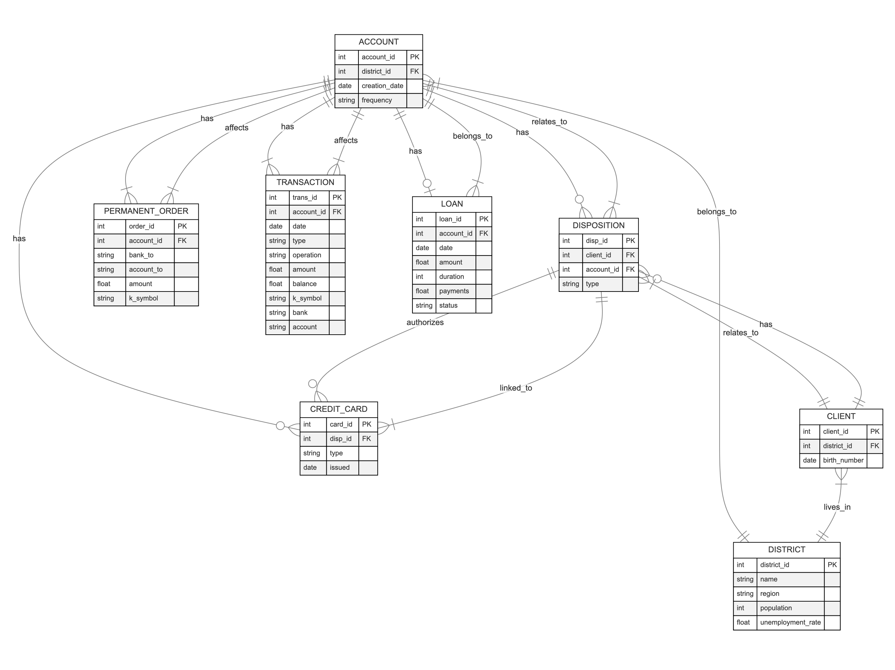
( erstellt mit mermaidchart.com )Wichtige Korrekturen zur Datenstruktur
Eine genaue Untersuchung der Tabellen zeigt, dass sich in der Beschreibung Fehler eingeschlichen haben.
Folgende Korrekturen sind nötig:
- Die Dispositionstabelle (
DISP) stellt eine Viele-zu-Viele-Beziehung zwischen Kunden und Konten dar. - Kreditkarten (
CARD) werden einer Disposition ausgestellt, nicht direkt einem Konto. - Kredite (
LOAN) sind mit Konten verknüpft, nicht mit Kunden. - Daueraufträge (
ORDER) werden vom Kontoinhaber erstellt. - Transaktionen (
TRANS) sind mit Konten verknüpft, um finanzielle Aktivitäten zu verfolgen. - Bezirke (
DISTRICT) beeinflussen sowohl Kunden (Wohnsitz) als auch Konten (Filialstandort).
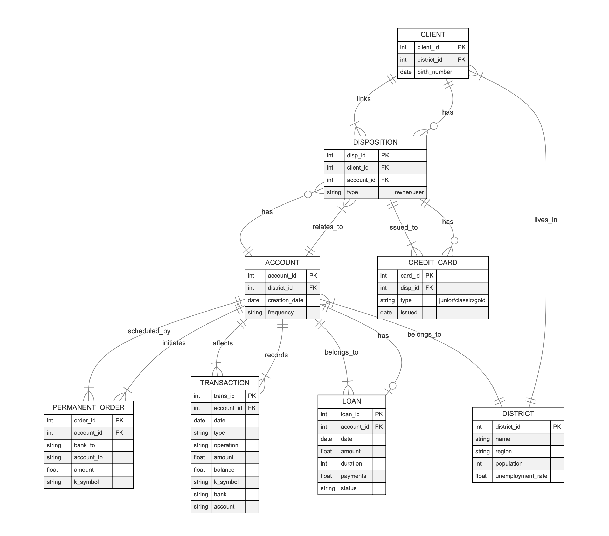
(Erstellt mit mermaidchart.com)
Datenaufbereitung
Zunächst soll die Datenqualität und Struktur der einzelnen Dateien (z. B. ACCOUNT, CLIENT, TRANS, LOAN, CARD, DISTRICT) geprüft werden. Es wird untersucht, ob alle relevanten Datensätze vorliegen, wie groß die Dateien sind und welche ersten Auffälligkeiten es gibt.
import pandas as pd
import numpy as np
import matplotlib.pyplot as plt
import seaborn as sns
import random
# --- Integer-Seed für Reproduzierbarkeit ---
rng = 42
np.random.seed(rng)
random.seed(rng)
# Datenpfad
data_path = 'xselling_banking_data/'
# Laden der Dateien
try:
df_account = pd.read_csv(data_path + 'ACCOUNT.CSV', sep=';', quotechar='"')
df_client = pd.read_csv(data_path + 'CLIENT.CSV', sep=';', quotechar='"')
df_disp = pd.read_csv(data_path + 'DISP.CSV', sep=';', quotechar='"')
df_order = pd.read_csv(data_path + 'ORDER.CSV', delimiter=';', header=None, skiprows=1, names=['order_id', 'account_id', 'bank_to', 'account_to', 'amount', 'k_symbol'])
df_trans = pd.read_csv(data_path + 'TRANS.CSV', delimiter=';', header=None, skiprows=1, names=['trans_id', 'account_id', 'date', 'type', 'operation', 'amount', 'balance', 'k_symbol', 'bank', 'account'],
dtype={'bank': str}, quotechar='"', low_memory=False)
df_loan = pd.read_csv(data_path + 'LOAN.CSV', delimiter=';', header=None, skiprows=1, names=['loan_id', 'account_id', 'date', 'amount', 'duration', 'payments', 'status'])
df_card = pd.read_csv(data_path + 'CARD.CSV', delimiter=';', header=None, skiprows=1, names=['card_id', 'disp_id', 'type', 'issued'])
df_district = pd.read_csv(data_path + 'DISTRICT.CSV', delimiter=';', header=None, skiprows=1,
names=['district_id', 'district_name', 'region', 'no_inhabitants', 'municipalities_<500', 'municipalities_500_1999',
'municipalities_2000_9999', 'municipalities_>10000', 'no_cities', 'urban_ratio', 'avg_salary',
'unemployment_95', 'unemployment_96', 'entrepreneurs_per_1000', 'crimes_95', 'crimes_96'])
except Exception as e:
print('Fehler beim Laden der Daten:', e)
# Erste Exploration: Größe der DataFrames
print('Anzahl Accounts:', df_account.shape)
print('Anzahl Clients:', df_client.shape)
print('Anzahl Dispositionen:', df_disp.shape)
print('Anzahl Orders:', df_order.shape)
print('Anzahl Transaktionen:', df_trans.shape)
print('Anzahl Loans:', df_loan.shape)
print('Anzahl Credit Cards:', df_card.shape)
print('Anzahl Distrikte:', df_district.shape)Anzahl Accounts: (4500, 4)
Anzahl Clients: (5369, 3)
Anzahl Dispositionen: (5369, 4)
Anzahl Orders: (6471, 6)
Anzahl Transaktionen: (1056320, 10)
Anzahl Loans: (682, 7)
Anzahl Credit Cards: (892, 4)
Anzahl Distrikte: (77, 16)Die Daten wurden korrekt eingelesen und die Anzahl Zeilen stimmt ( nach einigen Versuchen und Manipulationen ) mit der Beschreibung überein.
# Basic EDA für alle DataFrames
def basic_eda(df, df_name="DataFrame", show_plots=False):
"""
Führt eine einfache EDA (Exploratory Data Analysis) auf einem Pandas DataFrame durch
und gibt relevante Informationen aus.
Parameter:
-----------
df : pd.DataFrame
Das DataFrame, das analysiert werden soll
df_name : str
Name des DataFrames, wird bei der Ausgabe verwendet
show_plots : bool
Wenn True, werden zusätzlich einfache Histogramme
für numerische Features sowie Countplots für kategorische
Variablen erzeugt.
"""
print(f"\n=== [ {df_name} ] ===")
# 1) Shape
print(f"Shape (Rows x Columns): {df.shape}")
# 2) Datentypen und Speicherplatz
print("\nInfo:")
print(df.info())
# 3) Erste Zeilen
print("\nErste Zeilen:")
print(df.head())
# 4) Statistische Kurzdarstellung
print("\nStatistische Übersicht (describe):")
print(df.describe(include="all"))
# 5) Fehlende Werte
missing_vals = df.isnull().sum()
print("\nAnzahl fehlender Werte pro Spalte:")
print(missing_vals)
# 6) Grundlegende Verteilungen (optional)
if show_plots:
numeric_cols = df.select_dtypes(include=["int", "float", "int64", "float64"]).columns
cat_cols = df.select_dtypes(include=["object", "category"]).columns
# Histogramme für numerische Spalten
if len(numeric_cols) > 0:
df[numeric_cols].hist(figsize=(10, 6), bins=30, layout=(1, len(numeric_cols)), edgecolor='black')
plt.suptitle(f"{df_name} - Numerische Verteilungen", y=1.02, fontsize=14)
plt.tight_layout()
plt.show()
# Countplots für kategorische Spalten (falls wenige Kategorien)
for col in cat_cols:
# Damit der Plot nicht zu überladen wird,
# z.B. nur anzeigen, wenn <= 10 unique Categories.
if df[col].nunique() <= 10:
sns.countplot(x=col, data=df)
plt.title(f"{df_name} - Countplot für '{col}'")
plt.xticks(rotation=45)
plt.tight_layout()
plt.show()Accounts
basic_eda(df_account, df_name="Accounts", show_plots=False)
=== [ Accounts ] ===
Shape (Rows x Columns): (4500, 4)
Info:
<class 'pandas.core.frame.DataFrame'>
RangeIndex: 4500 entries, 0 to 4499
Data columns (total 4 columns):
# Column Non-Null Count Dtype
--- ------ -------------- -----
0 account_id 4500 non-null int64
1 district_id 4500 non-null int64
2 frequency 4500 non-null object
3 date 4500 non-null int64
dtypes: int64(3), object(1)
memory usage: 140.8+ KB
None
Erste Zeilen:
account_id district_id frequency date
0 576 55 POPLATEK MESICNE 930101
1 3818 74 POPLATEK MESICNE 930101
2 704 55 POPLATEK MESICNE 930101
3 2378 16 POPLATEK MESICNE 930101
4 2632 24 POPLATEK MESICNE 930102
Statistische Übersicht (describe):
account_id district_id frequency date
count 4500.000000 4500.000000 4500 4500.000000
unique NaN NaN 3 NaN
top NaN NaN POPLATEK MESICNE NaN
freq NaN NaN 4167 NaN
mean 2786.067556 37.310444 NaN 951654.608667
std 2313.811984 25.177217 NaN 14842.188377
min 1.000000 1.000000 NaN 930101.000000
25% 1182.750000 13.000000 NaN 931227.000000
50% 2368.000000 38.000000 NaN 960102.000000
75% 3552.250000 60.000000 NaN 961101.000000
max 11382.000000 77.000000 NaN 971229.000000
Anzahl fehlender Werte pro Spalte:
account_id 0
district_id 0
frequency 0
date 0
dtype: int64# 1) Spalte date in datetime umwandeln
df_account["date"] = pd.to_datetime(df_account["date"], format="%y%m%d")
# 2) Spalte district_id in int umwandeln
df_account["district_id"] = df_account["district_id"].astype(int)
# 3) Spalte frequency umbenennen
freq_map = {
"POPLATEK MESICNE": "monthly",
"POPLATEK TYDNE": "weekly",
"POPLATEK PO OBRATU": "after_transaction"
}
df_account["frequency"] = df_account["frequency"].map(freq_map)
# 4) Spalte frequency in Kategorien umwandeln
df_account["frequency"] = df_account["frequency"].astype("category")
# 5) Spalte date umbenennen
df_account.rename(columns={"date": "date_created"}, inplace=True)
# 6) Prüfen, ob account_id eindeutig ist
print("Anzahl eindeutiger account_id:", df_account["account_id"].nunique())
print("Anzahl Zeilen:", df_account.shape[0])
# 7) Zeitraum der Daten prüfen
print("Minimales Datum:", df_account["date_created"].min())
print("Maximales Datum:", df_account["date_created"].max())Anzahl eindeutiger account_id: 4500
Anzahl Zeilen: 4500
Minimales Datum: 1993-01-01 00:00:00
Maximales Datum: 1997-12-29 00:00:00basic_eda(df_account, df_name="Accounts", show_plots=False)
=== [ Accounts ] ===
Shape (Rows x Columns): (4500, 4)
Info:
<class 'pandas.core.frame.DataFrame'>
RangeIndex: 4500 entries, 0 to 4499
Data columns (total 4 columns):
# Column Non-Null Count Dtype
--- ------ -------------- -----
0 account_id 4500 non-null int64
1 district_id 4500 non-null int64
2 frequency 4500 non-null category
3 date_created 4500 non-null datetime64[ns]
dtypes: category(1), datetime64[ns](1), int64(2)
memory usage: 110.1 KB
None
Erste Zeilen:
account_id district_id frequency date_created
0 576 55 monthly 1993-01-01
1 3818 74 monthly 1993-01-01
2 704 55 monthly 1993-01-01
3 2378 16 monthly 1993-01-01
4 2632 24 monthly 1993-01-02
Statistische Übersicht (describe):
account_id district_id frequency date_created
count 4500.000000 4500.000000 4500 4500
unique NaN NaN 3 NaN
top NaN NaN monthly NaN
freq NaN NaN 4167 NaN
mean 2786.067556 37.310444 NaN 1995-08-08 01:38:52.800000
min 1.000000 1.000000 NaN 1993-01-01 00:00:00
25% 1182.750000 13.000000 NaN 1993-12-27 00:00:00
50% 2368.000000 38.000000 NaN 1996-01-02 00:00:00
75% 3552.250000 60.000000 NaN 1996-11-01 00:00:00
max 11382.000000 77.000000 NaN 1997-12-29 00:00:00
std 2313.811984 25.177217 NaN NaN
Anzahl fehlender Werte pro Spalte:
account_id 0
district_id 0
frequency 0
date_created 0
dtype: int64Zusammenfassung der Änderungen im DataFrame df_account
- Datum in datetime-Format konvertiert
- Die Spalte
datewurde in das datetime-Format (%y%m%d) umgewandelt und anschließend indate_createdumbenannt. - Ermöglicht eine einfachere Zeitreihenanalyse.
- Die Spalte
- Spalte
district_idin int umgewandelt- Sicherstellung, dass die
district_idals numerischer Wert behandelt wird.
- Sicherstellung, dass die
- Spalte
frequencyumbenannt und Werte übersetzt"POPLATEK MESICNE"→"monthly""POPLATEK TYDNE"→"weekly""POPLATEK PO OBRATU"→"after_transaction"
- Spalte
frequencyin eine kategorische Variable (category) umgewandelt- Spart Speicherplatz und verbessert die Performance bei Analysen.
- Spalte
dateindate_createdumbenannt- Erhöht die Lesbarkeit der Daten.
- Überprüfung der
account_id-Eindeutigkeitaccount_idwurde auf Einzigartigkeit geprüft, um sicherzustellen, dass es sich um einen Primärschlüssel handelt.
- Analyse des Datenzeitraums
- Es wurde das früheste und späteste
date_createdgeprüft, um den verfügbaren Datenbereich zu verstehen.
- Es wurde das früheste und späteste
Clients
basic_eda(df_client, df_name="Clients", show_plots=False)
=== [ Clients ] ===
Shape (Rows x Columns): (5369, 3)
Info:
<class 'pandas.core.frame.DataFrame'>
RangeIndex: 5369 entries, 0 to 5368
Data columns (total 3 columns):
# Column Non-Null Count Dtype
--- ------ -------------- -----
0 client_id 5369 non-null int64
1 birth_number 5369 non-null int64
2 district_id 5369 non-null int64
dtypes: int64(3)
memory usage: 126.0 KB
None
Erste Zeilen:
client_id birth_number district_id
0 1 706213 18
1 2 450204 1
2 3 406009 1
3 4 561201 5
4 5 605703 5
Statistische Übersicht (describe):
client_id birth_number district_id
count 5369.000000 5369.000000 5369.000000
mean 3359.011920 535114.970013 37.310114
std 2832.911984 172895.618429 25.043690
min 1.000000 110820.000000 1.000000
25% 1418.000000 406009.000000 14.000000
50% 2839.000000 540829.000000 38.000000
75% 4257.000000 681013.000000 60.000000
max 13998.000000 875927.000000 77.000000
Anzahl fehlender Werte pro Spalte:
client_id 0
birth_number 0
district_id 0
dtype: int64# 1) Strings extrahieren
bn_str = df_client["birth_number"].astype(str)
# 2) Jahr, Monat, Tag auslesen
years = bn_str.str[0:2].astype(int)
months = bn_str.str[2:4].astype(int)
days = bn_str.str[4:6].astype(int)
# 3) Geschlecht bestimmen, Monate ggf. korrigieren
is_female = (months > 50)
months[is_female] = months[is_female] - 50 # 50 abziehen für Frauen
# 4) Jahreszahlen von YY in YYYY umwandeln
year_corrected = []
for y in years:
# Century-Logik (hier: <=19 => 2000+ , sonst 1900+)
if y <= 19:
year_corrected.append(y + 2000)
else:
year_corrected.append(y + 1900)
# 5) birth_date zusammenbauen
birth_date_list = []
for y, m, d in zip(year_corrected, months, days):
try:
birth_date_list.append(pd.Timestamp(y, m, d))
except ValueError:
# ungültiges Datum => NaT
birth_date_list.append(pd.NaT)
df_client["birth_date"] = birth_date_list
df_client["gender"] = pd.Categorical(["F" if f else "M" for f in is_female])
# 6) Alter am 1.1.1999 berechnen
reference_date = pd.Timestamp("1999-01-01")
df_client["alter_1999"] = (reference_date - df_client["birth_date"]).dt.days // 365
# Datentyp ganzzahlig machen:
df_client["alter_1999"] = df_client["alter_1999"].astype("Int64")
# 7) Spalte birth_number droppen
df_client.drop(columns=["birth_number"], inplace=True)
# 8) Geburtsjahre kontrollieren
min_year = df_client["birth_date"].dt.year.min()
max_year = df_client["birth_date"].dt.year.max()
print(f"Geburtsjahre liegen zwischen {min_year} und {max_year}.")Geburtsjahre liegen zwischen 1920 und 2019.basic_eda(df_client, df_name="Clients", show_plots=False)
=== [ Clients ] ===
Shape (Rows x Columns): (5369, 5)
Info:
<class 'pandas.core.frame.DataFrame'>
RangeIndex: 5369 entries, 0 to 5368
Data columns (total 5 columns):
# Column Non-Null Count Dtype
--- ------ -------------- -----
0 client_id 5369 non-null int64
1 district_id 5369 non-null int64
2 birth_date 5369 non-null datetime64[ns]
3 gender 5369 non-null category
4 alter_1999 5369 non-null Int64
dtypes: Int64(1), category(1), datetime64[ns](1), int64(2)
memory usage: 178.5 KB
None
Erste Zeilen:
client_id district_id birth_date gender alter_1999
0 1 18 1970-12-13 F 28
1 2 1 1945-02-04 M 53
2 3 1 1940-10-09 F 58
3 4 5 1956-12-01 M 42
4 5 5 1960-07-03 F 38
Statistische Übersicht (describe):
client_id district_id birth_date gender \
count 5369.000000 5369.000000 5369 5369
unique NaN NaN NaN 2
top NaN NaN NaN M
freq NaN NaN NaN 2724
mean 3359.011920 37.310114 1955-10-27 22:23:26.742410176 NaN
min 1.000000 1.000000 1920-01-06 00:00:00 NaN
25% 1418.000000 14.000000 1942-01-05 00:00:00 NaN
50% 2839.000000 38.000000 1955-08-16 00:00:00 NaN
75% 4257.000000 60.000000 1969-08-06 00:00:00 NaN
max 13998.000000 77.000000 2019-12-21 00:00:00 NaN
std 2832.911984 25.043690 NaN NaN
alter_1999
count 5369.0
unique <NA>
top <NA>
freq <NA>
mean 42.707953
min -21.0
25% 29.0
50% 43.0
75% 57.0
max 79.0
std 18.879708
Anzahl fehlender Werte pro Spalte:
client_id 0
district_id 0
birth_date 0
gender 0
alter_1999 0
dtype: int64Zusammenfassung der Änderungen im DataFrame df_client
- Extrahieren der
birth_number-Daten- Die Spalte
birth_numberwurde in einen String (str) umgewandelt, um daraus Jahr, Monat und Tag zu extrahieren.
- Die Spalte
- Jahr, Monat und Tag auslesen
- Die ersten zwei Zeichen (YY) wurden als Jahr, die nächsten zwei als Monat und die letzten zwei als Tag interpretiert.
- Geschlecht bestimmen & Monatswerte korrigieren
- Frauen haben einen um 50 erhöhten Monatswert (MM+50), dieser wurde um 50 reduziert.
- Daraus wurde eine neue
gender-Spalte (“M” für Männer, “F” für Frauen) als kategoriale Variable erstellt.
- Jahreszahlen von YY in YYYY umgewandelt
- Werte ≤ 19 wurden als 2000+YY, alle anderen als 1900+YY interpretiert.
- Geburtsdatum (
birth_date) erstellen- Die bereinigten Jahr-, Monat- und Tag-Werte wurden kombiniert, um echte
datetime-Werte zu erstellen. - Falls das Datum ungültig war (z. B. 31.02.), wurde es als NaT (Not a Time) gesetzt.
- Die bereinigten Jahr-, Monat- und Tag-Werte wurden kombiniert, um echte
- Alter zum 01.01.1999 berechnet (
alter_1999)- Differenz zwischen
birth_dateund Referenzdatum “1999-01-01”. - Umwandlung in eine ganzzahlige (
Int64) Spalte, um NaN-Werte zuzulassen.
- Differenz zwischen
- Spalte
birth_numberentfernt- Nachdem alle relevanten Informationen extrahiert wurden, wurde die Originalspalte
birth_numbergelöscht.
- Nachdem alle relevanten Informationen extrahiert wurden, wurde die Originalspalte
- Datenqualität überprüft
- Kontrolle, ob die Geburtsjahre in einem realistischen Bereich liegen (
min_yearundmax_year).
- Kontrolle, ob die Geburtsjahre in einem realistischen Bereich liegen (
Dispositionen
basic_eda(df_disp, df_name="Dispositionen", show_plots=False)
=== [ Dispositionen ] ===
Shape (Rows x Columns): (5369, 4)
Info:
<class 'pandas.core.frame.DataFrame'>
RangeIndex: 5369 entries, 0 to 5368
Data columns (total 4 columns):
# Column Non-Null Count Dtype
--- ------ -------------- -----
0 disp_id 5369 non-null int64
1 client_id 5369 non-null int64
2 account_id 5369 non-null int64
3 type 5369 non-null object
dtypes: int64(3), object(1)
memory usage: 167.9+ KB
None
Erste Zeilen:
disp_id client_id account_id type
0 1 1 1 OWNER
1 2 2 2 OWNER
2 3 3 2 DISPONENT
3 4 4 3 OWNER
4 5 5 3 DISPONENT
Statistische Übersicht (describe):
disp_id client_id account_id type
count 5369.000000 5369.000000 5369.000000 5369
unique NaN NaN NaN 2
top NaN NaN NaN OWNER
freq NaN NaN NaN 4500
mean 3337.097970 3359.011920 2767.496927 NaN
std 2770.418826 2832.911984 2307.843630 NaN
min 1.000000 1.000000 1.000000 NaN
25% 1418.000000 1418.000000 1178.000000 NaN
50% 2839.000000 2839.000000 2349.000000 NaN
75% 4257.000000 4257.000000 3526.000000 NaN
max 13690.000000 13998.000000 11382.000000 NaN
Anzahl fehlender Werte pro Spalte:
disp_id 0
client_id 0
account_id 0
type 0
dtype: int64# 1) Spalte 'type' zu 'role' umbenennen
df_disp.rename(columns={"type": "role"}, inplace=True)
# 2) 'role' als kategorisch festlegen
df_disp["role"] = df_disp["role"].astype("category")
# 3) Konsistenzprüfung: Gibt es genau 1 Owner pro Konto?
# a) Anzahl Besitzer pro Konto ermitteln
owner_counts = (
df_disp.loc[df_disp["role"] == "OWNER"]
.groupby("account_id")["client_id"]
.count()
)
# b) Wie viele Konten haben KEINEN Owner?
# (d.h. 'owner_counts' enthält nur Konten mit mindestens 1 Owner,
# also müssen wir Konten mit 0 Owner anderweitig prüfen)
all_accounts = df_disp["account_id"].unique()
accounts_with_owner = owner_counts.index.unique()
accounts_without_owner = set(all_accounts) - set(accounts_with_owner)
print(f"Anzahl Konten ohne Owner: {len(accounts_without_owner)}")
# c) Wie viele Konten haben MEHR als 1 Owner?
multiple_owner = owner_counts[owner_counts > 1]
print(f"Anzahl Konten mit mehr als 1 Owner: {len(multiple_owner)}")
# d) Bei Bedarf genauer ansehen
if len(accounts_without_owner) > 0:
print("Beispiele für Konten ohne Owner:", list(accounts_without_owner)[:10])
if len(multiple_owner) > 0:
print("Beispiele für Konten mit mehreren Ownern:")
print(multiple_owner.head(10))
# Kurzer Überblick über role-Verteilung
print("\nVerteilung der Rollen:")
print(df_disp["role"].value_counts(dropna=False))Anzahl Konten ohne Owner: 0
Anzahl Konten mit mehr als 1 Owner: 0
Verteilung der Rollen:
role
OWNER 4500
DISPONENT 869
Name: count, dtype: int64basic_eda(df_disp, df_name="Dispositionen", show_plots=False)
=== [ Dispositionen ] ===
Shape (Rows x Columns): (5369, 4)
Info:
<class 'pandas.core.frame.DataFrame'>
RangeIndex: 5369 entries, 0 to 5368
Data columns (total 4 columns):
# Column Non-Null Count Dtype
--- ------ -------------- -----
0 disp_id 5369 non-null int64
1 client_id 5369 non-null int64
2 account_id 5369 non-null int64
3 role 5369 non-null category
dtypes: category(1), int64(3)
memory usage: 131.3 KB
None
Erste Zeilen:
disp_id client_id account_id role
0 1 1 1 OWNER
1 2 2 2 OWNER
2 3 3 2 DISPONENT
3 4 4 3 OWNER
4 5 5 3 DISPONENT
Statistische Übersicht (describe):
disp_id client_id account_id role
count 5369.000000 5369.000000 5369.000000 5369
unique NaN NaN NaN 2
top NaN NaN NaN OWNER
freq NaN NaN NaN 4500
mean 3337.097970 3359.011920 2767.496927 NaN
std 2770.418826 2832.911984 2307.843630 NaN
min 1.000000 1.000000 1.000000 NaN
25% 1418.000000 1418.000000 1178.000000 NaN
50% 2839.000000 2839.000000 2349.000000 NaN
75% 4257.000000 4257.000000 3526.000000 NaN
max 13690.000000 13998.000000 11382.000000 NaN
Anzahl fehlender Werte pro Spalte:
disp_id 0
client_id 0
account_id 0
role 0
dtype: int64Zusammenfassung der Änderungen im DataFrame df_disp
- Spalte
typeinroleumbenannt- Erhöht die Verständlichkeit, da
roledie Funktion eines Kunden im Konto beschreibt.
- Erhöht die Verständlichkeit, da
- Spalte
roleals kategoriale Variable (category) umgewandelt- Spart Speicherplatz und verbessert die Performance bei Analysen.
- Konsistenzprüfung: Gibt es genau einen Besitzer (OWNER) pro Konto?
- Anzahl der
OWNERpro Konto ermittelt. - Konten ohne
OWNERidentifiziert und gezählt. - Konten mit mehreren
OWNERaufgedeckt.
- Anzahl der
- Ergebnisse der Prüfung ausgegeben
- Anzahl der Konten ohne Besitzer.
- Anzahl der Konten mit mehr als einem Besitzer.
- Beispiele für problematische Konten zur manuellen Überprüfung angezeigt.
- Übersicht über die Verteilung der Rollen (
role) im DataFrame ausgegeben- Gibt an, wie oft jede Rolle (
OWNER,DISPONENT) im Datensatz vorkommt.
- Gibt an, wie oft jede Rolle (
Orders
basic_eda(df_order, df_name="Orders", show_plots=False)
=== [ Orders ] ===
Shape (Rows x Columns): (6471, 6)
Info:
<class 'pandas.core.frame.DataFrame'>
RangeIndex: 6471 entries, 0 to 6470
Data columns (total 6 columns):
# Column Non-Null Count Dtype
--- ------ -------------- -----
0 order_id 6471 non-null int64
1 account_id 6471 non-null int64
2 bank_to 6471 non-null object
3 account_to 6471 non-null int64
4 amount 6471 non-null float64
5 k_symbol 6471 non-null object
dtypes: float64(1), int64(3), object(2)
memory usage: 303.5+ KB
None
Erste Zeilen:
order_id account_id bank_to account_to amount k_symbol
0 29401 1 YZ 87144583 2452.0 SIPO
1 29402 2 ST 89597016 3372.7 UVER
2 29403 2 QR 13943797 7266.0 SIPO
3 29404 3 WX 83084338 1135.0 SIPO
4 29405 3 CD 24485939 327.0
Statistische Übersicht (describe):
order_id account_id bank_to account_to amount \
count 6471.000000 6471.000000 6471 6.471000e+03 6471.000000
unique NaN NaN 13 NaN NaN
top NaN NaN QR NaN NaN
freq NaN NaN 531 NaN NaN
mean 33778.197497 2962.302890 NaN 4.939904e+07 3280.635698
std 3737.681949 2518.503228 NaN 2.888356e+07 2714.475335
min 29401.000000 1.000000 NaN 3.990000e+02 1.000000
25% 31187.500000 1223.000000 NaN 2.415918e+07 1241.500000
50% 32988.000000 2433.000000 NaN 4.975606e+07 2596.000000
75% 34785.500000 3645.500000 NaN 7.400045e+07 4613.500000
max 46338.000000 11362.000000 NaN 9.999420e+07 14882.000000
k_symbol
count 6471
unique 5
top SIPO
freq 3502
mean NaN
std NaN
min NaN
25% NaN
50% NaN
75% NaN
max NaN
Anzahl fehlender Werte pro Spalte:
order_id 0
account_id 0
bank_to 0
account_to 0
amount 0
k_symbol 0
dtype: int64# K_symbol: "POJISTNE" → "insurance", "SIPO" → "household", ...
k_symbol_map = {
"POJISTNE": "insurance",
"SIPO": "household",
"LEASING": "leasing",
"UVER": "loan_payment",
" ": "other" # für leere Einträge
}
df_order["k_symbol"] = df_order["k_symbol"].map(k_symbol_map).astype("category")
# Umbenennungen
df_order.rename(columns={
"bank_to": "bank_code_recipient",
"account_to": "account_number_recipient"
}, inplace=True)
# Umwandlung in kategoriellen Datentyp
df_order["bank_code_recipient"] = df_order["bank_code_recipient"].astype("category")
df_order["k_symbol"] = df_order["k_symbol"].astype("category")
# Prüfen auf Duplikate in order_id (sollte 0 sein)
duplicates = df_order["order_id"].duplicated().sum()
print("Anzahl Duplikate in order_id:", duplicates)Anzahl Duplikate in order_id: 0basic_eda(df_order, df_name="Orders", show_plots=False)
=== [ Orders ] ===
Shape (Rows x Columns): (6471, 6)
Info:
<class 'pandas.core.frame.DataFrame'>
RangeIndex: 6471 entries, 0 to 6470
Data columns (total 6 columns):
# Column Non-Null Count Dtype
--- ------ -------------- -----
0 order_id 6471 non-null int64
1 account_id 6471 non-null int64
2 bank_code_recipient 6471 non-null category
3 account_number_recipient 6471 non-null int64
4 amount 6471 non-null float64
5 k_symbol 6471 non-null category
dtypes: category(2), float64(1), int64(3)
memory usage: 215.8 KB
None
Erste Zeilen:
order_id account_id bank_code_recipient account_number_recipient amount \
0 29401 1 YZ 87144583 2452.0
1 29402 2 ST 89597016 3372.7
2 29403 2 QR 13943797 7266.0
3 29404 3 WX 83084338 1135.0
4 29405 3 CD 24485939 327.0
k_symbol
0 household
1 loan_payment
2 household
3 household
4 other
Statistische Übersicht (describe):
order_id account_id bank_code_recipient \
count 6471.000000 6471.000000 6471
unique NaN NaN 13
top NaN NaN QR
freq NaN NaN 531
mean 33778.197497 2962.302890 NaN
std 3737.681949 2518.503228 NaN
min 29401.000000 1.000000 NaN
25% 31187.500000 1223.000000 NaN
50% 32988.000000 2433.000000 NaN
75% 34785.500000 3645.500000 NaN
max 46338.000000 11362.000000 NaN
account_number_recipient amount k_symbol
count 6.471000e+03 6471.000000 6471
unique NaN NaN 5
top NaN NaN household
freq NaN NaN 3502
mean 4.939904e+07 3280.635698 NaN
std 2.888356e+07 2714.475335 NaN
min 3.990000e+02 1.000000 NaN
25% 2.415918e+07 1241.500000 NaN
50% 4.975606e+07 2596.000000 NaN
75% 7.400045e+07 4613.500000 NaN
max 9.999420e+07 14882.000000 NaN
Anzahl fehlender Werte pro Spalte:
order_id 0
account_id 0
bank_code_recipient 0
account_number_recipient 0
amount 0
k_symbol 0
dtype: int64Zusammenfassung der Änderungen im DataFrame df_order
- Spalte
k_symbolübersetzt und kategorisiert- Werte wurden von Tschechisch ins Englische übersetzt:
"POJISTNE"→"insurance""SIPO"→"household""LEASING"→"leasing""UVER"→"loan_payment"
- Leere Werte (
" ") wurden als"other"ersetzt. - Die Spalte wurde anschließend als kategorische Variable (
category) gespeichert.
- Werte wurden von Tschechisch ins Englische übersetzt:
- Spalten umbenannt für bessere Lesbarkeit
bank_to→bank_code_recipientaccount_to→account_number_recipient
- Weitere Spalten in kategorische Variablen umgewandelt
bank_code_recipientk_symbol- Spart Speicherplatz und verbessert Analysen.
- Prüfung auf doppelte
order_id-Werte- Falls
order_iddoppelt vorkommt, könnte das auf Datenprobleme hinweisen. - Ergebnis wird ausgegeben (Anzahl Duplikate).
- Falls
Transaktionen
basic_eda(df_trans, df_name="Transaktionen", show_plots=False)
=== [ Transaktionen ] ===
Shape (Rows x Columns): (1056320, 10)
Info:
<class 'pandas.core.frame.DataFrame'>
RangeIndex: 1056320 entries, 0 to 1056319
Data columns (total 10 columns):
# Column Non-Null Count Dtype
--- ------ -------------- -----
0 trans_id 1056320 non-null int64
1 account_id 1056320 non-null int64
2 date 1056320 non-null int64
3 type 1056320 non-null object
4 operation 873206 non-null object
5 amount 1056320 non-null float64
6 balance 1056320 non-null float64
7 k_symbol 574439 non-null object
8 bank 273508 non-null object
9 account 295389 non-null float64
dtypes: float64(3), int64(3), object(4)
memory usage: 80.6+ MB
None
Erste Zeilen:
trans_id account_id date type operation amount balance k_symbol \
0 695247 2378 930101 PRIJEM VKLAD 700.0 700.0 NaN
1 171812 576 930101 PRIJEM VKLAD 900.0 900.0 NaN
2 207264 704 930101 PRIJEM VKLAD 1000.0 1000.0 NaN
3 1117247 3818 930101 PRIJEM VKLAD 600.0 600.0 NaN
4 579373 1972 930102 PRIJEM VKLAD 400.0 400.0 NaN
bank account
0 NaN NaN
1 NaN NaN
2 NaN NaN
3 NaN NaN
4 NaN NaN
Statistische Übersicht (describe):
trans_id account_id date type operation \
count 1.056320e+06 1.056320e+06 1.056320e+06 1056320 873206
unique NaN NaN NaN 3 5
top NaN NaN NaN VYDAJ VYBER
freq NaN NaN NaN 634571 434918
mean 1.335311e+06 2.936867e+03 9.656748e+05 NaN NaN
std 1.227487e+06 2.477345e+03 1.394535e+04 NaN NaN
min 1.000000e+00 1.000000e+00 9.301010e+05 NaN NaN
25% 4.302628e+05 1.204000e+03 9.601160e+05 NaN NaN
50% 8.585065e+05 2.434000e+03 9.704100e+05 NaN NaN
75% 2.060979e+06 3.660000e+03 9.802280e+05 NaN NaN
max 3.682987e+06 1.138200e+04 9.812310e+05 NaN NaN
amount balance k_symbol bank account
count 1.056320e+06 1.056320e+06 574439 273508 2.953890e+05
unique NaN NaN 8 13 NaN
top NaN NaN UROK QR NaN
freq NaN NaN 183114 22285 NaN
mean 5.924146e+03 3.851833e+04 NaN NaN 4.567092e+07
std 9.522735e+03 2.211787e+04 NaN NaN 3.066340e+07
min 0.000000e+00 -4.112570e+04 NaN NaN 0.000000e+00
25% 1.359000e+02 2.240250e+04 NaN NaN 1.782858e+07
50% 2.100000e+03 3.314340e+04 NaN NaN 4.575095e+07
75% 6.800000e+03 4.960362e+04 NaN NaN 7.201341e+07
max 8.740000e+04 2.096370e+05 NaN NaN 9.999420e+07
Anzahl fehlender Werte pro Spalte:
trans_id 0
account_id 0
date 0
type 0
operation 183114
amount 0
balance 0
k_symbol 481881
bank 782812
account 760931
dtype: int64# 1) Spalten umbenennen
df_trans.rename(
columns={
"type": "trans_type",
"operation": "trans_operation",
"account": "partner_account"
},
inplace=True
)
# 2) Spalte 'date' als Datumsformat parsen
df_trans["date"] = pd.to_datetime(df_trans["date"], format="%y%m%d", errors="coerce")
# 3) Fehlende Werte füllen
df_trans["trans_operation"] = df_trans["trans_operation"].fillna("unknown")
df_trans["k_symbol"] = df_trans["k_symbol"].fillna("NA")
df_trans["bank"] = df_trans["bank"].fillna("NA")
# 4) Tschechisch->Englisch Mapping
mapping_type = {"PRIJEM": "credit", "VYDAJ": "debit"}
df_trans["trans_type"] = df_trans["trans_type"].replace(mapping_type)
mapping_op = {
"VKLAD": "deposit",
"VYBER": "withdrawal",
"VYBER KARTOU": "card_withdrawal",
"PREVOD NA UCET": "transfer_to_bank",
"PREVOD Z UCTU": "transfer_from_bank",
"unknown": "unknown"
}
df_trans["trans_operation"] = df_trans["trans_operation"].replace(mapping_op)
mapping_k = {
"POJISTNE": "insurance",
"SLUZBY": "payment_services",
"SIPO": "household",
"UROK": "interest",
"SANKC. UROK": "penalty_interest",
"DUCHOD": "pension",
"UVER": "loan_payment",
"NA": "NA",
" ": "NA"
}
df_trans["k_symbol"] = df_trans["k_symbol"].replace(mapping_k)
# 5) Jetzt kategorische Umwandlung vornehmen
cat_cols = ["trans_type", "trans_operation", "k_symbol", "bank"]
for col in cat_cols:
df_trans[col] = df_trans[col].astype("category")
# 6) Numerische Umwandlung
df_trans["partner_account"] = df_trans["partner_account"].astype("Int64")
# 7) Transaktionsjahre kontrollieren
min_year = df_trans["date"].dt.year.min()
max_year = df_trans["date"].dt.year.max()
print(f"Transaktionsjahre liegen zwischen {min_year} und {max_year}.")Transaktionsjahre liegen zwischen 1993 und 1998.basic_eda(df_trans, df_name="Transaktionen", show_plots=False)
=== [ Transaktionen ] ===
Shape (Rows x Columns): (1056320, 10)
Info:
<class 'pandas.core.frame.DataFrame'>
RangeIndex: 1056320 entries, 0 to 1056319
Data columns (total 10 columns):
# Column Non-Null Count Dtype
--- ------ -------------- -----
0 trans_id 1056320 non-null int64
1 account_id 1056320 non-null int64
2 date 1056320 non-null datetime64[ns]
3 trans_type 1056320 non-null category
4 trans_operation 1056320 non-null category
5 amount 1056320 non-null float64
6 balance 1056320 non-null float64
7 k_symbol 1056320 non-null category
8 bank 1056320 non-null category
9 partner_account 295389 non-null Int64
dtypes: Int64(1), category(4), datetime64[ns](1), float64(2), int64(2)
memory usage: 53.4 MB
None
Erste Zeilen:
trans_id account_id date trans_type trans_operation amount \
0 695247 2378 1993-01-01 credit deposit 700.0
1 171812 576 1993-01-01 credit deposit 900.0
2 207264 704 1993-01-01 credit deposit 1000.0
3 1117247 3818 1993-01-01 credit deposit 600.0
4 579373 1972 1993-01-02 credit deposit 400.0
balance k_symbol bank partner_account
0 700.0 NA NA <NA>
1 900.0 NA NA <NA>
2 1000.0 NA NA <NA>
3 600.0 NA NA <NA>
4 400.0 NA NA <NA>
Statistische Übersicht (describe):
trans_id account_id date trans_type \
count 1.056320e+06 1.056320e+06 1056320 1056320
unique NaN NaN NaN 3
top NaN NaN NaN debit
freq NaN NaN NaN 634571
mean 1.335311e+06 2.936867e+03 1997-01-04 07:29:27.037261952 NaN
min 1.000000e+00 1.000000e+00 1993-01-01 00:00:00 NaN
25% 4.302628e+05 1.204000e+03 1996-01-16 00:00:00 NaN
50% 8.585065e+05 2.434000e+03 1997-04-10 00:00:00 NaN
75% 2.060979e+06 3.660000e+03 1998-02-28 00:00:00 NaN
max 3.682987e+06 1.138200e+04 1998-12-31 00:00:00 NaN
std 1.227487e+06 2.477345e+03 NaN NaN
trans_operation amount balance k_symbol bank \
count 1056320 1.056320e+06 1.056320e+06 1056320 1056320
unique 6 NaN NaN 8 14
top withdrawal NaN NaN NA NA
freq 434918 NaN NaN 535314 782812
mean NaN 5.924146e+03 3.851833e+04 NaN NaN
min NaN 0.000000e+00 -4.112570e+04 NaN NaN
25% NaN 1.359000e+02 2.240250e+04 NaN NaN
50% NaN 2.100000e+03 3.314340e+04 NaN NaN
75% NaN 6.800000e+03 4.960362e+04 NaN NaN
max NaN 8.740000e+04 2.096370e+05 NaN NaN
std NaN 9.522735e+03 2.211787e+04 NaN NaN
partner_account
count 295389.0
unique <NA>
top <NA>
freq <NA>
mean 45670919.374916
min 0.0
25% 17828584.0
50% 45750951.0
75% 72013407.0
max 99994199.0
std 30663396.851206
Anzahl fehlender Werte pro Spalte:
trans_id 0
account_id 0
date 0
trans_type 0
trans_operation 0
amount 0
balance 0
k_symbol 0
bank 0
partner_account 760931
dtype: int64Zusammenfassung der Änderungen im DataFrame df_trans
Spalten umbenannt für bessere Lesbarkeit
type→trans_typeoperation→trans_operationaccount→partner_account
Spalte
datein ein Datumsformat (datetime) umgewandelt"%y%m%d"-Format geparst, um korrekte Zeitwerte zu erhalten.- Fehlerhafte Werte (
errors="coerce") werden als NaT gespeichert.
Fehlende Werte (NaN) ersetzt
trans_operation→"unknown"k_symbol→"NA"bank→"NA"
Tschechisch → Englisch Mapping für bessere Interpretierbarkeit
trans_type:"PRIJEM"→"credit""VYDAJ"→"debit"
trans_operation:"VKLAD"→"deposit""VYBER"→"withdrawal""VYBER KARTOU"→"card_withdrawal""PREVOD NA UCET"→"transfer_to_bank""PREVOD Z UCTU"→"transfer_from_bank"
k_symbol:"POJISTNE"→"insurance""SIPO"→"household""SLUZBY"→"payment_services""UROK"→"interest""SANKC. UROK"→"penalty_interest""DUCHOD"→"pension""UVER"→"loan_payment"
Kategorische Spalten zur Speicheroptimierung konvertiert
trans_type,trans_operation,k_symbol,bank→category
Spalte
partner_accountnumerisch (Int64) umgewandeltZeitraum der Transaktionsdaten überprüft
- Min. und max. Transaktionsjahr wurden ausgegeben, um sicherzustellen, dass die Daten plausibel sind.
Loans
basic_eda(df_loan, df_name="Loans", show_plots=False)
=== [ Loans ] ===
Shape (Rows x Columns): (682, 7)
Info:
<class 'pandas.core.frame.DataFrame'>
RangeIndex: 682 entries, 0 to 681
Data columns (total 7 columns):
# Column Non-Null Count Dtype
--- ------ -------------- -----
0 loan_id 682 non-null int64
1 account_id 682 non-null int64
2 date 682 non-null int64
3 amount 682 non-null int64
4 duration 682 non-null int64
5 payments 682 non-null float64
6 status 682 non-null object
dtypes: float64(1), int64(5), object(1)
memory usage: 37.4+ KB
None
Erste Zeilen:
loan_id account_id date amount duration payments status
0 5314 1787 930705 96396 12 8033.0 B
1 5316 1801 930711 165960 36 4610.0 A
2 6863 9188 930728 127080 60 2118.0 A
3 5325 1843 930803 105804 36 2939.0 A
4 7240 11013 930906 274740 60 4579.0 A
Statistische Übersicht (describe):
loan_id account_id date amount duration \
count 682.000000 682.000000 682.000000 682.000000 682.000000
unique NaN NaN NaN NaN NaN
top NaN NaN NaN NaN NaN
freq NaN NaN NaN NaN NaN
mean 6172.466276 5824.162757 963027.910557 151410.175953 36.492669
std 682.579279 3283.512681 14616.406049 113372.406310 17.075219
min 4959.000000 2.000000 930705.000000 4980.000000 12.000000
25% 5577.500000 2967.000000 950704.500000 66732.000000 24.000000
50% 6176.500000 5738.500000 970206.500000 116928.000000 36.000000
75% 6752.500000 8686.000000 971212.500000 210654.000000 48.000000
max 7308.000000 11362.000000 981208.000000 590820.000000 60.000000
payments status
count 682.000000 682
unique NaN 4
top NaN C
freq NaN 403
mean 4190.664223 NaN
std 2215.830344 NaN
min 304.000000 NaN
25% 2477.000000 NaN
50% 3934.000000 NaN
75% 5813.500000 NaN
max 9910.000000 NaN
Anzahl fehlender Werte pro Spalte:
loan_id 0
account_id 0
date 0
amount 0
duration 0
payments 0
status 0
dtype: int64# 1) Datum konvertieren
df_loan["date"] = pd.to_datetime(df_loan["date"], format="%y%m%d")
df_loan.rename(columns={"date": "loan_date"}, inplace=True)
# 2) Sinnvolle Umbenennungen
df_loan.rename(columns={
"status": "loan_status",
"amount": "loan_amount",
"payments": "monthly_payment"
}, inplace=True)
# 3) loan_status als category (inkl. Mapping)
status_map = {
"A": "finished_no_problems",
"B": "finished_not_paid",
"C": "running_ok",
"D": "running_debt"
}
df_loan["loan_status"] = df_loan["loan_status"].replace(status_map).astype("category")
# 4) Datumsbereich prüfen
min_year = df_loan["loan_date"].dt.year.min()
max_year = df_loan["loan_date"].dt.year.max()
print(f"Loanjahre liegen zwischen {min_year} und {max_year}.")Loanjahre liegen zwischen 1993 und 1998.basic_eda(df_loan, df_name="Loans", show_plots=False)
=== [ Loans ] ===
Shape (Rows x Columns): (682, 7)
Info:
<class 'pandas.core.frame.DataFrame'>
RangeIndex: 682 entries, 0 to 681
Data columns (total 7 columns):
# Column Non-Null Count Dtype
--- ------ -------------- -----
0 loan_id 682 non-null int64
1 account_id 682 non-null int64
2 loan_date 682 non-null datetime64[ns]
3 loan_amount 682 non-null int64
4 duration 682 non-null int64
5 monthly_payment 682 non-null float64
6 loan_status 682 non-null category
dtypes: category(1), datetime64[ns](1), float64(1), int64(4)
memory usage: 33.0 KB
None
Erste Zeilen:
loan_id account_id loan_date loan_amount duration monthly_payment \
0 5314 1787 1993-07-05 96396 12 8033.0
1 5316 1801 1993-07-11 165960 36 4610.0
2 6863 9188 1993-07-28 127080 60 2118.0
3 5325 1843 1993-08-03 105804 36 2939.0
4 7240 11013 1993-09-06 274740 60 4579.0
loan_status
0 finished_not_paid
1 finished_no_problems
2 finished_no_problems
3 finished_no_problems
4 finished_no_problems
Statistische Übersicht (describe):
loan_id account_id loan_date \
count 682.000000 682.000000 682
unique NaN NaN NaN
top NaN NaN NaN
freq NaN NaN NaN
mean 6172.466276 5824.162757 1996-09-29 05:35:43.108504448
min 4959.000000 2.000000 1993-07-05 00:00:00
25% 5577.500000 2967.000000 1995-07-04 12:00:00
50% 6176.500000 5738.500000 1997-02-06 12:00:00
75% 6752.500000 8686.000000 1997-12-12 12:00:00
max 7308.000000 11362.000000 1998-12-08 00:00:00
std 682.579279 3283.512681 NaN
loan_amount duration monthly_payment loan_status
count 682.000000 682.000000 682.000000 682
unique NaN NaN NaN 4
top NaN NaN NaN running_ok
freq NaN NaN NaN 403
mean 151410.175953 36.492669 4190.664223 NaN
min 4980.000000 12.000000 304.000000 NaN
25% 66732.000000 24.000000 2477.000000 NaN
50% 116928.000000 36.000000 3934.000000 NaN
75% 210654.000000 48.000000 5813.500000 NaN
max 590820.000000 60.000000 9910.000000 NaN
std 113372.406310 17.075219 2215.830344 NaN
Anzahl fehlender Werte pro Spalte:
loan_id 0
account_id 0
loan_date 0
loan_amount 0
duration 0
monthly_payment 0
loan_status 0
dtype: int64Zusammenfassung der Änderungen im DataFrame df_loan
- Spalte
datein ein Datumsformat (datetime) umgewandelt"%y%m%d"-Format geparst und inloan_dateumbenannt.- Erleichtert Zeitreihenanalysen und Berechnungen mit Datumswerten.
- Spaltennamen für bessere Verständlichkeit angepasst
status→loan_statusamount→loan_amountpayments→monthly_payment
- Spalte
loan_statusals kategorische Variable (category) umgewandelt- Mapping für verständlichere Labels angewendet:
"A"→"finished_no_problems""B"→"finished_not_paid""C"→"running_ok""D"→"running_debt"
- Mapping für verständlichere Labels angewendet:
- Zeitraum der Loan-Daten überprüft
- Min. und max. Jahr des Loans ausgegeben zur Plausibilitätsprüfung der Daten.
Credit Cards
basic_eda(df_card, df_name="Credit Cards", show_plots=False)
=== [ Credit Cards ] ===
Shape (Rows x Columns): (892, 4)
Info:
<class 'pandas.core.frame.DataFrame'>
RangeIndex: 892 entries, 0 to 891
Data columns (total 4 columns):
# Column Non-Null Count Dtype
--- ------ -------------- -----
0 card_id 892 non-null int64
1 disp_id 892 non-null int64
2 type 892 non-null object
3 issued 892 non-null object
dtypes: int64(2), object(2)
memory usage: 28.0+ KB
None
Erste Zeilen:
card_id disp_id type issued
0 1005 9285 classic 931107 00:00:00
1 104 588 classic 940119 00:00:00
2 747 4915 classic 940205 00:00:00
3 70 439 classic 940208 00:00:00
4 577 3687 classic 940215 00:00:00
Statistische Übersicht (describe):
card_id disp_id type issued
count 892.000000 892.000000 892 892
unique NaN NaN 3 607
top NaN NaN classic 980929 00:00:00
freq NaN NaN 659 7
mean 480.855381 3511.862108 NaN NaN
std 306.933982 2984.373626 NaN NaN
min 1.000000 9.000000 NaN NaN
25% 229.750000 1387.000000 NaN NaN
50% 456.500000 2938.500000 NaN NaN
75% 684.250000 4459.500000 NaN NaN
max 1247.000000 13660.000000 NaN NaN
Anzahl fehlender Werte pro Spalte:
card_id 0
disp_id 0
type 0
issued 0
dtype: int64# 1) Umbenennen der Spalte "type" → "card_type"
df_card.rename(columns={"type": "card_type"}, inplace=True)
# 2) 'issued' in datetime konvertieren
df_card["issued"] = pd.to_datetime(df_card["issued"], format="%y%m%d %H:%M:%S", errors="coerce")
# 3) 'card_type' als Kategorie
df_card["card_type"] = df_card["card_type"].astype("category")
# 4) Datumsbereich prüfen
min_year = df_card["issued"].dt.year.min()
max_year = df_card["issued"].dt.year.max()
print(f"Issue Jahre liegen zwischen {min_year} und {max_year}.")
# 5) Card types prüfen
print(df_card["card_type"].value_counts(dropna=False))Issue Jahre liegen zwischen 1993 und 1998.
card_type
classic 659
junior 145
gold 88
Name: count, dtype: int64basic_eda(df_card, df_name="Credit Cards", show_plots=False)
=== [ Credit Cards ] ===
Shape (Rows x Columns): (892, 4)
Info:
<class 'pandas.core.frame.DataFrame'>
RangeIndex: 892 entries, 0 to 891
Data columns (total 4 columns):
# Column Non-Null Count Dtype
--- ------ -------------- -----
0 card_id 892 non-null int64
1 disp_id 892 non-null int64
2 card_type 892 non-null category
3 issued 892 non-null datetime64[ns]
dtypes: category(1), datetime64[ns](1), int64(2)
memory usage: 22.0 KB
None
Erste Zeilen:
card_id disp_id card_type issued
0 1005 9285 classic 1993-11-07
1 104 588 classic 1994-01-19
2 747 4915 classic 1994-02-05
3 70 439 classic 1994-02-08
4 577 3687 classic 1994-02-15
Statistische Übersicht (describe):
card_id disp_id card_type issued
count 892.000000 892.000000 892 892
unique NaN NaN 3 NaN
top NaN NaN classic NaN
freq NaN NaN 659 NaN
mean 480.855381 3511.862108 NaN 1997-09-19 05:19:38.475336320
min 1.000000 9.000000 NaN 1993-11-07 00:00:00
25% 229.750000 1387.000000 NaN 1997-01-25 12:00:00
50% 456.500000 2938.500000 NaN 1998-01-06 00:00:00
75% 684.250000 4459.500000 NaN 1998-08-05 06:00:00
max 1247.000000 13660.000000 NaN 1998-12-29 00:00:00
std 306.933982 2984.373626 NaN NaN
Anzahl fehlender Werte pro Spalte:
card_id 0
disp_id 0
card_type 0
issued 0
dtype: int64Zusammenfassung der Änderungen im DataFrame df_card
- Spalte
typeincard_typeumbenannt- Erhöht die Verständlichkeit, da die Spalte den Kartentyp beschreibt.
- Spalte
issuedin datetime-Format umgewandelt"%y%m%d %H:%M:%S"-Format geparst, um die Ausgabedaten der Karten als Zeitstempel zu speichern.- Fehlerhafte Werte werden mit
errors="coerce"als NaT (Not a Time) gespeichert.
- Spalte
card_typein eine kategorische Variable (category) umgewandelt- Spart Speicherplatz und beschleunigt Analysen.
- Datumsbereich der ausgegebenen Karten überprüft
- Min. und max. Jahr der Kartenausgabe ausgegeben, um die Plausibilität der Daten sicherzustellen.
- Häufigkeit der verschiedenen
card_type-Werte geprüft- Ausgabe der Anzahl jeder Kartentyp-Kategorie zur Analyse der Verteilung.
Distrikte
basic_eda(df_district, df_name="Distrikte", show_plots=False)
=== [ Distrikte ] ===
Shape (Rows x Columns): (77, 16)
Info:
<class 'pandas.core.frame.DataFrame'>
RangeIndex: 77 entries, 0 to 76
Data columns (total 16 columns):
# Column Non-Null Count Dtype
--- ------ -------------- -----
0 district_id 77 non-null int64
1 district_name 77 non-null object
2 region 77 non-null object
3 no_inhabitants 77 non-null int64
4 municipalities_<500 77 non-null int64
5 municipalities_500_1999 77 non-null int64
6 municipalities_2000_9999 77 non-null int64
7 municipalities_>10000 77 non-null int64
8 no_cities 77 non-null int64
9 urban_ratio 77 non-null float64
10 avg_salary 77 non-null int64
11 unemployment_95 77 non-null object
12 unemployment_96 77 non-null float64
13 entrepreneurs_per_1000 77 non-null int64
14 crimes_95 77 non-null object
15 crimes_96 77 non-null int64
dtypes: float64(2), int64(10), object(4)
memory usage: 9.8+ KB
None
Erste Zeilen:
district_id district_name region no_inhabitants \
0 1 Hl.m. Praha Prague 1204953
1 2 Benesov central Bohemia 88884
2 3 Beroun central Bohemia 75232
3 4 Kladno central Bohemia 149893
4 5 Kolin central Bohemia 95616
municipalities_<500 municipalities_500_1999 municipalities_2000_9999 \
0 0 0 0
1 80 26 6
2 55 26 4
3 63 29 6
4 65 30 4
municipalities_>10000 no_cities urban_ratio avg_salary unemployment_95 \
0 1 1 100.0 12541 0.29
1 2 5 46.7 8507 1.67
2 1 5 41.7 8980 1.95
3 2 6 67.4 9753 4.64
4 1 6 51.4 9307 3.85
unemployment_96 entrepreneurs_per_1000 crimes_95 crimes_96
0 0.43 167 85677 99107
1 1.85 132 2159 2674
2 2.21 111 2824 2813
3 5.05 109 5244 5892
4 4.43 118 2616 3040
Statistische Übersicht (describe):
district_id district_name region no_inhabitants \
count 77.000000 77 77 7.700000e+01
unique NaN 77 8 NaN
top NaN Hl.m. Praha south Moravia NaN
freq NaN 1 14 NaN
mean 39.000000 NaN NaN 1.338849e+05
std 22.371857 NaN NaN 1.369135e+05
min 1.000000 NaN NaN 4.282100e+04
25% 20.000000 NaN NaN 8.585200e+04
50% 39.000000 NaN NaN 1.088710e+05
75% 58.000000 NaN NaN 1.390120e+05
max 77.000000 NaN NaN 1.204953e+06
municipalities_<500 municipalities_500_1999 \
count 77.000000 77.000000
unique NaN NaN
top NaN NaN
freq NaN NaN
mean 48.623377 24.324675
std 32.741829 12.780991
min 0.000000 0.000000
25% 22.000000 16.000000
50% 49.000000 25.000000
75% 71.000000 32.000000
max 151.000000 70.000000
municipalities_2000_9999 municipalities_>10000 no_cities \
count 77.000000 77.000000 77.000000
unique NaN NaN NaN
top NaN NaN NaN
freq NaN NaN NaN
mean 6.272727 1.727273 6.259740
std 4.015222 1.008338 2.435497
min 0.000000 0.000000 1.000000
25% 4.000000 1.000000 5.000000
50% 6.000000 2.000000 6.000000
75% 8.000000 2.000000 8.000000
max 20.000000 5.000000 11.000000
urban_ratio avg_salary unemployment_95 unemployment_96 \
count 77.000000 77.000000 77 77.000000
unique NaN NaN 71 NaN
top NaN NaN 1.51 NaN
freq NaN NaN 2 NaN
mean 63.035065 9031.675325 NaN 3.787013
std 16.221727 790.202347 NaN 1.908480
min 33.900000 8110.000000 NaN 0.430000
25% 51.900000 8512.000000 NaN 2.310000
50% 59.800000 8814.000000 NaN 3.600000
75% 73.500000 9317.000000 NaN 4.790000
max 100.000000 12541.000000 NaN 9.400000
entrepreneurs_per_1000 crimes_95 crimes_96
count 77.000000 77 77.000000
unique NaN 76 NaN
top NaN 2854 NaN
freq NaN 2 NaN
mean 116.129870 NaN 5030.831169
std 16.608773 NaN 11270.796786
min 81.000000 NaN 888.000000
25% 105.000000 NaN 2122.000000
50% 113.000000 NaN 3040.000000
75% 126.000000 NaN 4595.000000
max 167.000000 NaN 99107.000000
Anzahl fehlender Werte pro Spalte:
district_id 0
district_name 0
region 0
no_inhabitants 0
municipalities_<500 0
municipalities_500_1999 0
municipalities_2000_9999 0
municipalities_>10000 0
no_cities 0
urban_ratio 0
avg_salary 0
unemployment_95 0
unemployment_96 0
entrepreneurs_per_1000 0
crimes_95 0
crimes_96 0
dtype: int64# 1) Umbenennungen
df_district.rename(columns={
"municipalities_<500": "municipalities_under_500",
"municipalities_500_1999": "municipalities_500_1999",
"municipalities_2000_9999": "municipalities_2000_9999",
"municipalities_>10000": "municipalities_over_10000",
"unemployment_95": "unemployment_1995",
"unemployment_96": "unemployment_1996",
"crimes_95": "crimes_1995",
"crimes_96": "crimes_1996"
}, inplace=True)
# 2) 'region' als Kategorie
df_district["region"] = df_district["region"].astype("category")
# 3) unemployment_1995 und crimes_1995 als numeric parsen:
df_district["unemployment_1995"] = pd.to_numeric(df_district["unemployment_1995"], errors="coerce")
df_district["crimes_1995"] = pd.to_numeric(df_district["crimes_1995"], errors="coerce")
# 4) Konvertierung in int
df_district["crimes_1995"] = df_district["crimes_1995"].astype("Int64")
df_district["crimes_1996"] = df_district["crimes_1996"].astype("Int64")
# 5) Regionen prüfen
print("Regionen:")
print(df_district["region"].value_counts(dropna=False))Regionen:
region
south Moravia 14
central Bohemia 12
east Bohemia 11
north Moravia 11
north Bohemia 10
west Bohemia 10
south Bohemia 8
Prague 1
Name: count, dtype: int64basic_eda(df_district, df_name="Distrikte", show_plots=False)
=== [ Distrikte ] ===
Shape (Rows x Columns): (77, 16)
Info:
<class 'pandas.core.frame.DataFrame'>
RangeIndex: 77 entries, 0 to 76
Data columns (total 16 columns):
# Column Non-Null Count Dtype
--- ------ -------------- -----
0 district_id 77 non-null int64
1 district_name 77 non-null object
2 region 77 non-null category
3 no_inhabitants 77 non-null int64
4 municipalities_under_500 77 non-null int64
5 municipalities_500_1999 77 non-null int64
6 municipalities_2000_9999 77 non-null int64
7 municipalities_over_10000 77 non-null int64
8 no_cities 77 non-null int64
9 urban_ratio 77 non-null float64
10 avg_salary 77 non-null int64
11 unemployment_1995 76 non-null float64
12 unemployment_1996 77 non-null float64
13 entrepreneurs_per_1000 77 non-null int64
14 crimes_1995 76 non-null Int64
15 crimes_1996 77 non-null Int64
dtypes: Int64(2), category(1), float64(3), int64(9), object(1)
memory usage: 9.7+ KB
None
Erste Zeilen:
district_id district_name region no_inhabitants \
0 1 Hl.m. Praha Prague 1204953
1 2 Benesov central Bohemia 88884
2 3 Beroun central Bohemia 75232
3 4 Kladno central Bohemia 149893
4 5 Kolin central Bohemia 95616
municipalities_under_500 municipalities_500_1999 \
0 0 0
1 80 26
2 55 26
3 63 29
4 65 30
municipalities_2000_9999 municipalities_over_10000 no_cities \
0 0 1 1
1 6 2 5
2 4 1 5
3 6 2 6
4 4 1 6
urban_ratio avg_salary unemployment_1995 unemployment_1996 \
0 100.0 12541 0.29 0.43
1 46.7 8507 1.67 1.85
2 41.7 8980 1.95 2.21
3 67.4 9753 4.64 5.05
4 51.4 9307 3.85 4.43
entrepreneurs_per_1000 crimes_1995 crimes_1996
0 167 85677 99107
1 132 2159 2674
2 111 2824 2813
3 109 5244 5892
4 118 2616 3040
Statistische Übersicht (describe):
district_id district_name region no_inhabitants \
count 77.000000 77 77 7.700000e+01
unique NaN 77 8 NaN
top NaN Hl.m. Praha south Moravia NaN
freq NaN 1 14 NaN
mean 39.000000 NaN NaN 1.338849e+05
std 22.371857 NaN NaN 1.369135e+05
min 1.000000 NaN NaN 4.282100e+04
25% 20.000000 NaN NaN 8.585200e+04
50% 39.000000 NaN NaN 1.088710e+05
75% 58.000000 NaN NaN 1.390120e+05
max 77.000000 NaN NaN 1.204953e+06
municipalities_under_500 municipalities_500_1999 \
count 77.000000 77.000000
unique NaN NaN
top NaN NaN
freq NaN NaN
mean 48.623377 24.324675
std 32.741829 12.780991
min 0.000000 0.000000
25% 22.000000 16.000000
50% 49.000000 25.000000
75% 71.000000 32.000000
max 151.000000 70.000000
municipalities_2000_9999 municipalities_over_10000 no_cities \
count 77.000000 77.000000 77.000000
unique NaN NaN NaN
top NaN NaN NaN
freq NaN NaN NaN
mean 6.272727 1.727273 6.259740
std 4.015222 1.008338 2.435497
min 0.000000 0.000000 1.000000
25% 4.000000 1.000000 5.000000
50% 6.000000 2.000000 6.000000
75% 8.000000 2.000000 8.000000
max 20.000000 5.000000 11.000000
urban_ratio avg_salary unemployment_1995 unemployment_1996 \
count 77.000000 77.000000 76.000000 77.000000
unique NaN NaN NaN NaN
top NaN NaN NaN NaN
freq NaN NaN NaN NaN
mean 63.035065 9031.675325 3.119342 3.787013
std 16.221727 790.202347 1.665568 1.908480
min 33.900000 8110.000000 0.290000 0.430000
25% 51.900000 8512.000000 1.787500 2.310000
50% 59.800000 8814.000000 2.825000 3.600000
75% 73.500000 9317.000000 3.890000 4.790000
max 100.000000 12541.000000 7.340000 9.400000
entrepreneurs_per_1000 crimes_1995 crimes_1996
count 77.000000 76.0 77.0
unique NaN <NA> <NA>
top NaN <NA> <NA>
freq NaN <NA> <NA>
mean 116.129870 4850.315789 5030.831169
std 16.608773 9888.951933 11270.796786
min 81.000000 818.0 888.0
25% 105.000000 2029.75 2122.0
50% 113.000000 2932.0 3040.0
75% 126.000000 4525.5 4595.0
max 167.000000 85677.0 99107.0
Anzahl fehlender Werte pro Spalte:
district_id 0
district_name 0
region 0
no_inhabitants 0
municipalities_under_500 0
municipalities_500_1999 0
municipalities_2000_9999 0
municipalities_over_10000 0
no_cities 0
urban_ratio 0
avg_salary 0
unemployment_1995 1
unemployment_1996 0
entrepreneurs_per_1000 0
crimes_1995 1
crimes_1996 0
dtype: int64Zusammenfassung der Änderungen im DataFrame df_district
- Spaltennamen für bessere Verständlichkeit umbenannt
municipalities_<500→municipalities_under_500municipalities_>10000→municipalities_over_10000unemployment_95→unemployment_1995unemployment_96→unemployment_1996crimes_95→crimes_1995crimes_96→crimes_1996
- Spalte
regionals kategorische Variable (category) gespeichert- Spart Speicherplatz und erleichtert die Analyse von Regionen.
- Spalten
unemployment_1995undcrimes_1995als numerische Werte geparst- Verhindert Probleme mit inkonsistenten Datentypen.
- Spalten
crimes_1995undcrimes_1996in Integer (Int64) umgewandelt- Erlaubt NaN-Werte, falls fehlende Daten vorhanden sind.
- Regionen geprüft und ihre Verteilung ausgegeben
- Hilft bei der Analyse, wie viele Datenpunkte pro Region vorhanden sind.
Kombination der Datenquellen
Das Kreditkarten-Affinitätsmodell bezieht sich auf Personen, nicht auf einzelne Konten.
Ziel ist deshalb ein DataFrame, in dem pro client_id relevante Kennzahlen (soziodemografische, Transaktionssummen etc.) zusammengefasst sind. Dabei muss Folgendes berücksichtigt werden:
- Ein Kunde (
client_id) kann mehrere Konten (account_id) haben. - Ein Konto kann von mehreren Personen (
client_id) genutzt werden (owner/user). - In
dispositionsteht, welcher Kunde Zugriff auf welches Konto hat (owner/user). accountliefert u. a. das Eröffnungsdatum und verweist aufdistrict_id.districtenthält die demografischen Daten pro Bezirk.transactionenthält sehr viele Zeilen pro Konto, aus denen aggregierte Features pro Konto berechnet werden können.loanundcredit_cardhängen jeweils an Konten oder Dispositions.orderenthält regelmäßige Zahlungsaufträge. Viele Daueraufträge erscheinen ohnehin in der Transaktionstabelle und bringen deshalb nur wenig zusätzliche Informationen. Trotzdem könnte es als Indikator für Engagement und Stabilität nützlich sein zu wissen, ob Kunden viele Daueraufträge haben.
Der Prozess erfordert mehrere Merge- und GroupBy-Operationen.
Stammdaten zu einem Basis-DataFrame zusammenführen
# Dispositions (nur Owner!) und Client zusammenführen
df_disp_owner = df_disp[df_disp["role"] == "OWNER"]
df_cli_disp = df_disp_owner.merge(df_client, on="client_id", how="left")
# Accounts und Dispositions zusammenführen
# distric_id wird nicht doppelt benötigt
df_cli_disp_acc = df_cli_disp.merge(df_account.drop(columns=["district_id"]), on="account_id", how="left")
# District-Daten integrieren (welcher Bezirk → demografische Daten)
df_cli_disp_acc_dist = df_cli_disp_acc.merge(df_district, on="district_id", how="left")
df_cli_disp_acc_dist.head()| disp_id | client_id | account_id | role | district_id | birth_date | gender | alter_1999 | frequency | date_created | ... | municipalities_2000_9999 | municipalities_over_10000 | no_cities | urban_ratio | avg_salary | unemployment_1995 | unemployment_1996 | entrepreneurs_per_1000 | crimes_1995 | crimes_1996 | |
|---|---|---|---|---|---|---|---|---|---|---|---|---|---|---|---|---|---|---|---|---|---|
| 0 | 1 | 1 | 1 | OWNER | 18 | 1970-12-13 | F | 28 | monthly | 1995-03-24 | ... | 2 | 1 | 4 | 65.3 | 8968 | 2.83 | 3.35 | 131 | 1740 | 1910 |
| 1 | 2 | 2 | 2 | OWNER | 1 | 1945-02-04 | M | 53 | monthly | 1993-02-26 | ... | 0 | 1 | 1 | 100.0 | 12541 | 0.29 | 0.43 | 167 | 85677 | 99107 |
| 2 | 4 | 4 | 3 | OWNER | 5 | 1956-12-01 | M | 42 | monthly | 1997-07-07 | ... | 4 | 1 | 6 | 51.4 | 9307 | 3.85 | 4.43 | 118 | 2616 | 3040 |
| 3 | 6 | 6 | 4 | OWNER | 12 | 2019-09-22 | M | -21 | monthly | 1996-02-21 | ... | 6 | 1 | 6 | 58.0 | 8754 | 3.83 | 4.31 | 137 | 3804 | 3868 |
| 4 | 7 | 7 | 5 | OWNER | 15 | 1929-01-25 | M | 69 | monthly | 1997-05-30 | ... | 7 | 1 | 5 | 51.9 | 9045 | 3.13 | 3.60 | 124 | 1845 | 1879 |
5 rows × 25 columns
Zusammenfassung der Datenzusammenführung
- Nur Kontoinhaber (OWNER) aus
df_dispgefiltert- Nicht alle Kunden sind Besitzer eines Kontos, daher wurde
df_dispgefiltert, sodass nur Besitzer (role == "OWNER") übrig bleiben.
- Nicht alle Kunden sind Besitzer eines Kontos, daher wurde
- Zusammenführung von
df_disp_ownermitdf_client- Verknüpfung über
client_id, um persönliche Daten wiebirth_date,genderundalter_1999hinzuzufügen.
- Verknüpfung über
- Zusammenführung mit
df_account, ohne doppeltedistrict_iddistrict_idwurde vor dem Merge ausdf_accountentfernt, um Redundanz zu vermeiden.- Wichtige Konto-Informationen wie
frequencyunddate_createdwurden ergänzt.
- Zusammenführung mit
df_district, um demografische Daten zu integrieren- Verknüpfung über
district_id, um sozioökonomische Merkmale des Bezirks (z. B. Arbeitslosenquote, durchschnittliches Einkommen) hinzuzufügen.
- Verknüpfung über
Ergebnis:
Der finale df_cli_disp_acc_dist enthält jetzt: - Kundendaten (birth_date, gender, alter_1999) - Kontodaten (account_id, date_created, frequency) - Demografische Daten des Bezirks (avg_salary, unemployment_1995, etc.)
Nützliche Info’s aus Orders, Loans und Credit Cards hinzufügen
# 1. Aggregation Anzahl Daueraufträge und Summe der Dauerauftragsbeträge pro Konto
df_orders_agg = (df_order.groupby("account_id").agg({"order_id": "count", "amount": "sum"})
.rename(columns={"order_id": "perm_order_count","amount": "perm_order_sum"}).reset_index())
# Merge mit df_cli_disp_acc_dist
df_cli_disp_acc_dist_orders = df_cli_disp_acc_dist.merge(df_orders_agg, on="account_id", how="left")
# fehlende Werte füllen
df_cli_disp_acc_dist_orders["perm_order_count"] = df_cli_disp_acc_dist_orders["perm_order_count"].fillna(0).astype(int)
df_cli_disp_acc_dist_orders["perm_order_sum"] = df_cli_disp_acc_dist_orders["perm_order_sum"].fillna(0)
# 2. Loan Status erfassen
# Nur account_id und status aus df_loan holen
df_loan_status = df_loan[["account_id", "loan_status", "loan_date"]].copy()
# Merge mit df_cli_disp_acc_dist_orders
df_cli_disp_acc_dist_orders_loans = df_cli_disp_acc_dist_orders.merge(df_loan_status, on="account_id", how="left")
# Kategorie 'None' hinzufügen
df_cli_disp_acc_dist_orders_loans["loan_status"] = df_cli_disp_acc_dist_orders_loans["loan_status"].cat.add_categories(["None"])
# fehlende Werte mit 'None' füllen
df_cli_disp_acc_dist_orders_loans["loan_status"] = df_cli_disp_acc_dist_orders_loans["loan_status"].fillna("None")
# 3. Kreditkarten-Informationen hinzufügen
df_merged = df_cli_disp_acc_dist_orders_loans.merge(df_card, on="disp_id", how="left")
# Fehlende Werte in der 'card_type'-Spalte auffüllen mit "None"
df_merged["card_type"] = df_merged["card_type"].cat.add_categories(["None"]).fillna("None")
# Einen booleschen Indikator erstellen, ob eine Kreditkarte existiert
df_merged["has_credit_card"] = ~df_merged["card_id"].isna()
df_merged.columnsIndex(['disp_id', 'client_id', 'account_id', 'role', 'district_id',
'birth_date', 'gender', 'alter_1999', 'frequency', 'date_created',
'district_name', 'region', 'no_inhabitants', 'municipalities_under_500',
'municipalities_500_1999', 'municipalities_2000_9999',
'municipalities_over_10000', 'no_cities', 'urban_ratio', 'avg_salary',
'unemployment_1995', 'unemployment_1996', 'entrepreneurs_per_1000',
'crimes_1995', 'crimes_1996', 'perm_order_count', 'perm_order_sum',
'loan_status', 'loan_date', 'card_id', 'card_type', 'issued',
'has_credit_card'],
dtype='object')Zusammenfassung der erweiterten Datenaggregation
- Daueraufträge pro Konto aggregiert und integriert
order_idgezählt →perm_order_count(Anzahl der Daueraufträge pro Konto)amountsummiert →perm_order_sum(Gesamtsumme der Dauerauftragsbeträge)- Fehlende Werte (NaN) wurden mit 0 ersetzt, da einige Konten keine Daueraufträge haben
- Kreditstatus (
loan_status) hinzugefügt- Nur
account_idundloan_statusausdf_loanübernommen - Fehlende Werte mit “None” ersetzt, falls ein Konto keinen Kredit hat
loan_statusbleibt eine kategorische Variable, aber “None” wurde als neue Kategorie hinzugefügt
- Nur
- Kreditkarten-Informationen hinzugefügt
df_cardmitdisp_idgemerged, um Informationen über Kreditkarteninhaber zu ergänzen- Falls ein Kunde keine Kreditkarte hat, wurde “None” in
card_typeeingetragen - Ein neuer boolescher Indikator
has_credit_cardwurde erstellt
Ergebnis:
Der finale df_merged enthält jetzt: - Dauerauftragsdaten (perm_order_count, perm_order_sum) - Kreditstatus (loan_status, inkl. “None” für Kunden ohne Kredit) - Kreditkarteninformationen (card_type, has_credit_card)
df_merged['role'].value_counts()role
OWNER 4500
DISPONENT 0
Name: count, dtype: int64df_merged.columnsIndex(['disp_id', 'client_id', 'account_id', 'role', 'district_id',
'birth_date', 'gender', 'alter_1999', 'frequency', 'date_created',
'district_name', 'region', 'no_inhabitants', 'municipalities_under_500',
'municipalities_500_1999', 'municipalities_2000_9999',
'municipalities_over_10000', 'no_cities', 'urban_ratio', 'avg_salary',
'unemployment_1995', 'unemployment_1996', 'entrepreneurs_per_1000',
'crimes_1995', 'crimes_1996', 'perm_order_count', 'perm_order_sum',
'loan_status', 'loan_date', 'card_id', 'card_type', 'issued',
'has_credit_card'],
dtype='object')# anzahl der unterschiedlichen werte pro spalte
df_merged.nunique()disp_id 4500
client_id 4500
account_id 4500
role 1
district_id 77
birth_date 4044
gender 2
alter_1999 66
frequency 3
date_created 1535
district_name 77
region 8
no_inhabitants 77
municipalities_under_500 53
municipalities_500_1999 36
municipalities_2000_9999 17
municipalities_over_10000 6
no_cities 11
urban_ratio 70
avg_salary 76
unemployment_1995 70
unemployment_1996 73
entrepreneurs_per_1000 44
crimes_1995 75
crimes_1996 76
perm_order_count 6
perm_order_sum 3094
loan_status 5
loan_date 559
card_id 892
card_type 4
issued 607
has_credit_card 2
dtype: int64Modellkonstruktion
Transaktionen aggregieren
Da transaction sehr viele Zeilen hat, erstellen wir zuerst ein Aggregat pro Monat und account_id.
Somit können wir später das zeitliche Verhalten modellieren.
Dabei wollen wir folgende Kennzahlen erstellen:
amount_sum, amount_mean, trans_count:
Diese werden direkt aus den Transaktionen aggregiert.balance_mean:
Hier berechnen wir den durchschnittlichen täglichen Kontostand im Monat. Dafür erstellen wir zunächst für jeden Kunden eine tägliche Zeitreihe (durch Forward Fill der End-of-Day-Balance) und aggregieren dann pro Monat (Mittelwert, Minimum und Maximum).balance_vola:
Diese Kennzahl errechnet sich als(balance_max – balance_min) / balance_meanund liefert einen relativen Indikator für die Volatilität des Kontostands im Monat.Cash withdrawals (Häufigkeit und Höhe):
Für die Transaktionen mit den Operationen „card_withdrawal“ und „withdrawal“ werden die Anzahl sowie die Summe der abgehobenen Beträge pro Monat aggregiert.Anzahl der Transaktionen für “insurance” und “penalty_interest”:
Hier zählen wir, wie oft diese spezifischenk_symbol-Kategorien im jeweiligen Monat auftreten.
# 1. Erzeugen einer monatlichen Kennzahl-Spalte (Monatsanfang)
df_trans['year_month'] = df_trans['date'].dt.to_period('M').dt.to_timestamp()
# 2. Aggregation der Basis-Kennzahlen pro account und Monat
monthly_agg = df_trans.groupby(['account_id', 'year_month']).agg(
amount_sum=('amount', 'sum'),
amount_mean=('amount', 'mean'),
trans_count=('trans_id', 'count')
).reset_index()
# 3. Berechnung des durchschnittlichen täglichen Kontostands (balance_mean) pro Monat
# Dazu wird zunächst der End-of-Day-Balance pro Tag ermittelt.
# Extrahiere das Datum (ohne Uhrzeit) als neue Spalte
df_trans['trans_date'] = df_trans['date'].dt.date
# Für jeden account und jeden Tag die letzte Transaktion (als End-of-Day-Balance)
daily_balance = df_trans.sort_values(['account_id', 'date']) \
.groupby(['account_id', 'trans_date']).last().reset_index()
# Nur relevante Spalten für die Berechnung verwenden (Vermeidung doppelter 'date'-Spalte)
daily_balance = daily_balance[['account_id', 'trans_date', 'balance']]
# Konvertiere trans_date in datetime
daily_balance['trans_date'] = pd.to_datetime(daily_balance['trans_date'])
# Erzeuge eine tägliche Zeitreihe pro account, auch für Tage ohne Transaktion (Forward Fill)
all_daily = []
for account, group in daily_balance.groupby('account_id'):
group = group.set_index('trans_date').sort_index()
full_range = pd.date_range(start=group.index.min(), end=group.index.max(), freq='D')
group = group.reindex(full_range, method='ffill')
group['account_id'] = account
# Umbenennen des Indexes, damit kein Konflikt mit einer existierenden 'date'-Spalte entsteht
group.index.name = 'daily_date'
# Nach reset_index wird der Index als Spalte "daily_date" eingefügt; wir benennen sie in "date" um.
all_daily.append(group.reset_index().rename(columns={'daily_date': 'date'}))
df_daily_full = pd.concat(all_daily, ignore_index=True)
# Aggregation der täglichen Balance-Werte pro Monat (Mittelwert, Minimum, Maximum)
monthly_balance = df_daily_full.groupby(
['account_id', df_daily_full['date'].dt.to_period('M').dt.to_timestamp()]
).agg(
balance_mean=('balance', 'mean'),
balance_min=('balance', 'min'),
balance_max=('balance', 'max')
).reset_index().rename(columns={'date': 'year_month'})
# 4. Berechnung der Balance-Volatilität
monthly_balance['balance_vola'] = (monthly_balance['balance_max'] - monthly_balance['balance_min']) / monthly_balance['balance_mean']
monthly_balance['balance_vola'] = monthly_balance['balance_vola'].replace([np.inf, -np.inf], np.nan)
# 5. Aggregation der Bargeldabhebungen, Transaktionen mit "card_withdrawal" und "withdrawal"
mask_cash = df_trans['trans_operation'].isin(["card_withdrawal", "withdrawal"])
cash_withdrawals = df_trans[mask_cash].groupby(['account_id', 'year_month']).agg(
cash_withdrawal_count=('trans_id', 'count'),
cash_withdrawal_amount=('amount', 'sum')
).reset_index()
# 6. Aggregation der speziellen Transaktionen: "insurance" und "penalty_interest"
insurance = df_trans[df_trans['k_symbol'] == "insurance"].groupby(['account_id', 'year_month']).agg(
insurance_count=('trans_id', 'count')
).reset_index()
penalty = df_trans[df_trans['k_symbol'] == "penalty_interest"].groupby(['account_id', 'year_month']).agg(
penalty_interest_count=('trans_id', 'count')
).reset_index()
# 7. Zusammenführen aller monatlichen Features
monthly_features = monthly_agg.merge(monthly_balance, on=['account_id', 'year_month'], how='left')
monthly_features = monthly_features.merge(cash_withdrawals, on=['account_id', 'year_month'], how='left')
monthly_features = monthly_features.merge(insurance, on=['account_id', 'year_month'], how='left')
monthly_features = monthly_features.merge(penalty, on=['account_id', 'year_month'], how='left')
# Fehlende Werte in Zähl- und Summenkennzahlen auffüllen
monthly_features['cash_withdrawal_count'] = monthly_features['cash_withdrawal_count'].fillna(0)
monthly_features['cash_withdrawal_amount'] = monthly_features['cash_withdrawal_amount'].fillna(0)
monthly_features['insurance_count'] = monthly_features['insurance_count'].fillna(0)
monthly_features['penalty_interest_count'] = monthly_features['penalty_interest_count'].fillna(0)
# Optionale Sortierung der Ergebnisse
monthly_features = monthly_features.sort_values(['account_id', 'year_month'])
# Ausgabe der ersten Ergebnisse
print(monthly_features.head()) account_id year_month amount_sum amount_mean trans_count balance_mean \
0 1 1995-03-01 1000.0 1000.000000 1 1000.000000
1 1 1995-04-01 16298.2 5432.733333 3 6568.040000
2 1 1995-05-01 5858.0 1952.666667 3 20165.296774
3 1 1995-06-01 3979.6 1326.533333 3 25306.953333
4 1 1995-07-01 9087.9 3029.300000 3 27284.506452
balance_min balance_max balance_vola cash_withdrawal_count \
0 1000.0 1000.0 0.000000 0.0
1 1000.0 17298.2 2.481440 0.0
2 17298.2 23156.2 0.290499 0.0
3 23156.2 26835.2 0.145375 1.0
4 25114.8 30414.8 0.194249 1.0
cash_withdrawal_amount insurance_count penalty_interest_count
0 0.0 0.0 0.0
1 0.0 0.0 0.0
2 0.0 0.0 0.0
3 200.0 0.0 0.0
4 5300.0 0.0 0.0 Tägliche Balance-Ermittlung:
Zuerst wird für jeden Account und jeden Tag (basierend auf der Spalte trans_date) die letzte Transaktion (End-of-Day-Balance) bestimmt. Anschließend erstellen wir mittels eines vollständigen Datumsbereichs (mit pd.date_range) eine tägliche Zeitreihe und füllen fehlende Tage mit dem zuletzt bekannten Kontostand (Forward Fill).
Durch die Reduktion auf die Spalten account_id, trans_date und balance vermeiden wir, dass beim Zurücksetzen des Indexes (reset_index) bereits eine Spalte “date” existiert.
Monatliche Aggregation:
Auf Basis der täglichen Zeitreihe werden pro Monat der durchschnittliche, minimale und maximale Kontostand berechnet. Daraus folgt die Berechnung der Balance-Volatilität.
Aggregation der speziellen Transaktionen:
Neben den Basis-Kennzahlen werden auch spezifische Transaktionen (Bargeldabhebungen, Versicherungszahlungen und Sanktionszinsen) aggregiert.
Somit erhalten wir für jeden Kunden und jeden Monat einen analytischen Datensatz, der als Grundlage für weitere Modellierungsarbeiten im Affinitätsmodell dienen wird.
Feature Engineering
Wir bereiten einen Modellierungsdatensatz vor, um vorherzusagen, ob ein Kunde eine Kreditkarte kauft. Dafür betrachten wir pro Kunde ein 12-Monats-Zeitfenster vor dem Event (Kaufmonat + 1 Monat Lag). Für Nichtkäufer spiegeln wir die Zeitfenster anteilsmäßig nach denselben Monatsverteilungen. Wir entfernen Kunden unter 25 oder mit weniger als 12 Monaten Transaktionshistorie. Aus den monatlich aggregierten Kontobewegungen berechnen wir pro Kunde ca. 20–30 relevante Merkmale, die Verhalten, Volumen, Dynamik und Risiko abbilden.
# 1) Filter: Alter ≥25 und mindestens 12 Monate Transaktionshistorie
eligible = df_merged[df_merged['alter_1999'] >= 25].copy()
months_hist = (
monthly_features
.groupby('account_id')['year_month']
.nunique()
.reset_index(name='months_history')
.rename(columns={'account_id':'disp_id'})
)
eligible = eligible.merge(months_hist, on='disp_id', how='left')
eligible = eligible[eligible['months_history'] >= 12]
# 2) Käufer: erstes Kreditkarten-Ausgabedatum (min) pro Kunde
# – so gibt es garantiert eine 'issued'-Spalte ohne KeyError
first_issued = df_card.groupby('disp_id')['issued'].min()
card_owners = eligible[eligible['has_credit_card']==1].copy()
card_owners['issued'] = card_owners['disp_id'].map(first_issued)
# 3) Fenster-Berechnung für Käufer
card_owners['end_window'] = (card_owners['issued'] - pd.DateOffset(months=1)) \
.dt.to_period('M').dt.to_timestamp('M')
card_owners['start_window'] = card_owners['end_window'] - pd.DateOffset(months=11)
# Verteilung der Käufer-Endfenster
dist = card_owners['end_window'].value_counts(normalize=True)
# 4) Nicht-Käufer: valide Fenster mit gewichteter Ziehung nach Monatsverteilung
# a) Zielverteilung: Monatsverteilung der Endfenster (Monate 1-12)
month_dist = card_owners['end_window'].dt.month.value_counts(normalize=True).sort_index()
# b) Gültige Fenster je Nicht-Käufer bestimmen
valid_windows_per_user = []
disp_with_months = (
monthly_features.groupby('account_id')['year_month']
.apply(lambda x: pd.to_datetime(x).sort_values().unique())
)
non_owners = eligible[eligible['has_credit_card']==0].copy()
non_owner_ids = set(non_owners['disp_id'])
for disp_id, months in disp_with_months.items():
if disp_id not in non_owner_ids:
continue
months = sorted(pd.to_datetime(months))
for i in range(11, len(months)):
end = months[i].replace(day=1) + pd.offsets.MonthEnd(0)
start = end - pd.DateOffset(months=11)
expected_months = pd.date_range(start, end, freq='MS').to_period('M')
actual_months = pd.to_datetime(months).astype('period[M]')
if set(expected_months).issubset(set(actual_months)):
valid_windows_per_user.append({
'disp_id': disp_id,
'start_window': start,
'end_window': end,
'end_month': end.month
})
valid_windows_df = pd.DataFrame(valid_windows_per_user)
# c) Pro Nicht-Käufer ein Fenster zufällig ziehen (gewichtet nach Zielverteilung)
chosen_windows = []
for disp_id, group in valid_windows_df.groupby('disp_id'):
weights = group['end_month'].map(month_dist).fillna(0)
weights_sum = weights.sum()
if weights_sum == 0:
chosen = group.sample(1) # gleichverteilt
else:
weights = weights / weights_sum
chosen = group.sample(1, weights=weights)
chosen_windows.append(chosen)
non_owner_windows = pd.concat(chosen_windows, ignore_index=True)
# d) Ergebnis mit non_owners zusammenführen
non_owners = non_owners.drop(columns=['start_window', 'end_window'], errors='ignore')
non_owners = non_owners.merge(non_owner_windows, on='disp_id', how='left')
# 5) Zusammenführen
windows = pd.concat([card_owners, non_owners], ignore_index=True)
# 6) Aggregations-Funktion
def agg_feats(r):
df = monthly_features[
(monthly_features['account_id']==r['disp_id']) &
(monthly_features['year_month']>=r['start_window']) &
(monthly_features['year_month']<=r['end_window'])
].sort_values('year_month')
amt = df['amount_sum']; bal = df['balance_mean']; tr = df['trans_count']
return pd.Series({
'amount_sum_total': amt.sum(),
'amount_mean_monthly': amt.mean(),
'trans_count_total': tr.sum(),
'trans_count_mean': tr.mean(),
'balance_mean_avg': bal.mean(),
'balance_mean_std': bal.std(),
'balance_vola_avg': df['balance_vola'].mean(),
'balance_min_total': df['balance_min'].min(),
'balance_max_total': df['balance_max'].max(),
'cash_withdrawal_count_total': df['cash_withdrawal_count'].sum(),
'cash_withdrawal_amount_total': df['cash_withdrawal_amount'].sum(),
'insurance_count_total': df['insurance_count'].sum(),
'penalty_interest_count_total': df['penalty_interest_count'].sum(),
'amount_trend_slope': np.polyfit(range(len(amt)), amt, 1)[0] if len(amt)>1 else 0,
'balance_trend_slope': np.polyfit(range(len(bal)), bal, 1)[0] if len(bal)>1 else 0,
'trans_trend_slope': np.polyfit(range(len(tr)), tr, 1)[0] if len(tr)>1 else 0,
'amount_median_change': (amt.iloc[-3:].median() - amt.iloc[:3].median()) if len(amt)>=6 else 0
})
# 7) Features berechnen und finalen DF bauen
agg = windows.apply(agg_feats, axis=1)
full_df = pd.concat([windows.reset_index(drop=True),
agg.reset_index(drop=True)], axis=1)
# 8) Entferne alle Einträge mit fehlenden Rollup-Werten
# Keine verwertbaren Transaktionen im 12-Monats-Zeitraum vor dem Kreditkartenereignis (Kauf/Ziehzeitpunkt)
rollup_cols = [
'amount_mean_monthly',
'trans_count_mean',
'balance_mean_avg',
'balance_mean_std',
'balance_vola_avg',
'balance_min_total',
'balance_max_total'
]
full_df = full_df.dropna(subset=rollup_cols).reset_index(drop=True)
# Kontrolle
print("Shape final_df:", full_df.shape)
display(full_df.head())Shape final_df: (2563, 54)| disp_id | client_id | account_id | role | district_id | birth_date | gender | alter_1999 | frequency | date_created | ... | balance_min_total | balance_max_total | cash_withdrawal_count_total | cash_withdrawal_amount_total | insurance_count_total | penalty_interest_count_total | amount_trend_slope | balance_trend_slope | trans_trend_slope | amount_median_change | |
|---|---|---|---|---|---|---|---|---|---|---|---|---|---|---|---|---|---|---|---|---|---|
| 0 | 9 | 9 | 7 | OWNER | 60 | 1935-10-16 | M | 63 | monthly | 1996-11-24 | ... | 14484.9 | 85429.7 | 28.0 | 112110.6 | 0.0 | 0.0 | -1539.502727 | -1304.264688 | -0.118182 | -13816.1 |
| 1 | 19 | 19 | 14 | OWNER | 47 | 1942-12-28 | M | 56 | monthly | 1996-11-27 | ... | -10604.7 | 29174.0 | 38.0 | 183091.7 | 0.0 | 2.0 | 36.778182 | 837.238876 | 0.081818 | 1771.0 |
| 2 | 42 | 42 | 34 | OWNER | 68 | 1935-08-17 | M | 63 | weekly | 1993-09-17 | ... | 21361.4 | 45322.3 | 34.0 | 69380.6 | 11.0 | 0.0 | -924.821818 | -488.124895 | -0.390909 | -8491.9 |
| 3 | 56 | 56 | 48 | OWNER | 21 | 1960-03-31 | M | 38 | monthly | 1996-11-17 | ... | 22210.8 | 53172.7 | 30.0 | 72480.6 | 0.0 | 0.0 | 287.048182 | 586.439724 | 0.090909 | 3708.7 |
| 4 | 76 | 76 | 65 | OWNER | 36 | 1967-10-01 | F | 31 | monthly | 1996-10-29 | ... | 20346.2 | 44401.2 | 25.0 | 59060.6 | 0.0 | 0.0 | 55.999091 | 263.424632 | -0.127273 | -3088.8 |
5 rows × 54 columns
full_df.columnsIndex(['disp_id', 'client_id', 'account_id', 'role', 'district_id',
'birth_date', 'gender', 'alter_1999', 'frequency', 'date_created',
'district_name', 'region', 'no_inhabitants', 'municipalities_under_500',
'municipalities_500_1999', 'municipalities_2000_9999',
'municipalities_over_10000', 'no_cities', 'urban_ratio', 'avg_salary',
'unemployment_1995', 'unemployment_1996', 'entrepreneurs_per_1000',
'crimes_1995', 'crimes_1996', 'perm_order_count', 'perm_order_sum',
'loan_status', 'loan_date', 'card_id', 'card_type', 'issued',
'has_credit_card', 'months_history', 'end_window', 'start_window',
'end_month', 'amount_sum_total', 'amount_mean_monthly',
'trans_count_total', 'trans_count_mean', 'balance_mean_avg',
'balance_mean_std', 'balance_vola_avg', 'balance_min_total',
'balance_max_total', 'cash_withdrawal_count_total',
'cash_withdrawal_amount_total', 'insurance_count_total',
'penalty_interest_count_total', 'amount_trend_slope',
'balance_trend_slope', 'trans_trend_slope', 'amount_median_change'],
dtype='object')Zusammenfassung: Vorbereitung von Trainingsdaten für Kreditkartenmodell
- Zielgruppenfilterung: Nur relevante Kunden auswählen
- Alter ≥ 25 und mindestens 12 Monate Transaktionshistorie (
monthly_features) als Mindestanforderung
- Verknüpfung über
disp_idzur Ermittlung der aktiven Transaktionsdauer pro Kunde
- Alter ≥ 25 und mindestens 12 Monate Transaktionshistorie (
- Käufer identifizieren und Analysezeitraum festlegen
- Für Kunden mit Kreditkarte (
has_credit_card == 1) wird das erste Ausgabedatum der Karte (issued) bestimmt
- Darauf basierend wird ein Analysezeitraum von 12 Monaten vor Kartenausgabe definiert (
start_windowbisend_window)
- Für Kunden mit Kreditkarte (
- Nicht-Käufer: valide Zeitfenster ermitteln
- Für Nicht-Käufer werden alle 12-Monats-Fenster mit durchgängiger Historie bestimmt
- Anschließend wird pro Kunde zufällig ein Fenster gezogen, wobei die Monatsverteilung der Käufer als Gewichtung dient (z. B. mehr Januar-Fenster, wenn viele Käufer ihre Karte im Januar bekamen)
- Für Nicht-Käufer werden alle 12-Monats-Fenster mit durchgängiger Historie bestimmt
- Käufer- und Nicht-Käufer-Zeitfenster zusammenführen
- Beide Gruppen werden zu einem einheitlichen windows-DataFrame kombiniert, mit jeweils einem validen Analysefenster pro Kunde
- Feature-Aggregation über den Analysezeitraum
Für jeden Kunden wird über das 12-Monats-Fenster folgendes berechnet:- Summen und Mittelwerte von Transaktionsvolumen, Kontostand, Anzahl Transaktionen
- Volatilität & Streuung des Kontostands
- Extremwerte wie Minimum und Maximum des Saldos
- Spezialtransaktionen wie Bargeldabhebungen, Versicherungen, Strafzinsen
- Verläufe (Trends) über die Monate mittels Regressionssteigungen (
np.polyfit) - Medianveränderung von Anfang zu Ende des Fensters
- Datenqualität sichern
- Nur Kunden mit sinnvollen Transaktionsdaten im Analysezeitraum bleiben im finalen DataFrame (
full_df) - Einträge mit fehlenden Werten in wichtigen Rollup-Spalten werden entfernt
- Nur Kunden mit sinnvollen Transaktionsdaten im Analysezeitraum bleiben im finalen DataFrame (
Ergebnis:
Der finale full_df enthält: - Kundenstammdaten - Label-Informationen (Kreditkarte ja/nein) - Analysefenster (Start/Ende) - Zeitfensterbasierte aggregierte Features
Übersicht der Data Pipeline zur Kombination der Daten
Wenn die Tabellen gemäss Beschreibung verknüpft werden ergibt sich folgende Pipeline:
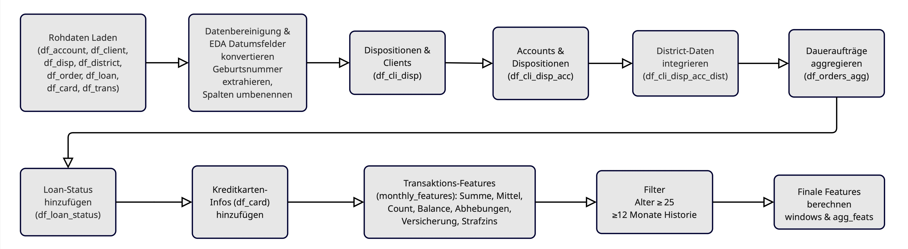
Anzahl Kreditkarten-Käufer und Nicht-Käufer mit kompletter 12 Monate-Rollup Information
counts = full_df['has_credit_card'].value_counts()
print(counts)
# Verhältnis Käufer/Nicht-Käufer
true_ratio = counts[True] / (counts[False] + counts[True])
false_ratio = counts[False] / (counts[False] + counts[True])
print(f"Anteil Käufer: {round(true_ratio * 100, 2)}%")
print(f"Anteil Nicht-Käufer: {round(false_ratio * 100, 2)}%")has_credit_card
False 2138
True 425
Name: count, dtype: int64
Anteil Käufer: 16.58%
Anteil Nicht-Käufer: 83.42%Es gibt 2143 Nicht-Käufer und 425 Käufer mit kompletter 12 Monate_Rollup Information.
Also ca. 5x mehr Nicht-Käufer. Diese Imbalance müssen wir berücksichtigen!
Verteilung der Kaufzeitpunkte der Kreditkarten-Käufer bzw. Vergleichszeitpunkte der Nicht-Käufer
# Monatswerte aus end_window extrahieren
full_df['end_month'] = full_df['end_window'].dt.month
# Käufer- vs. Nicht-Käufer-Gruppen
buyers = full_df[full_df['has_credit_card'] == 1]['end_month']
non_buyers = full_df[full_df['has_credit_card'] == 0]['end_month']
# Plot
plt.figure(figsize=(10, 6))
plt.hist(
[buyers, non_buyers],
bins=np.arange(1, 14) - 0.5, # 12 bins für Monate 1–12
label=['Käufer', 'Nicht-Käufer'],
color=plt.cm.viridis([0.2, 0.4]),
rwidth=0.85
)
plt.xticks(range(1, 13))
plt.xlabel('Monat des Endfensters')
plt.ylabel('Anzahl Personen')
plt.title('Verteilung der Beobachtungszeitpunkte (nur Monat)')
plt.legend()
plt.grid(axis='y', linestyle='--', alpha=0.7)
plt.tight_layout()
plt.show()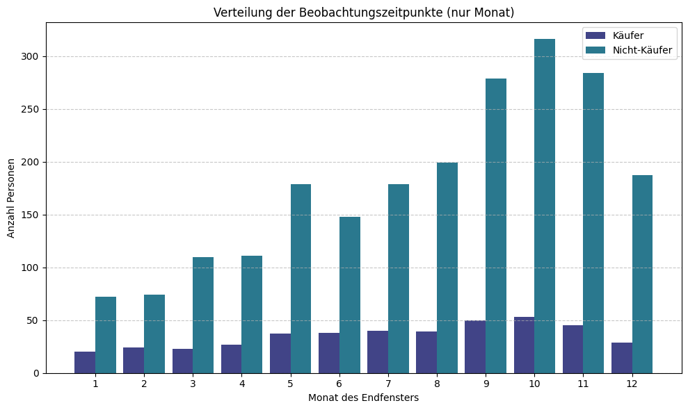
Für jede Person wurde ein 12-monatiges Beobachtungsfenster definiert, das als Basis für spätere Analysen dient. Dabei wurde zwischen Kreditkarten-Käufern und Nicht-Käufern differenziert:
Käufer:
Das Beobachtungsfenster endet einen Monat vor dem Ausgabedatum der Kreditkarte (issued) und umfasst die vorhergehenden 12 Monate. So ist gewährleistet, dass nur verhaltensbezogene Daten vor der Kartenausstellung betrachtet werden.
Nicht-Käufer:
Diese Personen besitzen keine Kreditkarte, erhalten aber ein Beobachtungsfenster zur Vergleichbarkeit. Für jede Person wurden alle möglichen 12-Monats-Zeiträume innerhalb ihrer Historie ermittelt, in denen sie lückenlos Daten hatten.
Aus diesen gültigen Zeitfenstern wurde zufällig eines gezogen, wobei die Auswahl gewichtet erfolgte.
Ziel war es, dass sich die Monatsverteilung der Endzeitpunkte (z. B. wie viele Fenster im Januar oder Juni enden) möglichst an die Verteilung der Käufer anlehnt.
Damit entsteht eine realistische, aber vergleichbare Referenzgruppe mit ähnlicher saisonaler Struktur.
Übersicht der selber konstruierten Predictive Features
Folgende Merkmalsgruppen wurden aus den Rohdaten abgeleitet und für das Modell verwendet:
Demografische Merkmale:
Kundenalter (alter_1999), Geschlecht (gender), Bezirk-ID und zugehörige demografische Kennzahlen (Einwohnerzahl, avg_salary, urban_ratio etc.). Diese festen Merkmale stammen aus CLIENT bzw. DISTRICT und beschreiben die Kundengrunddaten.
Kontomerkmale (aus ACCOUNT und DISP):
frequency: Kontoauszug-Frequenz (z.B. monatlich)date_created: Eröffnungsdatum des Kontos (kann in Alter des Kontos umgerechnet werden)- Daueraufträge:
perm_order_count,perm_order_sum(Anzahl und Summe der regelmäßigen Zahlungsaufträge) - Kredit:
loan_status(Status bestehender Kredite auf diesem Konto)
Transaktionsbasierte Aggregate (Rollup-Fenster):
Über den definierten 12-Monats-Zeitraum vor dem Kauf (bzw. Vergleichszeitpunkt) wurden folgende Kennzahlen berechnet:
amount_sum_total: Gesamtumsatz (Summe aller Transaktionsbeträge) im Fensteramount_mean_monthly: Mittlerer Monatsumsatz (amount_sum_total / 12)trans_count_total: Gesamtzahl der Transaktionen im Fenstertrans_count_mean: Mittlere Transaktionszahl pro Monat
Kontostandsstatistiken (aus den täglichen Saldenreihen):
balance_mean_avg: Durchschnitt der monatlichen Durchschnitts-Salden (Mittelwert über alle Monate)balance_mean_std: Standardabweichung der monatlichen Durchschnitts-Salden (Volatilität)balance_min_total: Kleinster Monatsend-Saldo im Fensterbalance_max_total: Größter Monatsend-Saldo im Fensterbalance_vola_avg: Durchschnitt der (Monats-Extreme-/Mittelsaldo) im Fenster
Spezielle Transaktionen (Zähler für bestimmte Buchungen):
cash_withdrawal_count_total,cash_withdrawal_amount_total: Anzahl und Summe aller Bargeldabhebungen im Fensterinsurance_count_total: Anzahl Versicherungszahlungenpenalty_interest_count_total: Anzahl Strafzins-Buchungen
Trend- und Änderungsmerkmale:
Sie erfassen Entwicklungen über die Zeit:
amount_trend_slope: Lineare Steigung der Monatsumsatz-Zeitreihe (positiv = wachsend)balance_trend_slope: Steigung des monatlichen Durchschnittssaldostrans_trend_slope: Steigung der monatlichen Transaktionszahlenamount_median_change: Differenz der Median-Umsätze der letzten 3 vs. ersten 3 Monate (zeigt Trendrichtungen)
Diese Features fassen zusammen, wie aktiv bzw. liquide ein Kunde war (Umsätze, Bargeldabhebungen), wie stabil sein Saldo war sowie seine Basisdaten (Alter, Wohnort etc.). Sie dienen als Prädiktoren für die Kreditkarten-Affinität.
Übersicht der gesamten zeitlichen Entwicklung von Vermögen und Umsatz für Konto Nummer 14 und Nummer 18 pro Monat
# Monat extrahieren und in datetime umwandeln
df_trans["month"] = df_trans["date"].dt.to_period("M").dt.to_timestamp()
# Filter auf Konto 14 und 18
df_filtered = df_trans[df_trans["account_id"].isin([14, 18])]
# Gruppieren und Aggregieren
monthly = df_filtered.groupby(["month", "account_id"]).agg(
balance=("balance", "mean"),
amount=("amount", lambda x: x.abs().sum())
).reset_index()
# Farben definieren
colors = plt.cm.viridis([0.3, 0.6]).tolist()
# Plot für Vermögen
plt.figure(figsize=(10, 5))
sns.lineplot(data=monthly, x="month", y="balance", hue="account_id", palette=colors)
plt.title("Durchschnittliches Vermögen pro Monat")
plt.ylabel("Balance")
plt.xticks(rotation=45)
plt.grid()
plt.tight_layout()
plt.show()
# Plot für Umsatz
plt.figure(figsize=(10, 5))
sns.lineplot(data=monthly, x="month", y="amount", hue="account_id", palette=colors)
plt.title("Umsatz (Summe der absoluten Beträge) pro Monat")
plt.ylabel("Umsatz")
plt.xticks(rotation=45)
plt.grid()
plt.tight_layout()
plt.show()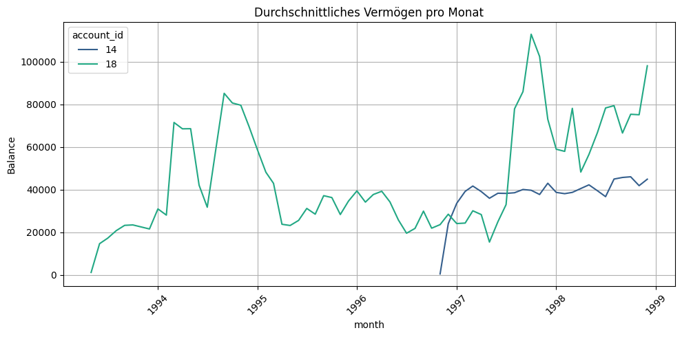
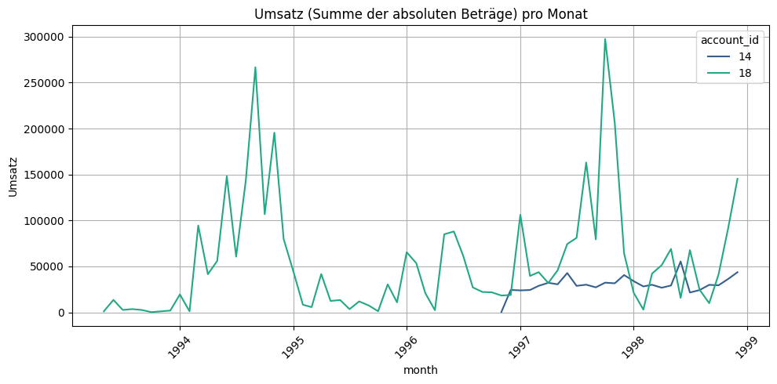
Konto 14 wirkt wie ein typisches Privatkonto mit stabiler Finanzlage.
Konto 18 ist deutlich aktiver, volatiler und weist Merkmale größerer finanzieller Operationen auf – evtl. ein Geschäftskonto oder spekulatives Verhalten.
Feature Selection
Mögliche Data Leakage Features
Definition Data Leakage:
Wenn Informationen in den Trainingsdaten enthalten sind, die in der Realität zum Zeitpunkt der Vorhersage nicht bekannt wären oder direkt aus der Zielvariable ableitbar sind.
Ein Feature ist dann problematisch, wenn es eine versteckte Abhängigkeit zum Ziel aufweist. Ein Merkmal „leakt“, wenn es eng mit dem Ziel verknüpft ist, auch ohne direkten Zugriff auf das Label. Beispielsweise kann das Alter eines Kredits oder dessen Status nach Kauf mit der Kreditkartenausgabe korrelieren.
Zudem wird empfohlen, sämtliche Preprocessing- und Selektionsschritte nur auf Trainingsdaten anzuwenden, um Train-Test-Contamination zu verhindern.
Einige Spalten im full_df enthalten direkt zielbezogene Informationen. Insbesondere sind dies:
- issued (Karten-Ausgabedatum): Dies ist das tatsächliche Kaufdatum der Kreditkarte. Es ist eine Zukunftsinformation (wird erst nach Abschluss des Kaufs bekannt). Die Einbeziehung würde dem Modell quasi die Antwort geben.
- card_type / card_id: Diese Merkmale sind nur für Kreditkartenbesitzer belegt (z.B. „Classic“ oder „Gold“). Ein Modell könnte daraus direkt ableiten, ob eine Karte existiert. Sie verbergen direkt das Label in anderen Worten.
- Features aus dem Kreditkarten-Datensatz allgemein: Jede Information aus der Kreditkarte-Tabelle (außer dem Label
has_credit_card) enthält Post-Kauf-Daten. Diese dürfen nicht als Prädiktoren verwendet werden. - Berechnung aus zukünftigen Transaktionen: Würde man z.B. Kundenaktivität nach dem Kaufdatum mit einbeziehen, gäbe man dem Modell wieder Zukunftsdaten. Unsere Aggregationen wurden bewusst so gewählt, dass nur Daten vor dem Endzeitpunkt (
end_window) genutzt werden.
Informationen zum ‘loan’ als Data Leak
Um Data Leakage vollständig auszuschließen, müssen alle Loans, die nach der Kreditkartenvergabe bzw. nach dem End Window vergeben wurden, aus der Modellbetrachtung ausgeschlossen werden. Wir setzen dazu den loan_status auf None.
# Anzahl loan_status 'None' before
before = full_df["loan_status"].value_counts()['None']
# Loan Status None für alle Einträge, die nach dem Endfenster liegen
full_df.loc[full_df["loan_date"] > full_df["end_window"], "loan_status"] = 'None'
# Kategorie sicherstellen
full_df["loan_status"] = full_df["loan_status"].astype("category")
# Anzahl loan_status 'None' after
after = full_df["loan_status"].value_counts()['None']
print(f"Anzahl loan_status 'None' vor: {before}, nach: {after}")Anzahl loan_status 'None' vor: 2371, nach: 2432Informationen zu den Districten als Data Leak
Wenn man aus der district-Tabelle Merkmale nutzt, die nicht zum Vorhersagezeitpunkt verfügbar waren (z. B. spätere Arbeitslosenzahlen), kann das zu Leakage führen. Wir dürfen nur Features übernehmen, die zeitlich vor oder während des Trainingsfensters verfügbar sind.
Ein möglicher Ansatz wäre, anstelle der Merkmale einfach nur die district_id als kategorische Variable (one-hot-encoded) zu nutzen. Schließlich kodiert sie implizit dieselben Informationen wie die district-Tabelle. Allerdings leidet darunter die Erklärbarkeit des Modells – man weiß nicht mehr, was genau das Modell an Bezirk 23 mag, nur dass es ihn bevorzugt (z. B. Einkommen, Urbanität, Einwohnerzahl).
Um die Erklärbarkeit zu gewährleisten, Data Leakage auszuschließen und das Modell zu vereinfachen, wählen wir nur einige Merkmale aus:
Bereinigen unnötiger Informationen
# Anzahl eindeutiger Kombinationen aus disp_id, client_id und account_id
unique_combos = full_df[['disp_id', 'client_id', 'account_id']].drop_duplicates()
# Vergleich: Anzahl disp_id == Anzahl eindeutiger Kombinationen?
is_unique_mapping = len(unique_combos) == full_df['disp_id'].nunique()
print(f"Eindeutige Zuordnung von disp_id zu client_id/account_id: {is_unique_mapping}")Eindeutige Zuordnung von disp_id zu client_id/account_id: True# Gruppieren nach client_id und Anzahl unterschiedlicher Konten zählen
konto_pro_kunde = full_df.groupby('client_id')['account_id'].nunique()
# Kunden mit mehr als einem Konto
mehrfach_kunden = konto_pro_kunde[konto_pro_kunde > 1]
print(f"Anzahl Kunden mit mehr als einem Konto: {len(mehrfach_kunden)}")Anzahl Kunden mit mehr als einem Konto: 0Es ist keine weitere Aggretation nötig, um pro Zeile einen Kunden zu haben.
full_df.role.value_counts()role
OWNER 2563
DISPONENT 0
Name: count, dtype: int64‘role’ enthält keine Information für das Modell.
# Gefahr von Data Leakage, Redundanz oder haben keinen Informationswert
drop_cols = [
# IDs & technische Felder
'role', 'client_id', 'disp_id', 'account_id', 'card_id',
'district_name', 'district_id',
# Zeitlich riskante oder leaky Felder
'birth_date', 'loan_date', 'issued',
'unemployment_1995', 'unemployment_1996',
'crimes_1995', 'crimes_1996',
# Redundante oder stark korrelierte Felder
'municipalities_under_500', 'municipalities_500_1999',
'municipalities_2000_9999', 'municipalities_over_10000',
'no_cities', 'entrepreneurs_per_1000', 'card_type',
# Nichtmodellrelevante Zeitmerkmale
'start_window', 'date_created'
]
# Entfernen irrelevanter Spalten
reduced_df = full_df.drop(columns=drop_cols)reduced_df.info()<class 'pandas.core.frame.DataFrame'>
RangeIndex: 2563 entries, 0 to 2562
Data columns (total 31 columns):
# Column Non-Null Count Dtype
--- ------ -------------- -----
0 gender 2563 non-null category
1 alter_1999 2563 non-null Int64
2 frequency 2563 non-null category
3 region 2563 non-null category
4 no_inhabitants 2563 non-null int64
5 urban_ratio 2563 non-null float64
6 avg_salary 2563 non-null int64
7 perm_order_count 2563 non-null int64
8 perm_order_sum 2563 non-null float64
9 loan_status 2563 non-null category
10 has_credit_card 2563 non-null bool
11 months_history 2563 non-null float64
12 end_window 2563 non-null datetime64[ns]
13 end_month 2563 non-null int32
14 amount_sum_total 2563 non-null float64
15 amount_mean_monthly 2563 non-null float64
16 trans_count_total 2563 non-null float64
17 trans_count_mean 2563 non-null float64
18 balance_mean_avg 2563 non-null float64
19 balance_mean_std 2563 non-null float64
20 balance_vola_avg 2563 non-null float64
21 balance_min_total 2563 non-null float64
22 balance_max_total 2563 non-null float64
23 cash_withdrawal_count_total 2563 non-null float64
24 cash_withdrawal_amount_total 2563 non-null float64
25 insurance_count_total 2563 non-null float64
26 penalty_interest_count_total 2563 non-null float64
27 amount_trend_slope 2563 non-null float64
28 balance_trend_slope 2563 non-null float64
29 trans_trend_slope 2563 non-null float64
30 amount_median_change 2563 non-null float64
dtypes: Int64(1), bool(1), category(4), datetime64[ns](1), float64(20), int32(1), int64(3)
memory usage: 526.6 KB# Numerische Spalten (int, float, aber kein bool)
num_cols = reduced_df.select_dtypes(include=['int64', 'float64', 'Int64']).columns.tolist()
# Kategorische Spalten (category, object, bool)
cat_cols = reduced_df.select_dtypes(include=['category', 'object', 'bool']).columns.tolist()
cat_cols.remove('has_credit_card')
# Ergebnis anzeigen
print("Numerische Spalten:", num_cols)
print("Kategorische Spalten:", cat_cols)Numerische Spalten: ['alter_1999', 'no_inhabitants', 'urban_ratio', 'avg_salary', 'perm_order_count', 'perm_order_sum', 'months_history', 'amount_sum_total', 'amount_mean_monthly', 'trans_count_total', 'trans_count_mean', 'balance_mean_avg', 'balance_mean_std', 'balance_vola_avg', 'balance_min_total', 'balance_max_total', 'cash_withdrawal_count_total', 'cash_withdrawal_amount_total', 'insurance_count_total', 'penalty_interest_count_total', 'amount_trend_slope', 'balance_trend_slope', 'trans_trend_slope', 'amount_median_change']
Kategorische Spalten: ['gender', 'frequency', 'region', 'loan_status']# check for missing values
missing = reduced_df.isnull().sum()
print(f'{len(missing[missing > 0])} columns with missing values')0 columns with missing values# check for duplicates
duplicates = reduced_df.duplicated().sum()
print(f'{duplicates} duplicates found')0 duplicates foundEinige Spalten wurden aus dem finalen full_df entfernt, weil sie:
- Data Leakage verursachen könnten.
- redundant sind.
- keinen Informationswert für das Modell tragen.
Explorative Datenanalyse
Um den Datensatz etwas besser zu verstehen suchen wir Zusammenhänge der verschiedenen Features zur Zielvariabel, also ob ein Kunde eine Kreditkarte besitzt oder nicht.
# Karte: Anteil Kreditkartenbesitz pro Region (Kraj)
import geopandas as gpd
# 1. GeoJSON laden (Pfad ggf. anpassen)
gdf_regions = gpd.read_file("geojson/kraje.json")
# 2. Mapping von deinen Regionen zu offiziellen Kraje
region_mapping = {
"Prague": "Praha",
"central Bohemia": "Středočeský",
"west Bohemia": "Plzeňský",
"north Bohemia": "Ústecký",
"east Bohemia": "Pardubický",
"south Bohemia": "Jihočeský",
"south Moravia": "Jihomoravský",
"north Moravia": "Moravskoslezský"
}
# ⚠️ Umwandeln in string und ersetzen, um FutureWarning zu vermeiden
reduced_df["region"] = reduced_df["region"].astype(str).replace(region_mapping)
# 3. Mapping von NUTS3-ID auf Regionennamen im GeoDataFrame
nuts_to_region = {
"CZ0100000000": "Praha",
"CZ0200000000": "Středočeský",
"CZ0310000000": "Jihočeský",
"CZ0320000000": "Plzeňský",
"CZ0410000000": "Karlovarský",
"CZ0420000000": "Ústecký",
"CZ0510000000": "Liberecký",
"CZ0520000000": "Královéhradecký",
"CZ0530000000": "Pardubický",
"CZ0630000000": "Vysočina",
"CZ0640000000": "Jihomoravský",
"CZ0710000000": "Olomoucký",
"CZ0720000000": "Zlínský",
"CZ0800000000": "Moravskoslezský"
}
gdf_regions["region"] = gdf_regions["id"].map(nuts_to_region)
# 4. Aggregation der Kreditkartenanteile
region_stats = reduced_df.groupby("region", observed=False).agg(
total_customers=("has_credit_card", "count"),
credit_card_share=("has_credit_card", "mean")
).reset_index()
# 5. Merge mit GeoDataFrame
gdf_merged = gdf_regions.merge(region_stats, on="region", how="left")
# 6. Plot erstellen
fig, ax = plt.subplots(1, 1, figsize=(10, 8))
# Choroplethenkarte
gdf_merged.plot(column='credit_card_share', cmap='viridis', legend=True,
legend_kwds={'label': "Anteil Kreditkartenbesitz", 'shrink': 0.6},
missing_kwds={'color': 'lightgrey'},
edgecolor='black', linewidth=0.5, ax=ax)
# Regionstitel setzen
plt.title("Anteil Kreditkartenbesitzer pro Region (Tschechien)", fontsize=14)
# Achsen ausblenden
plt.axis('off')
# Zentroiden berechnen (für Label-Position)
gdf_labeled = gdf_merged.dropna(subset=["credit_card_share"]).copy()
# Projektionssystem transformieren (z. B. EPSG:5514 für CZ)
gdf_labeled_proj = gdf_labeled.to_crs(epsg=5514)
# Zentroiden im metrischen System berechnen
gdf_labeled["coords"] = gdf_labeled_proj.centroid.to_crs(gdf_labeled.crs)
# Beschriftungen hinzufügen
for _, row in gdf_labeled.iterrows():
plt.annotate(text=row["region"],
xy=(row["coords"].x, row["coords"].y),
horizontalalignment='center',
fontsize=9,
color='black')
plt.tight_layout()
plt.show()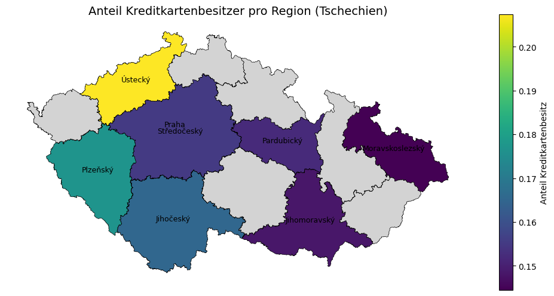
Auf der Karte sehen wir mit hellen Farben (gelb/grün) → hoher Anteil an Kreditkartenbesitzern und mit dunkle Farben (blau/lila) → niedriger Anteil.
Graue Regionen → keine Daten vorhanden.
Der hohe Anteil an Kreditkartenbesitzern in Ústecký (north Bohemia) könnte mehrere Ursachen haben. Möglicherweise ist die Region stärker urbanisiert oder beherbergt viele wirtschaftlich aktive Kunden mit mittlerem Einkommen, was Kreditwürdigkeit und Kartennutzung begünstigt. Auch gezielte Bankstrategien oder historische Faktoren – z. B. durch industrielle Prägung – könnten dazu geführt haben, dass dort mehr Konten und Kartenprodukte vertrieben wurden. Nicht zuletzt ist ein verzerrter Sample-Effekt möglich, falls in der Stichprobe überproportional viele kartennutzende Kundentypen aus dieser Region enthalten sind.
# Nur Kreditkartenkäufe
df_käufe = reduced_df[reduced_df['has_credit_card'] == True]
monthly_counts = df_käufe['end_month'].value_counts().sort_index()
# Farben vorbereiten (viridis)
colors = sns.color_palette("viridis", len(monthly_counts))
# Monatsnamen
month_labels = ['Jan', 'Feb', 'Mär', 'Apr', 'Mai', 'Jun',
'Jul', 'Aug', 'Sep', 'Okt', 'Nov', 'Dez']
# Plot mit Matplotlib direkt
plt.figure(figsize=(10, 5))
plt.bar(x=monthly_counts.index, height=monthly_counts.values,
color=colors, edgecolor='black')
plt.xticks(ticks=range(1, 13), labels=month_labels)
plt.title('Kreditkartenkäufe pro Monat (über die Jahre aggregiert)', fontsize=13)
plt.xlabel('Monat')
plt.ylabel('Anzahl Käufe')
plt.tight_layout()
plt.show()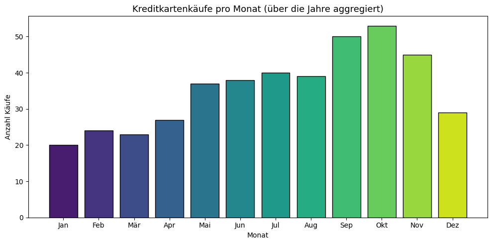
Die Grafik zeigt die monatliche Verteilung von Kreditkartenkäufen, aggregiert über alle Jahre. Auffällig ist ein klarer saisonaler Trend: Die Zahl der Käufe steigt kontinuierlich von Januar bis Oktober an, mit einem Höhepunkt im Oktober. Danach sinkt die Aktivität wieder deutlich, besonders im Dezember.
Dieses Muster deutet darauf hin, dass Kreditkarten verstärkt in der zweiten Jahreshälfte vergeben oder genutzt werden, möglicherweise im Zusammenhang mit Herbstaktionen, Urlaubsfinanzierungen oder gezieltem Marketing vor dem Jahresende. Der Rückgang im Dezember könnte durch Feiertage, Budgetstopps oder eingeschränkte Bankprozesse bedingt sein.
cat_vars = ['gender', 'frequency', 'loan_status']
colors = ['Blues', 'Greens', 'Purples']
fig, axes = plt.subplots(1, 3, figsize=(12, 4), sharey=True)
for i, var in enumerate(cat_vars):
ax = axes[i]
# Anteil Kreditkartenbesitz je Kategorieausprägung
prop_df = (
reduced_df.groupby(var, observed=False)['has_credit_card']
.value_counts(normalize=True)
.rename('proportion')
.reset_index()
)
# Balkenplot
sns.barplot(data=prop_df, x=var, y='proportion', hue='has_credit_card',
palette=sns.color_palette(colors[i], 2), edgecolor="black",
linewidth=0.5, ax=ax)
ax.set_title(f"{var}", fontsize=12)
ax.set_ylabel("Anteil" if i == 0 else "")
ax.set_xlabel("")
ax.set_ylim(0, 1)
ax.tick_params(axis='x', rotation=45)
# Gesamttitel & Layout
plt.suptitle("Anteil Kreditkartenbesitz nach Kategorie")
plt.tight_layout()
plt.legend(title="has_credit_card")
plt.show()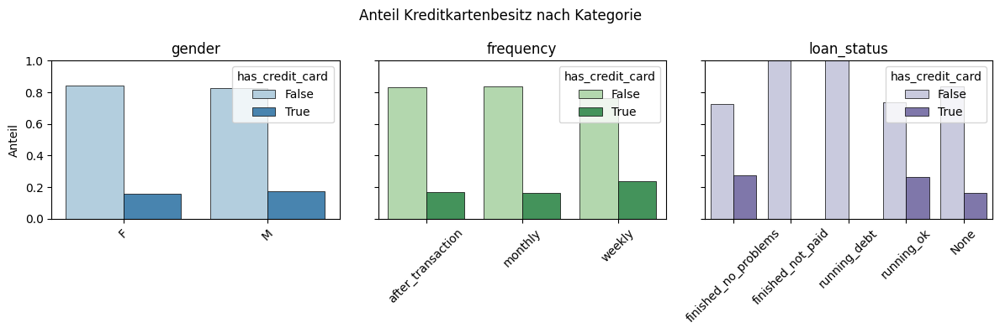
Die Grafik zeigt den Anteil von Kreditkartenbesitzern innerhalb der Ausprägungen dreier kategorialer Merkmale: Geschlecht (gender), Transaktionsfrequenz (frequency) und Kreditstatus (loan_status).
Beim Geschlecht fällt auf, dass Frauen und Männer nahezu identische Kreditkartenquoten aufweisen – das Geschlecht hat also keinen wesentlichen Einfluss auf den Besitz einer Kreditkarte.
Bei der Transaktionsfrequenz zeigt sich ein interessanter Effekt: Kunden mit wöchentlicher Transaktionsfrequenz besitzen deutlich häufiger eine Kreditkarte als jene mit monatlicher oder transaktionsbasierter Abwicklung. Das könnte auf eine aktivere Nutzung oder automatisierte Zahlungen hinweisen.
Beim Kreditstatus besitzen Kunden mit laufendem oder abgeschlossenem Kredit („running_ok“ oder „finished_no_problems“) deutlich häufiger Kreditkarten als jene mit Zahlungsproblemen („finished_not_paid“). Dies spricht dafür, dass ein stabiler Kreditstatus positiv mit der Kreditkartenvergabe zusammenhängt – vermutlich über Bonitätsbewertungen.
Insgesamt zeigt der Plot, dass Nutzungsverhalten und Zahlungszuverlässigkeit stärkere Prädiktoren für den Kreditkartenbesitz sind als demografische Merkmale wie das Geschlecht.
# Korrelationen numerischer Features mit has_credit_card (falls binär als int)
from scipy.stats import pointbiserialr
# 1. Korrelationen berechnen
corrs = []
for col in num_cols:
try:
corr, _ = pointbiserialr(reduced_df['has_credit_card'].astype(int), reduced_df[col])
corrs.append((col, corr))
except Exception as e:
print(f"Fehler bei Spalte {col}: {e}")
# 2. Sortieren nach absoluter Stärke der Korrelation
corrs = sorted(corrs, key=lambda x: abs(x[1]), reverse=True)
corr_df = pd.DataFrame(corrs, columns=['Feature', 'Point-Biserial Corr'])
# 3. Plot
# Vorbereitung
corr_df_sorted = corr_df.sort_values('Point-Biserial Corr')
colors = sns.color_palette("viridis", len(corr_df_sorted))
# Plot manuell
plt.figure(figsize=(8, 6))
bars = plt.barh(y=corr_df_sorted['Feature'], width=corr_df_sorted['Point-Biserial Corr'], color=colors)
plt.title('Korrelation numerischer Merkmale mit Kreditkartenbesitz (has_credit_card)', fontsize=13)
plt.xlabel('Point-Biserial Korrelation')
plt.ylabel('Feature')
plt.tight_layout()
plt.show()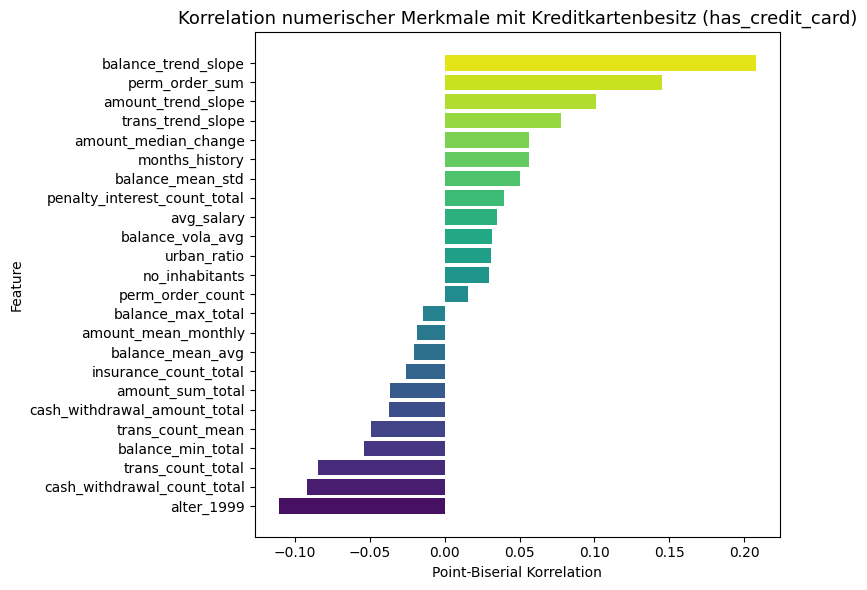
Die Point-Biserial Korrelation misst den linearen Zusammenhang zwischen einer binären und einer numerischen Variable.
Konkret: Wie stark unterscheidet sich der Mittelwert der numerischen Variable zwischen den beiden Gruppen der binären Variable?
Sie zeigt, wie gut ein numerisches Feature zwischen zwei Gruppen unterscheiden kann.
Der Barplot zeigt die Stärke des linearen Zusammenhangs zwischen einzelnen numerischen Merkmalen und der Zielvariable has_credit_card. Die Merkmale sind nach der absoluten Korrelation sortiert. Einige Features weisen dabei moderate Korrelationen zur Zielvariable auf – insbesondere perm_order_sum, penalty_interest_count_total, balance_trend_slope und amount_trend_slope. Diese Merkmale scheinen also einen relevanten Einfluss darauf zu haben, ob eine Person eine Kreditkarte besitzt oder nicht.
Ein positiver Korrelationswert – wie bei perm_order_sum – bedeutet, dass höhere Werte des Merkmals mit höherer Wahrscheinlichkeit auf Kreditkartenbesitz hinweisen. Negative Werte – wie bei cash_withdrawal_amount_total – deuten darauf hin, dass Personen ohne Kreditkarte tendenziell häufiger Bargeld abheben.
Insgesamt zeigt der Plot, dass es zwar keine einzelnen Features mit sehr starker Korrelation gibt, jedoch mehrere mit relevanten Mustern, die ein Modell zur Klassifikation nutzen kann. Das unterstreicht die Wichtigkeit einer Kombination vieler schwach bis moderat prädiktiver Merkmale.
from sklearn.preprocessing import StandardScaler
# Werte standardisieren
scaler = StandardScaler()
X_scaled = scaler.fit_transform(reduced_df[num_cols])
df_scaled = pd.DataFrame(X_scaled, columns=num_cols)
df_scaled["has_credit_card"] = reduced_df["has_credit_card"].values
# Gruppierte Mittelwerte der standardisierten Features
means = df_scaled.groupby("has_credit_card")[num_cols].mean().T
means.columns = ['No Card', 'Has Card']
# Plot
means.plot(kind='bar', figsize=(10, 6), color=plt.cm.viridis([0.1, 0.5]))
plt.axhline(0, color='grey', linestyle='--', linewidth=1)
plt.ylabel("Standardisierter Mittelwert (Z-Score)")
plt.title("Vergleich der standardisierten Mittelwerte nach Kreditkartenstatus")
plt.xticks(rotation=45, ha='right')
plt.tight_layout()
plt.show()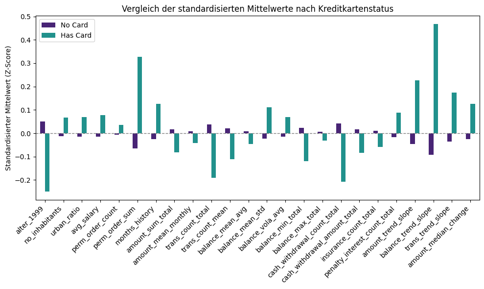
Interpretation von Z-Scores
- Werte > 0 → Merkmal liegt über dem Gesamtdurchschnitt
- Werte < 0 → Merkmal liegt unter dem Gesamtdurchschnitt
- Der Unterschied zwischen „Has Card“ und „No Card“ pro Feature zeigt, wie stark das Merkmal die Zielvariable trennt.
Der Plot zeigt die standardisierten Mittelwerte (Z-Scores) verschiedener numerischer Merkmale, getrennt nach Kreditkartenbesitz. Dabei lassen sich klare Unterschiede zwischen den Gruppen erkennen. Kunden mit Kreditkarte weisen im Durchschnitt höhere Werte bei Merkmalen wie perm_order_sum, penalty_interest_count_total, amount_trend_slope und balance_trend_slope auf. Diese Merkmale deuten auf ein aktiveres, dynamischeres Finanzverhalten hin, z. B. steigende Kontostände, regelmäßige Zahlungen oder auch Mahngebühren.
Gleichzeitig liegen Kreditkartenbesitzer bei Merkmalen wie cash_withdrawal_amount_total und balance_mean_avg unter dem Durchschnitt, was darauf hindeuten könnte, dass sie weniger Bargeld beziehen und ihre durchschnittlichen Kontostände tendenziell geringer sind. Besonders auffällig ist, dass der Wert für alter_1999 bei Kreditkartenbesitzern deutlich niedriger ist – das bedeutet, dass diese im Jahr 1999 im Schnitt jünger waren als Nichtbesitzer, was auf eine gezielte Ansprache jüngerer, wirtschaftlich aktiver Kunden schließen lässt.
Insgesamt zeigt die Grafik, dass sich Kreditkartenbesitzer nicht nur im Alter, sondern vor allem im finanziellen Verhalten und in der Kontodynamik signifikant von Nichtbesitzern unterscheiden.
# PCA zur Visualisierung
from sklearn.decomposition import PCA
from sklearn.preprocessing import StandardScaler
# 1. Ziel und numerische Features
features = reduced_df[num_cols]
y = reduced_df['has_credit_card']
# 2. Standardisierung
X_scaled = StandardScaler().fit_transform(features)
# 3. PCA
pca = PCA(n_components=2)
X_pca = pca.fit_transform(X_scaled)
# 4. DataFrame für Plot
pca_df = pd.DataFrame(X_pca, columns=['PC1', 'PC2'])
pca_df['has_credit_card'] = y.values
# 5. Plot
plt.figure(figsize=(8, 6))
sns.scatterplot(data=pca_df, x='PC1', y='PC2', hue='has_credit_card',
palette='viridis', alpha=0.8)
plt.title('PCA-Visualisierung von reduced_df (2D Projektion)', fontsize=14)
plt.xlabel(f"PC1 ({pca.explained_variance_ratio_[0]:.1%} Varianz)")
plt.ylabel(f"PC2 ({pca.explained_variance_ratio_[1]:.1%} Varianz)")
plt.legend(title='Has Credit Card', loc='best')
plt.tight_layout()
plt.show()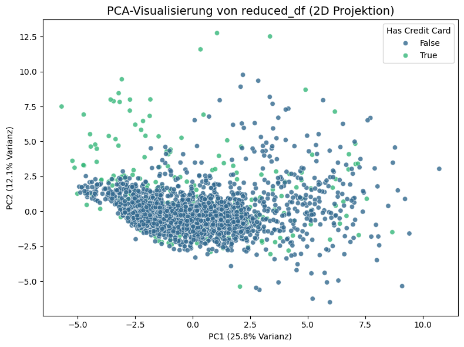
Der PCA-Plot zeigt eine zweidimensionale Projektion aller numerischen Merkmale, wobei jeder Punkt einem Kunden entspricht. Die Farben markieren, ob ein Kunde eine Kreditkarte besitzt oder nicht.
Obwohl die beiden Gruppen (mit und ohne Kreditkarte) überlappen, lassen sich leichte Unterschiede in der Verteilung erkennen: Kreditkartenbesitzer (grün) tendieren dazu, sich etwas stärker in bestimmten Randbereichen zu sammeln – insbesondere in Regionen mit höherem PC1-Wert. Das deutet darauf hin, dass sich Kreditkartenbesitzer in bestimmten Merkmalen systematisch von Nichtbesitzern unterscheiden. Die erste Hauptkomponente (PC1) erklärt rund 26 % der Gesamtvarianz und scheint also bereits relevante Trennungspotenziale zu enthalten, während PC2 etwa 12 % beiträgt.
Insgesamt zeigt die Visualisierung, dass die Zielvariable nicht klar linear trennbar ist, aber dass es durchaus strukturelle Unterschiede gibt, die ein Klassifikationsmodell nutzen kann. Ein nichtlinearer Ansatz wie ein Entscheidungsbaum oder ein Ensemblemodell könnte von diesen feinen Verteilungen profitieren.
Modellentwicklung
Visualisierung und Beschreibung der Strategie zur Aufteilung der Daten
Bei der Modellierung berücksichtigen wir explizit die zeitliche Struktur der Daten, um ein realistisches und robustes Bewertungsszenario zu schaffen. Die Zielvariable has_credit_card soll auf Basis historischer Kundeninformationen vorhergesagt werden – daher ist es entscheidend, dass keine zukünftigen Informationen unabsichtlich in das Modelltraining einfließen.
Warum eine zeitbasierte Aufteilung?
Würden wir Trainings- und Validierungsdaten zufällig aufteilen, könnten Informationen aus der “Zukunft” (aus Sicht des Trainingszeitpunkts) in das Modell gelangen. Dies würde zu Data Leakage führen – das Modell hätte Zugriff auf Daten, die in der Praxis zum Vorhersagezeitpunkt noch gar nicht bekannt sind. Die Folge wäre eine unrealistisch hohe Modellgüte im Validierungsprozess, die sich im realen Einsatz nicht reproduzieren lässt.
Um dies zu vermeiden, nutzen wir eine zeitlich geordnete Aufteilung der Daten. Die chronologische Trennung stellt sicher, dass das Modell nur auf Vergangenes trainiert wird und auf Zukünftiges validiert bzw. getestet wird.
Die Daten werden in drei zeitlich getrennte Sets aufgeteilt:
- Trainingsdaten (
train_set): enthalten nur Daten aus einem früheren Zeitraum (z. B. bis Ende 1997). Diese werden zur Modellanpassung verwendet. - Validierungsdaten (
val_set): umfassen einen darauffolgenden Zeitraum (z. B. das Jahr 1998) und dienen der Hyperparameter-Optimierung mittels zeitbasierter Cross-Validation. - Testdaten (
test_set): stammen aus dem letzten Zeitraum (z. B. 1999) und bleiben während des gesamten Modelltrainings unberührt. Sie dienen ausschließlich der finalen Evaluation des besten Modells unter realitätsnahen Bedingungen.
Zeitbasierte Cross-Validation mit TimeSeriesSplit
Für das Hyperparameter-Tuning innerhalb des Trainings- und Validierungszeitraums verwenden wir TimeSeriesSplit aus scikit-learn. Dabei wird in mehreren Schritten jeweils auf einem wachsenden Zeitfenster trainiert und auf dem nächsten Zeitabschnitt validiert. Dies respektiert die zeitliche Ordnung der Daten und vermeidet auch innerhalb der Grid Search jegliches Data Leakage.
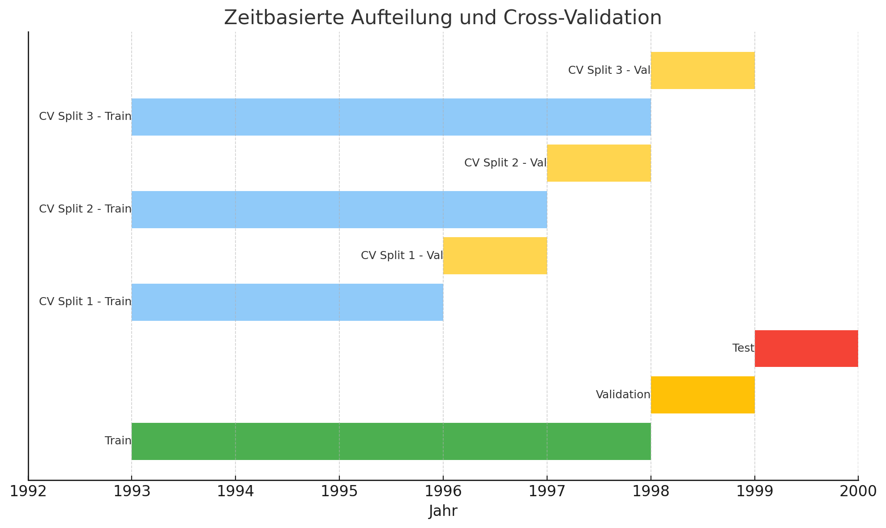
# Nach Datum sortieren
reduced_df = reduced_df.sort_values("end_window").reset_index(drop=True)
# Aufteilen: erste 80% → Training, letzte 20% → Test
split_index = int(len(reduced_df) * 0.8)
train_set = reduced_df.iloc[:split_index].copy()
test_set = reduced_df.iloc[split_index:].copy()
# Ausgabe zur Kontrolle
print("Trainingsdaten: ", train_set["end_window"].min().date(), "–", train_set["end_window"].max().date(), f"({len(train_set)} Zeilen)")
print("Testdaten: ", test_set["end_window"].min().date(), "–", test_set["end_window"].max().date(), f"({len(test_set)} Zeilen)")Trainingsdaten: 1993-12-31 – 1998-09-30 (2050 Zeilen)
Testdaten: 1998-09-30 – 1998-12-31 (513 Zeilen)Das Test-Set repräsentiert echte, zukünftige Daten, die das Modell in der Praxis vorhersagen soll.
Verwendet man das Test-Set bereits für die Auswahl oder das Feintuning von Modellen – etwa beim Vergleich verschiedener Modellvarianten, Hyperparameter oder Feature-Kombinationen – besteht die Gefahr, dass das finale Modell (bewusst oder unbewusst) auf die speziellen Eigenschaften des Test-Sets abgestimmt wird. Dies führt zu einer verzerrten Schätzung der Modellgüte (sogenanntes „Data Leakage“ oder „Test Set Leakage“). Der auf diese Weise erzielte Testwert ist dann zu optimistisch und nicht mehr aussagekräftig für die tatsächliche Modellqualität auf völlig neuen, ungesehenen Daten.
Stattdessen werden alle Schritte der Modellentwicklung (Training, Cross-Validation, Modellauswahl, Feature Engineering etc.) ausschließlich auf dem Trainings-Set (unter Einsatz von Cross-Validation) durchgeführt.
Das Test-Set kommt erst ganz am Ende ins Spiel – wenn das finale, vollständig gewählte Modell feststeht. Nur so erhält man eine wirklich objektive und ehrliche Einschätzung der Modellleistung.
Baseline Modell mit logistischer Regression
Mit den Informationen alter1999, gender, region, balance_mean_avg und amount_sum_total erstellen wir ein Baseline Modell mit Logistischer Regression.
Die logistische Regression zählt zu den am häufigsten eingesetzten Klassifikationsmethoden im Machine Learning und ist auch in der scikit-learn-Bibliothek als LogisticRegression einfach nutzbar.
Stärken:
- Einfachheit und Interpretierbarkeit: Das Modell ist leicht verständlich, liefert direkt interpretierbare Koeffizienten (Gewichte) und ist damit auch für Analysen, bei denen Transparenz wichtig ist, besonders geeignet.
- Geringe Anforderungen an die Datenmenge: Die logistische Regression benötigt vergleichsweise wenig Trainingsdaten, um robuste Ergebnisse zu liefern.
- Schnell und ressourcenschonend: Sie ist sehr effizient in Training und Vorhersage und kann daher auch für große Datensätze eingesetzt werden.
- Robust gegenüber Overfitting (bei angemessener Regularisierung): Durch die Standard-Regularisierung (L2) wird das Modell weniger anfällig für Überanpassung.
Schwächen:
- Nur lineare Trennungen: Die logistische Regression kann ausschließlich lineare Zusammenhänge zwischen den Features und der Zielvariable modellieren. Nicht-lineare oder komplexe Beziehungen werden nicht erfasst, was bei realen, heterogenen Daten häufig zu einer zu geringen Modellgüte führt.
- Empfindlich gegenüber Ausreißern: Extreme Werte können die Parameter und damit die Entscheidungsgrenze stark verschieben.
- Wenig robust bei starker Multikollinearität: Starke Korrelationen zwischen den Prädiktoren (Features) können die Modellstabilität und Interpretierbarkeit negativ beeinflussen.
Empfindlichkeit gegenüber Normalisierung:
Logistische Regression ist grundsätzlich empfindlich gegenüber unterschiedlich skalierten numerischen Features. Besonders, wenn Regularisierung (C-Parameter) eingesetzt wird, sollten numerische Variablen stets standardisiert werden (z. B. mit StandardScaler), um eine faire und stabile Gewichtung zu ermöglichen.
Default Settings in scikit-learn:
- Der Standard-Solver ist
"lbfgs", der für viele Datensätze gut funktioniert.
- Die Standard-Regularisierung ist L2 (
penalty='l2'), RegularisierungsstärkeC=1.0.
- Die Schwelle für Klassenzuordnung liegt standardmäßig bei 0.5.
class_weight=None, d.h. keine Berücksichtigung unbalancierter Klassen ohne explizite Angabe.
Fazit:
Die logistische Regression eignet sich hervorragend als interpretiertes Baseline-Modell. Bei komplexeren, nichtlinear trennbaren Problemen oder bei starker Klassenunbalance sollte sie jedoch durch leistungsfähigere Modelle ergänzt werden – oder gezielt angepasst (Regularisierung, Balancing, Feature Engineering).
from sklearn.pipeline import Pipeline
from sklearn.compose import ColumnTransformer
from sklearn.preprocessing import StandardScaler, OneHotEncoder
from sklearn.linear_model import LogisticRegression
from sklearn.model_selection import TimeSeriesSplit, GridSearchCV
# --- Feature-Auswahl ---
features = ['alter_1999', 'gender', 'region', 'balance_mean_avg', 'amount_sum_total']
target = 'has_credit_card'
X_train = train_set[features]
y_train = train_set[target]
# --- Preprocessing: Numerisch und Kategorisch trennen ---
numeric_features = ['alter_1999', 'balance_mean_avg', 'amount_sum_total']
categorical_features = ['gender', 'region']
preprocessor = ColumnTransformer([
('num', StandardScaler(), numeric_features),
('cat', OneHotEncoder(handle_unknown='ignore'), categorical_features)
])
# --- Pipeline ---
pipe = Pipeline([
('preprocess', preprocessor),
('clf', LogisticRegression(max_iter=1000, random_state=rng))
])
# --- GridSearchCV mit TimeSeriesSplit ---
tscv = TimeSeriesSplit(n_splits=5)
param_grid = {
'clf__C': [0.01, 0.05, 0.1]
}
baseline = GridSearchCV(
pipe,
param_grid=param_grid,
cv=tscv,
scoring='roc_auc',
n_jobs=-1
)
baseline.fit(X_train, y_train)
print("Best ROC AUC (CV):", baseline.best_score_)
print("Best Parameters:", baseline.best_params_)Best ROC AUC (CV): 0.570664022458686
Best Parameters: {'clf__C': 0.05}from sklearn.metrics import confusion_matrix, ConfusionMatrixDisplay, roc_curve, auc
def plot_confusion_and_roc(model, X, y, title_suffix="Set"):
"""
Plottet Confusion Matrix und ROC Curve für gegebene Daten & Modell.
Args:
model: trainiertes Modell (muss predict & predict_proba können)
X: Features (DataFrame oder Array)
y: True Labels (Series oder Array)
title_suffix: 'Training', 'Test', etc.
"""
# Vorhersagen & Wahrscheinlichkeiten
y_pred = model.predict(X)
y_proba = model.predict_proba(X)[:, 1]
# Confusion Matrix
cm = confusion_matrix(y, y_pred)
disp = ConfusionMatrixDisplay(confusion_matrix=cm)
disp.plot(cmap='Blues')
plt.title(f'Confusion Matrix ({title_suffix})')
plt.show()
# ROC Curve
fpr, tpr, _ = roc_curve(y, y_proba)
roc_auc = auc(fpr, tpr)
plt.figure(figsize=(6, 4))
plt.plot(fpr, tpr, label=f"ROC Curve (AUC = {roc_auc:.2f})")
plt.plot([0, 1], [0, 1], 'k--', label='Chance')
plt.xlabel('False Positive Rate')
plt.ylabel('True Positive Rate')
plt.title(f'ROC Curve ({title_suffix})')
plt.legend()
plt.grid(True)
plt.show()
plot_confusion_and_roc(baseline, X_train, y_train, title_suffix="Training")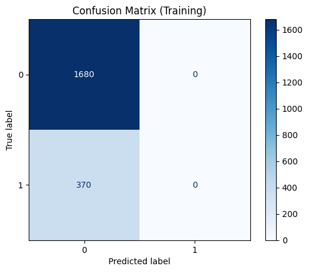
Die Auswertung unseres Baseline-Modells mit logistischer Regression zeigt, dass die gewählten Merkmale derzeit nur eine sehr geringe Aussagekraft hinsichtlich der Zielvariable has_credit_card besitzen.
Klassenunbalance
Ein Blick auf die Zielvariable macht deutlich, dass die Daten stark unausgewogen sind:
- Nur 18 % der Kunden besitzen eine Kreditkarte (Käufer),
- 82 % besitzen keine Kreditkarte (Nicht-Käufer).
Dieses Ungleichgewicht hat einen erheblichen Einfluss auf die Modellergebnisse:
Modelle, die keine spezifischen Maßnahmen gegen Klassenunbalance verwenden, neigen dazu, immer die Mehrheitsklasse zu prognostizieren. Das sehen wir auch an der Confusion Matrix: Das Modell sagt ausschließlich „Nicht-Käufer“ voraus und ignoriert komplett die Minderheitsklasse. Dadurch erscheinen herkömmliche Genauigkeitsmaße (Accuracy) künstlich hoch, obwohl die Fähigkeit zur Erkennung von Kreditkartenbesitzern praktisch nicht vorhanden ist.
Modellgüte
Die ROC-Kurve und der zugehörige AUC-Wert von 0.57 (CV) liegen nur knapp über dem Zufallsniveau. Das unterstreicht, dass das Modell kaum sinnvolle Muster zur Unterscheidung zwischen Käufern und Nicht-Käufern erkennt – weder aus den gewählten Merkmalen noch trotz Regularisierung.
SMOTE zur Verbesserung der Modellergebnisse
Um diesem Problem zu begegnen, ist es sinnvoll, die Minderheitsklasse künstlich zu verstärken und damit die Klassifikationsbasis für das Modell zu verbessern. Ein gängiges Verfahren dafür ist SMOTE (Synthetic Minority Over-sampling Technique).
SMOTE generiert neue, synthetische Beispiele der Minderheitsklasse, sodass das Modell nicht nur „lernt“, die Mehrheitsklasse vorherzusagen, sondern auch Muster für die seltenen Kreditkartenbesitzer erkennt.
from imblearn.pipeline import Pipeline as ImbPipeline
from imblearn.over_sampling import SMOTE
# --- Imbalanced Pipeline ---
pipeline = ImbPipeline([
('preprocess', preprocessor),
('sampling', SMOTE(random_state=rng)),
('cls', LogisticRegression(random_state=rng, max_iter=1000))
])
param_grid = {
"cls__class_weight": ["balanced", None, {1: 10, 0: 1}],
"cls__C": [0.01, 0.05, 0.1],
"sampling__k_neighbors": [5, 7, 9],
}
logreg_imbal = GridSearchCV(
pipeline,
param_grid=[param_grid],
cv=tscv,
scoring="roc_auc",
n_jobs=-1,
)
logreg_imbal.fit(X_train, y_train)
print("Best ROC AUC (CV):", logreg_imbal.best_score_)
print("Best Parameters:", logreg_imbal.best_params_)
plot_confusion_and_roc(logreg_imbal, X_train, y_train, title_suffix="Training")Best ROC AUC (CV): 0.5718991908880812
Best Parameters: {'cls__C': 0.01, 'cls__class_weight': 'balanced', 'sampling__k_neighbors': 5}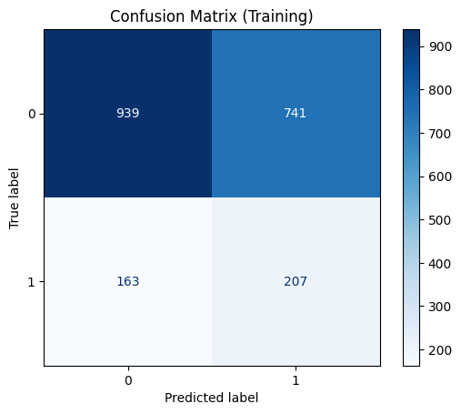
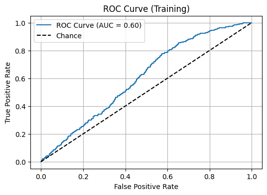
Die Ergebnisse nach Anwendung von SMOTE zeigen, dass sich das Verhalten des Modells im Vergleich zur ursprünglichen Baseline verändert hat:
Confusion Matrix:
Das Modell erkennt nun beide Klassen – sowohl Kreditkartenbesitzer als auch Nicht-Besitzer – und sagt nicht mehr nur die Mehrheitsklasse voraus. Im Training werden von 370 tatsächlichen Kreditkartenbesitzern immerhin 207 korrekt erkannt (True Positives), 163 werden jedoch weiterhin übersehen (False Negatives). Bei den Nicht-Besitzern werden 939 korrekt als solche erkannt (True Negatives), jedoch werden 741 fälschlicherweise als Kreditkartenbesitzer klassifiziert (False Positives).
Dies zeigt, dass durch das Oversampling die Sensitivität (Recall) für die Minderheitsklasse gestiegen ist, allerdings auf Kosten einer höheren Fehlerrate bei der Mehrheitsklasse.
ROC Curve und AUC:
Die ROC-Kurve ergibt keine signifikante Veränderung vom AUC-Wert und liegt immer noch nur knapp über dem Zufallsniveau. Das Modell kann die beiden Klassen also nach wie vor nur sehr eingeschränkt trennen. Die ROC-Kurve bleibt deutlich unter dem Idealverlauf.
Durch SMOTE gelingt es, das Modell „zu zwingen“, auch die Minderheitsklasse zu berücksichtigen. Die Trade-offs werden aber sichtbar: Mehr Kreditkartenbesitzer werden gefunden, dafür nimmt die Zahl der falsch-positiven Vorhersagen (fälschlich als Kreditkartenbesitzer klassifizierte Nicht-Kunden) stark zu. Insgesamt bleibt die Modellgüte weiterhin begrenzt, was darauf hindeutet, dass entweder die untersuchten Merkmale nicht ausreichend informativ sind, oder dass noch weiteres Feature Engineering notwendig ist.
Logistische Regression mit allen Features und GridSearch inklusive PCA
Um das Modellpotenzial voll auszuschöpfen, nutzen wir jetzt sämtliche numerischen und kategorialen Features aus unserem Datensatz.
Zusätzlich nehmen wir PCA (Principal Component Analysis) als optionalen Schritt in unsere Pipeline und Grid Search auf. PCA kann helfen, die Dimensionalität der Daten zu reduzieren, redundante Informationen zu entfernen und damit die Modellgüte sowie die Interpretierbarkeit zu verbessern.
Wir lassen GridSearch entscheiden, ob und wie viele Hauptkomponenten für das beste Modell verwendet werden sollen.
Deshalb führen wir einen neuen, erweiterten GridSearch durch, der die folgenden Aspekte gemeinsam optimiert:
- Regularisierungsstärke der logistischen Regression
- Berücksichtigung von Klassenunbalance (
class_weight) und/oder - SMOTE-Parameter zur Erzeugung synthetischer Minoritätsbeispiele
- Optional: Einsatz und Ausprägung der PCA-Dimensionen
from sklearn.decomposition import PCA
# --- Neue Featurelisten ---
numeric_features = [
'alter_1999', 'no_inhabitants', 'urban_ratio', 'avg_salary', 'perm_order_count', 'perm_order_sum',
'months_history', 'amount_sum_total', 'amount_mean_monthly', 'trans_count_total', 'trans_count_mean',
'balance_mean_avg', 'balance_mean_std', 'balance_vola_avg', 'balance_min_total', 'balance_max_total',
'cash_withdrawal_count_total', 'cash_withdrawal_amount_total', 'insurance_count_total',
'penalty_interest_count_total', 'amount_trend_slope', 'balance_trend_slope', 'trans_trend_slope',
'amount_median_change'
]
categorical_features = ['gender', 'frequency', 'region', 'loan_status']
features_all = numeric_features + categorical_features
# --- Neue Trainingsdaten ---
X_train_full = train_set[features_all]
y_train_full = train_set['has_credit_card']
# --- Testdaten für vollständige Features ---
X_test_full = test_set[features_all]
y_test_full = test_set['has_credit_card']
# --- TimeSeriesSplit für Zeitreihen-Cross-Validation ---
tscv = TimeSeriesSplit(n_splits=5)
# --- Preprocessing für neue Features ---
preprocessor = ColumnTransformer([
('num', StandardScaler(), numeric_features),
('cat', OneHotEncoder(handle_unknown='ignore'), categorical_features)
],
remainder='passthrough')
# --- Pipeline für vollständige Features ---
pipeline_full = ImbPipeline(steps=[
('preprocess', preprocessor),
('sampling', SMOTE(random_state=rng)),
('pca', 'passthrough'), # conditional PCA step
('cls', LogisticRegression(max_iter=1000, random_state=rng))
])
# --- GridSearchCV für vollständige Features ---
param_grid_full = {
"cls__class_weight": ["balanced", None, {1: 10, 0: 1}],
"cls__C": [0.01, 0.05, 0.1, 0.5, 1.0],
"sampling__k_neighbors": [5, 7, 9, 11],
"pca": [PCA(n_components=n) for n in [10, 15, 20]] + ['passthrough'],
}
logreg_imbal_full = GridSearchCV(
pipeline_full,
param_grid=param_grid_full,
cv=tscv,
scoring="roc_auc",
n_jobs=-1
)
logreg_imbal_full.fit(X_train_full, y_train_full)
print("Best ROC AUC (CV) (mit allen Features):", logreg_imbal_full.best_score_)
print("Best Parameters:", logreg_imbal_full.best_params_)
plot_confusion_and_roc(logreg_imbal_full, X_train_full, y_train_full, title_suffix="Log Reg Training")Best ROC AUC (CV) (mit allen Features): 0.6444419773547959
Best Parameters: {'cls__C': 1.0, 'cls__class_weight': 'balanced', 'pca': 'passthrough', 'sampling__k_neighbors': 7}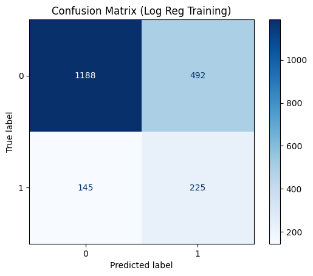
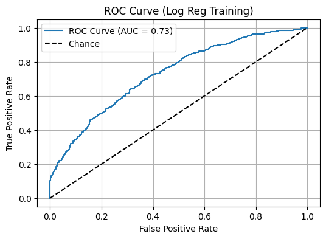
Nach Einbezug aller numerischen und kategorialen Features sowie erneuter Optimierung der Modellparameter ergibt sich eine deutlich verbesserte Modellerkennung im Vergleich zur Baseline mit nur wenigen Variablen.
ROC Curve und AUC:
Der Best ROC AUC (CV) ist mit ≈ 0.64 (vorher ≈ 0.58) spürbar gestiegen. Auch der ROC-AUC auf dem Trainingsset (≈ 0.72) zeigt, dass das Modell wesentlich besser zwischen Kreditkartenbesitzern und Nicht-Besitzern unterscheiden kann als zuvor. Die Trennschärfe des Modells ist also gestiegen, auch wenn das absolute Niveau noch nicht in einem sehr hohen Bereich liegt.
Confusion Matrix:
Die Confusion Matrix belegt, dass das Modell die Minderheitsklasse (Kreditkartenbesitzer) nun deutlich besser erkennt. 225 von 370 Kreditkartenbesitzern im Trainingsdatensatz werden korrekt identifiziert, was im Vergleich zur Baseline eine klare Verbesserung darstellt. Gleichzeitig werden noch immer viele Nicht-Besitzer fälschlicherweise als Kreditkartenbesitzer klassifiziert (False Positives), was zeigt, dass der Zielkonflikt zwischen Sensitivität und Spezifität weiterhin besteht – aber das Modell ist nun viel weniger „blind“ für die Minoritätsklasse.
PCA im GridSearch:
Das beste Modell hat auf PCA verzichtet ('pca': 'passthrough'), das heißt, die Originalfeatures waren für die Vorhersage informativer als eine reduzierte Hauptkomponentendarstellung. Das ist ein Hinweis darauf, dass die Vielzahl der Features tatsächlich sinnvolle Trenninformation liefert.
Durch die Erweiterung des Feature-Sets, Feintuning von SMOTE und Regularisierung konnte die Modellgüte im Vergleich zur einfachen Baseline signifikant gesteigert werden. Das Modell erkennt nun wesentlich mehr Kreditkartenbesitzer, wenn auch auf Kosten von mehr Fehlalarmen. Dies ist ein erwarteter Trade-off in stark unbalancierten Settings.
Modellvergleich, -selektion und -optimierung
Übersicht der Baseline und der verwendeten Kandidaten-Modelle inkl. deren Parametrisierung
| Modell | Predictive Features | Haupt-Hyperparameter | Preprocessing / Extras |
|---|---|---|---|
| Baseline (LogReg) | alter_1999, gender, region, balance_mean_avg, amount_sum_total |
C (0.01, 0.05, 0.1), class_weight (balanced/None), penalty (l2) |
StandardScaler, OneHotEncoder, SMOTE |
| Logistic Regression | Alle numerischen & kategorialen Features:alter_1999, no_inhabitants, urban_ratio, … loan_status |
C (0.01, 0.05, 0.1), class_weight (balanced/None), SMOTE (k_neighbors=5,7,9), PCA (10,15,20, none) |
StandardScaler, OneHotEncoder, SMOTE, PCA |
| Random Forest | Alle numerischen & kategorialen Features | n_estimators (50,100,200), max_depth (None,5,10,20), min_samples_leaf (1,5,10), SMOTE (k_neighbors=5,7,9) |
OneHotEncoder, SMOTE |
| XGBoost | Alle numerischen & kategorialen Features | n_estimators (100,200,300), max_depth (2,3,4), learning_rate (0.05,0.1,0.5), subsample, colsample_bytree, scale_pos_weight, SMOTE (k_neighbors=5,7,9) |
OneHotEncoder, SMOTE |
| MLP | Alle numerischen & kategorialen Features | hidden_layer_sizes ((100,50), (200,100), (300,150)), alpha (0.03,0.1,0.3), learning_rate_init (0.03,0.1,0.3), SMOTE (k_neighbors=5,7,9), PCA (10,15,20, none) |
StandardScaler, OneHotEncoder, SMOTE, PCA |
Random Forest
Der RandomForestClassifier ist ein Ensemble-Lernverfahren, das viele Entscheidungsbäume kombiniert und dadurch die Robustheit und Vorhersagekraft gegenüber einzelnen Bäumen deutlich steigert.
Stärken:
- Hohe Vorhersagekraft: Random Forests sind in vielen Settings leistungsfähiger als einzelne (lineare) Modelle, da sie komplexe, nichtlineare Zusammenhänge und Interaktionen zwischen Variablen automatisch erfassen können.
- Robustheit gegen Overfitting: Durch die zufällige Auswahl von Teilmengen der Daten und Features für jeden Baum wird Overfitting deutlich reduziert, insbesondere im Vergleich zu einzelnen Decision Trees.
- Geringe Parametrierung: Das Modell funktioniert oft schon mit den Defaults recht gut und benötigt vergleichsweise wenig Hyperparameter-Tuning.
- Kein Bedarf an Feature-Normalisierung: Entscheidungsbäume und damit Random Forests sind unempfindlich gegenüber unterschiedlich skalierten oder nicht-normalisierten numerischen Features.
- Kann mit Missing Values umgehen: Durch das Ensemble-Prinzip sind Random Forests weniger empfindlich gegenüber einzelnen fehlenden Werten.
- Variable Importance: Liefert automatisch die Wichtigkeit der verwendeten Features, was die Interpretation und das Feature Engineering unterstützt.
Schwächen:
- Geringere Interpretierbarkeit: Im Vergleich zu linearen Modellen oder einzelnen Entscheidungsbäumen sind Random Forests schwieriger vollständig zu interpretieren („Black Box“).
- Mehr Rechenaufwand: Vor allem bei sehr großen Datenmengen und vielen Bäumen kann Training und Vorhersagezeit zunehmen.
- Kann für sehr hohe Dimensionalität und extreme Imbalance spezielle Einstellungen benötigen.
- Schlechte Extrapolation: Random Forests interpolieren zwischen bekannten Trainingspunkten, können aber außerhalb dieser Regionen keine sinnvollen Vorhersagen machen.
Empfindlichkeit gegenüber Normalisierung:
Random Forests benötigen keine Feature-Skalierung oder -Normalisierung. Unterschiedliche Skalen der Features beeinflussen die Entscheidungsfindung nicht, da die Bäume Splits anhand von Schwellenwerten (und nicht von Abständen) treffen.
Default Settings in scikit-learn:
- Standardmäßig werden 100 Bäume (
n_estimators=100) trainiert.
- Der Split-Modus ist Gini-Impurity.
- Keine maximale Baumtiefe (
max_depth=None), was zu sehr tiefen Bäumen führen kann.
- Standardmäßig werden alle Features berücksichtigt, aber jeweils nur ein zufälliger Teil pro Split (
max_features='auto').
- Keine Berücksichtigung von Klassenungleichgewichten (
class_weight=None).
Random Forests sind vielseitige, leistungsstarke Klassifikatoren, die sich gut für heterogene und komplexe Daten eignen – oft als „starke Baseline“ oder Referenzmodell. Ihr geringer Bedarf an Datenvorverarbeitung und Hyperparametertuning macht sie in der Praxis sehr attraktiv.
Gradient Boosting mit XGBoost
XGBoost („Extreme Gradient Boosting“) ist ein moderner, leistungsstarker Ensemble-Algorithmus, der auf „Gradient Boosted Decision Trees“ basiert. XGBoost ist vielfach Benchmark-Sieger und wird in der Praxis und in Data-Science-Wettbewerben (wie Kaggle) besonders häufig eingesetzt.
Stärken:
- Hervorragende Performance: XGBoost erzielt oft sehr hohe Vorhersagegenauigkeiten, besonders bei strukturierten Tabellendaten und großen, komplexen Datensätzen.
- Automatisches Feature-Selection: Unwichtige oder redundante Features werden durch die Baumauswahl effektiv ignoriert.
- Flexibel und robust: Kann sowohl Klassifikations- als auch Regressionsprobleme, sowie viele verschiedene Loss-Funktionen (z.B. Log-Loss, Hinge) behandeln.
- Effiziente Implementation: Dank sparsamer Algorithmen, Multi-Threading und Support für Missing Values sehr schnell – auch auf großen Datenmengen.
- Kann mit Imbalanced Data umgehen: Durch Gewichtung und spezielle Loss-Funktionen.
- Feature Importance: Liefert klare Metriken zur Einschätzung der wichtigsten Variablen.
Schwächen:
- Viele Hyperparameter: Optimale Ergebnisse setzen oft ein sorgfältiges Tuning zahlreicher Parameter voraus (Baumanzahl, Tiefe, Lernrate, etc.).
- Overfitting-Gefahr: Ohne Regularisierung und frühes Stoppen kann das Modell schnell überanpassen, vor allem bei kleinen Datensätzen.
- Geringere Interpretierbarkeit: Wie andere baumbasierte Ensembles ist XGBoost eine „Black Box“ im Vergleich zu linearen Modellen.
- Standardmäßig keine Modellierung sehr komplexer Interaktionen (z.B. Zeitreihen ohne Feature Engineering).
Empfindlichkeit gegenüber Normalisierung:
Wie andere baumbasierte Methoden benötigt XGBoost keine explizite Skalierung oder Normalisierung der Features – die Splits sind skalenunabhängig. Allerdings kann die Modellierung profitieren, wenn extrem schiefe Features transformiert werden.
Default Settings:
- 100 Bäume (
n_estimators=100)
- Maximale Tiefe der Bäume (
max_depth=3)
- Lernrate (
learning_rate=0.1)
- Keine explizite Regularisierung (
reg_alpha=0,reg_lambda=1)
- Split nach Gini-Impurity (standardmäßig)
- Fehlende Werte werden automatisch erkannt und verarbeitet
- Keine Klassen-Gewichtung (
scale_pos_weight=1), kann aber für Imbalance angepasst werden
Fazit:
XGBoost ist ein extrem leistungsstarkes und vielseitiges Modell für strukturierte Daten, das mit wenig Vorverarbeitung auskommt und häufig die Benchmark für Klassifikations- und Regressionsaufgaben setzt. Die vielen Stellschrauben erlauben gezieltes Feintuning, verlangen aber Erfahrung und Sorgfalt im Modellierungsprozess.
MLP (Multi-Layer Perceptron)
Der MLPClassifier implementiert ein künstliches neuronales Netz (Multi-Layer Perceptron) für Klassifikationsaufgaben und gehört zu den flexiblen, nichtlinearen Modellen im Standard-Machine-Learning-Toolkit.
Stärken:
- Modelliert komplexe, nichtlineare Beziehungen: Dank mehrerer versteckter Schichten und Aktivierungsfunktionen können MLPs auch schwierige Zusammenhänge zwischen Features und Zielgröße erfassen, die mit linearen Modellen nicht abbildbar wären.
- Vielseitig: Funktioniert für eine Vielzahl von Klassifikationsaufgaben – sowohl bei kleinen als auch bei mittelgroßen Datensätzen.
- Kann Interaktionen zwischen Features automatisch lernen: Auch ohne explizites Feature Engineering können Interaktionseffekte erfasst werden.
- Flexibel durch viele Hyperparameter: Netzwerkarchitektur, Lernrate, Aktivierungsfunktionen, Regularisierung und mehr können fein abgestimmt werden.
Schwächen:
- Aufwändiges Hyperparameter-Tuning: Optimale Netzarchitektur, Lernrate und Regularisierung zu finden, ist meist komplex und zeitaufwändig.
- „Black Box“-Charakter: Die Modelle sind nur schwer interpretierbar und liefern keine intuitiven Feature-Koeffizienten oder -Importances.
- Längere Trainingszeiten: Je nach Datenmenge und Netzwerkgröße kann das Training deutlich länger dauern als bei anderen ML-Modellen.
- Empfindlich für Overfitting: Ohne ausreichende Regularisierung oder bei zu komplexen Netzen neigen MLPs schnell zum Überanpassen.
Empfindlichkeit gegenüber Normalisierung:
MLPs sind sehr empfindlich gegenüber unterschiedlich skalierten Features. Für eine stabile und effiziente Konvergenz ist es unerlässlich, numerische Eingabevariablen zu standardisieren (z. B. mit StandardScaler). Ohne Normalisierung werden viele Modelle gar nicht oder nur sehr schlecht lernen.
Default Settings in scikit-learn:
- Ein versteckter Layer mit 100 Neuronen (
hidden_layer_sizes=(100,))
- Aktivierungsfunktion: ReLU (
activation='relu')
- Optimizer: Adam (
solver='adam')
- Keine Feature-Normalisierung automatisch enthalten
- Maximale Iterationen: 200 (
max_iter=200)
- Keine explizite Regularisierung (L2-Strafe,
alpha=0.0001)
- Batchgröße: 200 (
batch_size='auto')
Der MLPClassifier ist ein flexibles, mächtiges Werkzeug für nichtlineare Klassifikationsprobleme, benötigt aber eine sorgfältige Datenvorverarbeitung und viel Erfahrung im Hyperparameter-Tuning. Für kleinere, gut interpretierbare Modelle sind andere Verfahren meist vorzuziehen; bei komplexen Zusammenhängen und genügend Daten bietet der MLP jedoch viel Potenzial.
Performance-Vergleich von Baseline und Kandidaten-Modellen via Kreuzvalidierung mit sinnvollen, visuellen Metriken und Kennzahlen
Im folgenden Codeblock vergleichen wir mehrere unterschiedliche Machine-Learning-Modelle miteinander: logistische Regression, Random Forest, XGBoost und Multi-Layer Perceptron (MLP).
Für jedes Modell bauen wir eine eigene Pipeline auf, in der wir systematisch verschiedene Optionen für Datenvorverarbeitung (Preprocessing), Klassengewichtung, Oversampling mit SMOTE und – sofern sinnvoll – PCA zur Dimensionsreduktion durchprobieren. Die jeweils wichtigsten Modell-Hyperparameter werden ebenfalls im Rahmen eines umfassenden GridSearchCV getestet.
Alle Modelle werden auf Basis eines zeitlichen Splits (TimeSeriesSplit) per Cross-Validation bewertet. Als Zielgrößen dienen dabei ROC-AUC (zur robusten Gesamtbewertung) und Precision (um gezielt die Erkennungsrate der Kreditkartenbesitzer zu beurteilen).
Die besten Ergebnisse (samt Hyperparametern und Precision-Statistiken) werden modellweise übersichtlich gespeichert und ausgegeben. So erhalten wir einen fundierten Überblick darüber, welche Modellklasse und welche Einstellungen im Rahmen dieser Challenge am besten funktionieren.
# --- Imports ---
from sklearn.ensemble import RandomForestClassifier
from xgboost import XGBClassifier
from sklearn.neural_network import MLPClassifier
from sklearn.metrics import make_scorer, precision_score
# --- Pipeline für Logistic Regression ---
pipeline_lr = ImbPipeline(steps=[
('preprocess', preprocessor),
('sampling', SMOTE(random_state=rng)),
('pca', 'passthrough'),
('cls', LogisticRegression(max_iter=1000, random_state=rng))
])
# --- GridSearchCV für Logistic Regression ---
param_grid_lr = {
"cls__class_weight": ["balanced", None, {1: 10, 0: 1}],
"cls__C": [0.3, 1.0, 1.3],
"sampling__k_neighbors": [5, 7, 9, 11],
"pca": [PCA(n_components=n) for n in [10, 15, 20]] + ['passthrough'],
}
# --- Pipeline für Random Forest ---
pipeline_rf = ImbPipeline(steps=[
('preprocess', preprocessor),
('sampling', SMOTE(random_state=rng)),
('clf', RandomForestClassifier(random_state=rng, n_jobs=-1))
])
# --- GridSearchCV für Random Forest ---
param_grid_rf = {
"clf__n_estimators": [50, 100, 200],
"clf__max_depth": [None, 5, 10, 20],
"clf__min_samples_leaf":[10, 15, 20],
"sampling__k_neighbors": [5, 7, 9, 11]
}
# --- Pipeline für XGBoost ---
pipeline_xgb = ImbPipeline(steps=[
('preprocess', preprocessor),
('sampling', SMOTE(random_state=rng)),
('clf', XGBClassifier(
random_state=rng,
eval_metric='auc'))
])
# --- GridSearchCV für XGBoost ---
param_grid_xgb = {
"clf__n_estimators": [300, 400, 500],
"clf__max_depth": [2, 3, 4],
"clf__learning_rate": [0.01, 0.03, 0.1, 0.3],
"clf__subsample": [0.8, 1.0],
"clf__colsample_bytree": [0.8, 1.0],
"clf__scale_pos_weight": [1.0],
"sampling__k_neighbors": [5, 7, 9, 11]
}
# --- Pipeline für MLP ---
pipeline_mlp = ImbPipeline(steps=[
('preprocess', preprocessor),
('sampling', SMOTE(random_state=rng)),
('pca', 'passthrough'),
('clf', MLPClassifier(random_state=rng, max_iter=1000))
])
# --- GridSearchCV für MLP ---
param_grid_mlp = {
"clf__hidden_layer_sizes": [(200, 100), (300, 150), (400, 200)],
"clf__activation": ['relu'],
"clf__alpha": [0.1, 0.3, 1.0],
"clf__learning_rate_init": [0.1, 0.3, 1.0],
"sampling__k_neighbors": [7, 9, 11],
"pca": [PCA(n_components=n) for n in [10, 15, 20]] + ['passthrough'],
}
# Vergleich aller Kandidaten‐Modelle mit einer for‐Schleife
all_pipelines = {
"LogisticRegression": pipeline_lr,
"RandomForest": pipeline_rf,
"XGBoost": pipeline_xgb,
"MLP": pipeline_mlp
}
all_param_grids = {
"LogisticRegression": param_grid_lr,
"RandomForest": param_grid_rf,
"XGBoost": param_grid_xgb,
"MLP": param_grid_mlp
}
# --- Multi‐Scorer für GridSearchCV ---
multi_scorer = {
"roc_auc": "roc_auc",
"precision": make_scorer(precision_score, average="binary", zero_division=0)
}
results = {}
for name in all_pipelines:
print(f"Starte GridSearchCV für {name} …")
grid = GridSearchCV(
estimator = all_pipelines[name],
param_grid = all_param_grids[name],
cv = tscv,
scoring = multi_scorer,
refit = "roc_auc",
n_jobs = -1,
verbose = 0
)
grid.fit(X_train_full, y_train_full)
mean_precision = grid.cv_results_["mean_test_precision"][grid.best_index_]
std_precision = grid.cv_results_["std_test_precision"][grid.best_index_]
results[name] = {
"best_score": grid.best_score_,
"best_params": grid.best_params_,
"mean_precision": mean_precision,
"std_precision": std_precision
}
print(f"{name} – beste ROC-AUC: {grid.best_score_:.4f}")
print(f"{name} – Precision (mean/std): {mean_precision:.4f} ± {std_precision:.4f}")
print(f"{name} – beste Params: {grid.best_params_}\n")Starte GridSearchCV für LogisticRegression …
LogisticRegression – beste ROC-AUC: 0.6452
LogisticRegression – Precision (mean/std): 0.2883 ± 0.0353
LogisticRegression – beste Params: {'cls__C': 1.3, 'cls__class_weight': 'balanced', 'pca': 'passthrough', 'sampling__k_neighbors': 7}
Starte GridSearchCV für RandomForest …
RandomForest – beste ROC-AUC: 0.6838
RandomForest – Precision (mean/std): 0.3874 ± 0.0577
RandomForest – beste Params: {'clf__max_depth': None, 'clf__min_samples_leaf': 20, 'clf__n_estimators': 100, 'sampling__k_neighbors': 11}
Starte GridSearchCV für XGBoost …
XGBoost – beste ROC-AUC: 0.7090
XGBoost – Precision (mean/std): 0.4642 ± 0.0667
XGBoost – beste Params: {'clf__colsample_bytree': 1.0, 'clf__learning_rate': 0.1, 'clf__max_depth': 2, 'clf__n_estimators': 500, 'clf__scale_pos_weight': 1.0, 'clf__subsample': 1.0, 'sampling__k_neighbors': 9}
Starte GridSearchCV für MLP …
MLP – beste ROC-AUC: 0.6468
MLP – Precision (mean/std): 0.3109 ± 0.0496
MLP – beste Params: {'clf__activation': 'relu', 'clf__alpha': 0.3, 'clf__hidden_layer_sizes': (300, 150), 'clf__learning_rate_init': 0.3, 'pca': 'passthrough', 'sampling__k_neighbors': 9}
from sklearn.metrics import roc_curve, auc
# Modelle trainieren und Ergebnisse speichern
roc_data = {}
for name in all_pipelines:
best_pipeline = all_pipelines[name].set_params(**results[name]["best_params"])
best_pipeline.fit(X_train_full, y_train_full)
y_proba_train = best_pipeline.predict_proba(X_train_full)[:, 1]
y_proba_test = best_pipeline.predict_proba(X_test_full)[:, 1]
roc_data[name] = {
"Train": (y_train_full, y_proba_train),
"Test": (y_test_full, y_proba_test),
}
def plot_roc_curves(roc_data, dataset_key, title):
# Reihenfolge wie in deinem Lift-Plot
model_names = ['Baseline', 'LogisticRegression', 'RandomForest', 'XGBoost', 'MLP']
palette = sns.color_palette('viridis', len(model_names))
plt.figure(figsize=(8, 6))
for idx, name in enumerate(model_names):
if name not in roc_data:
continue # Falls nicht alle Modelle enthalten sind
y_true, y_proba = roc_data[name][dataset_key]
fpr, tpr, _ = roc_curve(y_true, y_proba)
roc_auc = auc(fpr, tpr)
plt.plot(
fpr, tpr, lw=2,
label=f"{name} (AUC = {roc_auc:.2f})",
color=palette[idx]
)
plt.plot([0, 1], [0, 1], color="grey", linestyle="--", lw=1, label="Random")
plt.xlabel("False Positive Rate")
plt.ylabel("True Positive Rate")
plt.title(title)
plt.legend(loc="lower right")
plt.grid(alpha=0.3)
plt.tight_layout()
plt.show()
# Aufruf für beide Sets – jetzt superelegant:
plot_roc_curves(roc_data, "Train", "ROC-Kurven der vier Modelle (Trainingsdaten)")
plot_roc_curves(roc_data, "Test", "ROC-Kurven der vier Modelle (Testdaten)")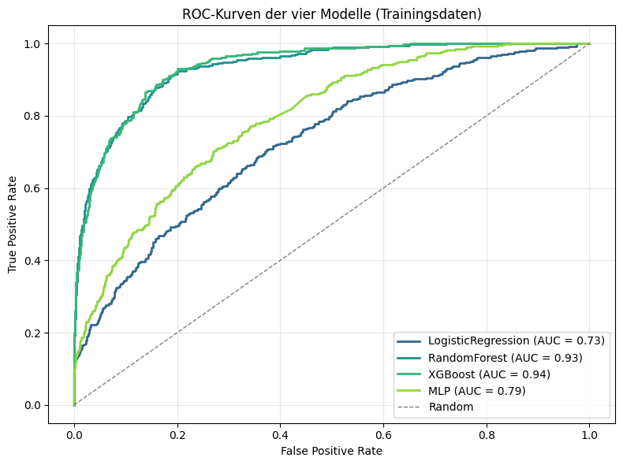
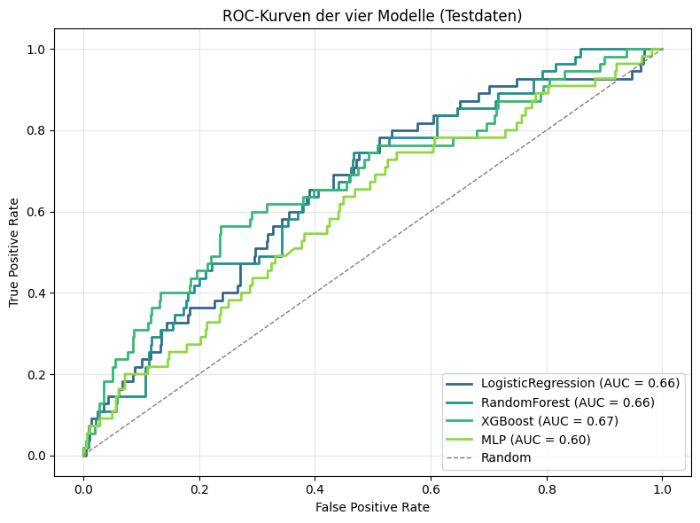
Die ROC-Kurven und die GridSearchCV-Resultate zeigen ein klares Bild:
- XGBoost und Random Forest erzielen im Training die höchsten AUCs (XGBoost: 0.94, RF: 0.93), aber auf den Testdaten sinkt die Performance für alle Modelle deutlich ab – am höchsten bleiben XGBoost (0.67) und Random Forest (0.66). Die logistische Regression (0.66) und das MLP (0.60) liefern auf dem Testset keine Vorteile gegenüber den Baumverfahren.
- Die Differenz zwischen Trainings- und Testleistung, vor allem beim Random Forest und XGBoost, deutet auf Overfitting hin.
Precision im CV-Vergleich:
- XGBoost und Random Forest liefern auch bei der Precision (mittlere Precision im CV) die besten Werte.
- Die logistische Regression und das MLP bleiben merklich dahinter zurück.
- Die höhere Precision der Baumverfahren bedeutet, dass diese Modelle unter den als „Käufer“ vorhergesagten Fällen einen höheren Anteil tatsächlich richtiger Käufer identifizieren.
Die Modelle XGBoost und Random Forest sind damit sowohl nach AUC als auch nach Precision deutlich überlegen. Das ist besonders wichtig, da in der praktischen Anwendung (z. B. bei Marketingaktionen) meist nur ein Teil der Top-Kandidaten tatsächlich angesprochen werden kann – und dort sollen möglichst viele echte Käufer enthalten sein.
Optimieren der Modelle auf Precision@10 %
Da in der praktischen Anwendung typischerweise nur ein Teil der Kunden mit den höchsten Modell-Scores gezielt angesprochen wird (z. B. für Marketingkampagnen), ist es entscheidend, wie hoch der Anteil tatsächlicher Käufer unter den Top-10 % der Modellprognosen ist.
Mit der Optimierung auf Precision@10 % stellen wir sicher, dass unser Modell bevorzugt solche Kunden auf den vordersten Score-Rängen platziert, die mit hoher Wahrscheinlichkeit tatsächlich eine Kreditkarte erwerben werden.
Dies maximiert den Geschäftsnutzen, indem die „Trefferquote“ bei einer realistischen Selektionsgröße möglichst hoch ist – und begrenzt gleichzeitig die Kosten, indem Streuverluste minimiert werden.
from math import ceil
# --- Precision@k-Funktion ---
def precision_at_k(y_true: np.ndarray, y_proba: np.ndarray, k: float = 0.10) -> float:
"""
Berechnet Precision@k (z. B. Top-10%) basierend auf Wahrscheinlichkeiten.
- y_true: Array mit 0/1-Labels
- y_proba: Array mit Score/Wahrscheinlichkeit für Klasse 1
- k: Anteil (z. B. 0.10 für Top-10%)
Rückgabe: Precision in den obersten k-Prozent.
"""
# Falls keine Daten oder keine positiven Labels:
if len(y_true) == 0 or np.sum(y_true) == 0:
return 0.0
# 1) DataFrame zum Sortieren
df = pd.DataFrame({
'y_true': y_true,
'y_proba': y_proba
})
df_sorted = df.sort_values('y_proba', ascending=False).reset_index(drop=True)
# 2) Anzahl der obersten k*len(df)
n_top = ceil(k * len(df_sorted))
if n_top < 1:
return 0.0
top_df = df_sorted.iloc[:n_top]
precision_k = top_df['y_true'].mean() # Anteil der Positiven in den Top-n_top
return precision_k
# --- Scorer für Precision@10% ---
def precision10_scorer(estimator, X, y_true):
"""Wrapper, den GridSearchCV direkt aufruft."""
y_proba = estimator.predict_proba(X)[:, 1] # Score der Positiv-Klasse
return precision_at_k(y_true, y_proba, k=0.10)
# --- Pipeline & GridSearchCV für Logistic Regression ---
pipeline_lr = ImbPipeline(steps=[
('preprocess', preprocessor),
('sampling', SMOTE(random_state=rng)),
('pca', 'passthrough'),
('cls', LogisticRegression(max_iter=1000, random_state=rng))
])
param_grid_lr = {
"cls__class_weight": ["balanced", None, {1: 10, 0: 1}],
"cls__C": [0.3, 1.0, 1.3],
"sampling__k_neighbors": [5, 7, 9, 11],
"pca": [PCA(n_components=n) for n in [10, 15, 20]] + ['passthrough'],
}
grid_lr = GridSearchCV(
estimator = pipeline_lr,
param_grid = param_grid_lr,
cv = tscv,
scoring = precision10_scorer,
n_jobs = -1,
verbose = 0
)
grid_lr.fit(X_train_full, y_train_full)
best_precision_lr = grid_lr.best_score_
best_params_lr = grid_lr.best_params_
# --- 5) Pipeline & GridSearchCV für Random Forest ---
pipeline_rf = ImbPipeline(steps=[
('preprocess', preprocessor),
('sampling', SMOTE(random_state=rng)),
('clf', RandomForestClassifier(random_state=rng, n_jobs=-1))
])
param_grid_rf = {
"clf__n_estimators": [50, 100, 200],
"clf__max_depth": [None, 5, 10, 20],
"clf__min_samples_leaf": [10, 15, 20],
"sampling__k_neighbors": [5, 7, 9, 11]
}
grid_rf = GridSearchCV(
estimator = pipeline_rf,
param_grid = param_grid_rf,
cv = tscv,
scoring = precision10_scorer,
n_jobs = -1,
verbose = 0
)
grid_rf.fit(X_train_full, y_train_full)
best_precision_rf = grid_rf.best_score_
best_params_rf = grid_rf.best_params_
# --- 6) Pipeline & GridSearchCV für XGBoost ---
pipeline_xgb = ImbPipeline(steps=[
('preprocess', preprocessor),
('sampling', SMOTE(random_state=rng)),
('clf', XGBClassifier(
random_state=rng,
eval_metric='logloss'
))
])
param_grid_xgb = {
"clf__n_estimators": [300, 400, 500],
"clf__max_depth": [2, 3, 4],
"clf__learning_rate": [0.01, 0.03, 0.1, 0.3],
"clf__subsample": [0.8, 1.0],
"clf__colsample_bytree": [0.8, 1.0],
"clf__scale_pos_weight": [1.0],
"sampling__k_neighbors": [5, 7, 9, 11]
}
grid_xgb = GridSearchCV(
estimator = pipeline_xgb,
param_grid = param_grid_xgb,
cv = tscv,
scoring = precision10_scorer,
n_jobs = -1,
verbose = 0
)
grid_xgb.fit(X_train_full, y_train_full)
best_precision_xgb = grid_xgb.best_score_
best_params_xgb = grid_xgb.best_params_
# --- 7) Pipeline & GridSearchCV für MLP ---
pipeline_mlp = ImbPipeline(steps=[
('preprocess', preprocessor),
('sampling', SMOTE(random_state=rng)),
('pca', 'passthrough'),
('clf', MLPClassifier(random_state=rng, max_iter=1000))
])
param_grid_mlp = {
"clf__hidden_layer_sizes": [(200, 100), (300, 150), (400, 200)],
"clf__activation": ['relu'],
"clf__alpha": [0.1, 0.3, 1.0],
"clf__learning_rate_init": [0.1, 0.3, 1.0],
"sampling__k_neighbors": [7, 9, 11],
"pca": [PCA(n_components=n) for n in [10, 15, 20]] + ['passthrough'],
}
grid_mlp = GridSearchCV(
estimator = pipeline_mlp,
param_grid = param_grid_mlp,
cv = tscv,
scoring = precision10_scorer,
n_jobs = -1,
verbose = 0
)
grid_mlp.fit(X_train_full, y_train_full)
best_precision_mlp = grid_mlp.best_score_
best_params_mlp = grid_mlp.best_params_
# --- 8) Ergebnisse ausgeben ---
results = {
"LogisticRegression": {
"best_precision10": best_precision_lr,
"best_params": best_params_lr
},
"RandomForest": {
"best_precision10": best_precision_rf,
"best_params": best_params_rf
},
"XGBoost": {
"best_precision10": best_precision_xgb,
"best_params": best_params_xgb
},
"MLP": {
"best_precision10": best_precision_mlp,
"best_params": best_params_mlp
}
}
for name, info in results.items():
print(f"{name:<18} | Best Precision@10% (CV): {info['best_precision10']:.4f} | Params: {info['best_params']}")LogisticRegression | Best Precision@10% (CV): 0.4514 | Params: {'cls__C': 1.0, 'cls__class_weight': {1: 10, 0: 1}, 'pca': 'passthrough', 'sampling__k_neighbors': 7}
RandomForest | Best Precision@10% (CV): 0.4857 | Params: {'clf__max_depth': None, 'clf__min_samples_leaf': 20, 'clf__n_estimators': 200, 'sampling__k_neighbors': 5}
XGBoost | Best Precision@10% (CV): 0.4914 | Params: {'clf__colsample_bytree': 0.8, 'clf__learning_rate': 0.03, 'clf__max_depth': 3, 'clf__n_estimators': 500, 'clf__scale_pos_weight': 1.0, 'clf__subsample': 1.0, 'sampling__k_neighbors': 5}
MLP | Best Precision@10% (CV): 0.4514 | Params: {'clf__activation': 'relu', 'clf__alpha': 0.1, 'clf__hidden_layer_sizes': (300, 150), 'clf__learning_rate_init': 1.0, 'pca': PCA(n_components=10), 'sampling__k_neighbors': 9}Die Optimierung der Modelle auf Precision@10% zeigt, dass XGBoost mit 0.4914 die höchste Trefferquote in den obersten 10 % der Score-Ränge erzielt, dicht gefolgt von Random Forest (0.486). Logistische Regression und MLP liegen mit jeweils 0.4514 leicht darunter.
Damit bestätigt sich der Trend der vorherigen Modellvergleiche: Die Baumverfahren (insbesondere XGBoost) sind am besten geeignet, um die echten Käufer gezielt an die Spitze der Modell-Rangliste zu platzieren.
# --- Precision@10% und Lift@10% auf dem Test-Set berechnen ---
# 1) Wahrscheinlichkeiten (Score der Positiv-Klasse) auf dem Test-Set holen
y_proba_baseline = baseline.best_estimator_.predict_proba(X_test_full)[:, 1]
y_proba_lr = grid_lr.best_estimator_.predict_proba(X_test_full)[:, 1]
y_proba_rf = grid_rf.best_estimator_.predict_proba(X_test_full)[:, 1]
y_proba_xgb = grid_xgb.best_estimator_.predict_proba(X_test_full)[:, 1]
y_proba_mlp = grid_mlp.best_estimator_.predict_proba(X_test_full)[:, 1]
# 2) Precision@10% mit der bereits definierten Funktion precision_at_k berechnen
precision10_baseline = precision_at_k(y_test_full, y_proba_baseline, k=0.10)
precision10_lr = precision_at_k(y_test_full, y_proba_lr, k=0.10)
precision10_rf = precision_at_k(y_test_full, y_proba_rf, k=0.10)
precision10_xgb = precision_at_k(y_test_full, y_proba_xgb, k=0.10)
precision10_mlp = precision_at_k(y_test_full, y_proba_mlp, k=0.10)
# 3) Basisrate (Prävalenz) im Test-Set berechnen
base_rate_test = np.mean(y_test_full) # Anteil der positiven Labels insgesamt
# 4) Lift@10% berechnen (Precision@10% geteilt durch Basisrate)
lift10_baseline = precision10_baseline / base_rate_test if base_rate_test > 0 else np.nan
lift10_lr = precision10_lr / base_rate_test if base_rate_test > 0 else np.nan
lift10_rf = precision10_rf / base_rate_test if base_rate_test > 0 else np.nan
lift10_xgb = precision10_xgb / base_rate_test if base_rate_test > 0 else np.nan
lift10_mlp = precision10_mlp / base_rate_test if base_rate_test > 0 else np.nan
# 5) Ergebnisse ausgeben
print(f"Baseline | Precision@10% (Test): {precision10_baseline:.4f} | Lift@10%: {lift10_baseline:.2f}")
print(f"Logistic Regression | Precision@10% (Test): {precision10_lr:.4f} | Lift@10%: {lift10_lr:.2f}")
print(f"Random Forest | Precision@10% (Test): {precision10_rf:.4f} | Lift@10%: {lift10_rf:.2f}")
print(f"XGBoost | Precision@10% (Test): {precision10_xgb:.4f} | Lift@10%: {lift10_xgb:.2f}")
print(f"MLP | Precision@10% (Test): {precision10_mlp:.4f} | Lift@10%: {lift10_mlp:.2f}")Baseline | Precision@10% (Test): 0.1538 | Lift@10%: 1.43
Logistic Regression | Precision@10% (Test): 0.2115 | Lift@10%: 1.97
Random Forest | Precision@10% (Test): 0.2500 | Lift@10%: 2.33
XGBoost | Precision@10% (Test): 0.3462 | Lift@10%: 3.23
MLP | Precision@10% (Test): 0.2692 | Lift@10%: 2.51Die abschließende Bewertung der Modelle auf dem Testdatensatz verdeutlicht den praktischen Nutzen von Precision@10% und Lift@10%. Das Baseline Modell erreicht auf dem Testset eine Precision@10% von 0.1538 und einen Lift von 1.43. Das bedeutet: Von 100 Kunden mit den höchsten Scores wären bei zufälliger Auswahl rund 15 tatsächliche Kreditkartenkäufer dabei. Das Modell schneidet also nur wenig besser ab als Zufall.
Deutlich besser performen alle trainierten Modelle:
- Die logistische Regression steigert die Precision@10% bereits auf 0.2115 (Lift: 1.97),
- der Random Forest auf 0.2500 (Lift: 2.33),
- und das MLP auf 0.2692 (Lift: 2.51).
Am überzeugendsten ist jedoch XGBoost:
Dieses Modell erreicht auf dem Testset eine Precision@10% von 0.3462, was einem Lift von 3.23 entspricht.
Das heißt konkret: In den obersten 10 % der vom Modell bewerteten Score-Ränge sind mehr als 34 % tatsächlich Kreditkartenkäufer – über dreimal so viele wie bei einer zufälligen Auswahl.
Der Lift macht den Effizienzgewinn der Modelle gegenüber der Baseline besonders anschaulich: Je höher der Lift, desto mehr echte Käufer werden mit gezielten Kampagnen innerhalb der Top-10% gefunden. XGBoost liefert hier den deutlichsten Mehrwert, gefolgt von MLP, Random Forest und Logistischer Regression.
df_metrics = pd.DataFrame({
'Model': ['Baseline', 'Logistic Regression', 'Random Forest', 'XGBoost', 'MLP'],
'Lift@10': [
lift10_baseline,
lift10_lr,
lift10_rf,
lift10_xgb,
lift10_mlp
]
})
ax = sns.barplot(
data=df_metrics,
x='Model',
y='Lift@10',
hue='Model',
palette='viridis',
legend=False
)
for i, v in enumerate(df_metrics['Lift@10']):
ax.text(i, v + 0.02, f"{v:.2f}", ha='center', fontweight='bold')
plt.title('Lift@10% Vergleich der Modelle (Test-Set)')
plt.ylabel('Lift@10')
plt.xlabel('')
plt.xticks(rotation=15)
plt.tight_layout()
plt.show()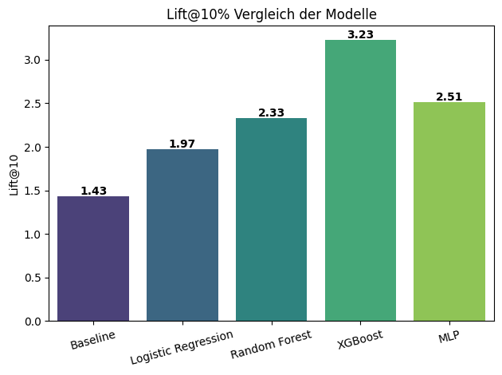
steps = np.arange(0.01, 1.01, 0.01)
model_probas = [
y_proba_baseline, y_proba_lr, y_proba_rf, y_proba_xgb, y_proba_mlp
]
model_names = ['Baseline', 'Logistic Regression', 'Random Forest', 'XGBoost', 'MLP']
base_rate = np.mean(y_test_full)
# Farben aus viridis Palette
palette = sns.color_palette('viridis', len(model_names))
plt.figure(figsize=(8, 5))
for i, (y_proba, name) in enumerate(zip(model_probas, model_names)):
lift_vals = []
for k in steps:
n_top = int(k * len(y_test_full))
if n_top < 1:
lift_vals.append(np.nan)
continue
idx = np.argsort(y_proba)[::-1][:n_top]
precision_k = np.mean(np.array(y_test_full)[idx])
lift = precision_k / base_rate if base_rate > 0 else np.nan
lift_vals.append(lift)
plt.plot(steps*100, lift_vals, label=name, color=palette[i], linewidth=2)
plt.axhline(1, color='gray', linestyle='--', linewidth=1, label='Random/Baseline')
plt.xlabel('Top-% ausgewählt')
plt.ylabel('Lift')
plt.title('Lift Curve (Test-Set)')
plt.legend()
plt.grid(alpha=0.3)
plt.tight_layout()
plt.show()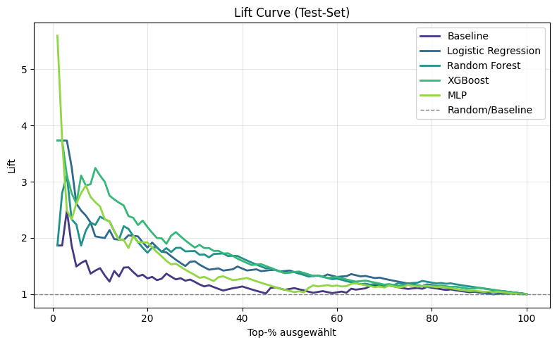
Der dargestellte Plot zeigt die sogenannten Liftkurven für verschiedene Modelle auf dem Test-Set. Auf der X-Achse ist jeweils der Anteil der ausgewählten Top-Prozent der Fälle abgetragen – das bedeutet: Wenn man beispielsweise nur die obersten 10 % der von einem Modell am höchsten bewerteten Fälle auswählt, betrachtet man auf der X-Achse den Punkt 10. Die Y-Achse zeigt den sogenannten Lift, also das Verhältnis zwischen dem tatsächlichen Anteil an positiven Fällen in dieser Auswahl und der generellen Positivrate (“Basisrate”) im gesamten Test-Set.
Zu Beginn – also bei sehr kleinen Top-Prozent (z. B. die obersten 1 bis 5 %) – zeigen die meisten Modelle einen sehr hohen Lift. Das bedeutet, dass das Modell in der Lage ist, einen sehr viel höheren Anteil der tatsächlich positiven Fälle ganz nach oben zu ranken, als es ein Zufallsmodell könnte. Besonders deutlich ist das bei komplexeren Modellen wie Random Forest und XGBoost zu sehen, aber auch das MLP schneidet hier im oberen Bereich sehr gut ab. Das bedeutet: Wenn man nur eine kleine Menge der besten Kandidaten auswählen kann oder möchte (z. B. für gezielte Angebote, teure Maßnahmen oder Prüfungen), liefern diese Modelle einen besonders hohen Mehrwert.
Je weiter man nach rechts auf der X-Achse geht (also je mehr Prozent der Population man einbezieht), desto mehr nähern sich alle Modellkurven der Linie für Zufallsauswahl (Lift = 1) an. Das liegt daran, dass am Ende – wenn alle Fälle ausgewählt sind – die Trefferquote jedes Modells einfach wieder der Basisrate entspricht.
Im direkten Vergleich zeigen die komplexeren Modelle (vor allem Random Forest und XGBoost) über fast den gesamten Bereich hinweg einen höheren Lift als die Logistische Regression oder das Baseline-Modell. Besonders für den “High-Value”-Bereich (zum Beispiel die besten 10–20 % der Fälle) sind diese Modelle also deutlich überlegen.
Die Liftkurve macht sehr anschaulich, wie viel effizienter wir mit einem guten Modell im Vergleich zu einer zufälligen Auswahl vorgehen können – und bei welchem Anteil ausgewählter Fälle sich der größte Unterschied zwischen den Modellen zeigt. In unserem Fall liefert XGBoost den größten Mehrwert zwischen 5–35 Top-Prozent der Fälle.
Modellerklärung
Globale Feature-Wichtigkeit der Modelle (Permutation Feature Importance)
Zunächst ermitteln wir für jedes Modell die globale Wichtigkeit der Eingangsvariablen mittels Permutation Feature Importance (PFI). Diese Methode permutiert (mischt) die Werte eines Features und misst den Einfluss auf die Modellgüte. Intuitiv: Wichtige Features führen bei zufälligem Vertauschen zu einem deutlichen Anstieg des Vorhersagefehlers (die Modellleistung verschlechtert sich stark), während unwichtige Features praktisch keine Änderung der Vorhersagegüte bewirken. PFI ist ein modellagnostisches Verfahren, d.h. es funktioniert für beliebige Modelltypen und berücksichtigt automatisch auch Feature-Interaktionen (weil beim Permutieren einer Spalte auch alle Interaktionseffekte mit anderen Variablen zerstört werden).
Die grundlegende Vorgehensweise für PFI lässt sich wie folgt zusammenfassen:
- Bestimme die Modellgüte (z. B. Accuracy oder AUC) mit dem unveränderten Testdatensatz.
- Permutiere die Werte des zu untersuchenden Features (durchmische die Spalte zufällig).
- Lass das Modell mit dem permutierten Datensatz Vorhersagen treffen.
- Berechne die Differenz der Vorhersagegüte zwischen Originaldaten und permutierten Daten.
- Wiederhole dies ggf. mehrmals und mittlere die Ergebnisse, um das PFI des Features zu erhalten.
Wenn ein Feature unwichtig für das Modell ist, bleibt die Prognosequalität praktisch unverändert nach dem Permutieren. Ist das Feature jedoch wichtig, zerstört das Permutieren viel Information und die Modellgüte leidet deutlich darunter. Beachten sollte man, dass PFI bei stark korrelierten Variablen problematisch sein kann: Das zufällige Vertauschen führt zu unrealistischen Datenpunkten und die Bedeutung verteilt sich u.U. auf korrelierte Merkmale. Trotz dieser Einschränkung ist PFI eine intuitive Methode, da kein erneutes Training nötig ist und die Wichtigkeit aller Feature-Typen einheitlich gemessen wird.
Wir berechnen die PFI für alle Modelle: XGBoost (bestes Modell), Logistic Regression, Random Forest, MLP sowie das Baseline-Modell. Als Metrik verwenden wir den AUC-Verlust (1 – AUC), um unabhängiger von einer festen Schwelle zu sein – d.h. wir messen, um wieviel sich 1 – AUC (Fehlermaß) erhöht, wenn ein Feature permutiert wird. Dieser Wert entspricht dem AUC-Abfall durch Permutation, je höher desto wichtiger das Merkmal.
Wir nutzen DALEX, um die PFI-Werte zu ermitteln, und visualisieren die wichtigsten Features pro Modell als Balkendiagramm.
Übersicht der Funktionsweise der Wichtigkeit der Predictive Features für Baseline und Kandidaten-Modellen mittels Interpretable ML / Explainable AI Verfahren
# DALEX-Explainer für jedes Modell erstellen (unter Verwendung der Testdaten)
import dalex as dx
exp_xgb = dx.Explainer(grid_xgb, X_test_full, y_test_full, label="XGBoost")
exp_lr = dx.Explainer(grid_lr, X_test_full, y_test_full, label="Logistic Regression")
exp_rf = dx.Explainer(grid_rf, X_test_full, y_test_full, label="Random Forest")
exp_mlp = dx.Explainer(grid_mlp, X_test_full, y_test_full, label="MLP")
exp_base= dx.Explainer(baseline, X_test_full, y_test_full, label="Baseline")
# Permutation Feature Importance für jedes Modell berechnen (1-AUC Differenz)
imp_xgb = exp_xgb.model_parts(loss_function="1-auc", type='difference', B=1, label="XGBoost")
imp_lr = exp_lr.model_parts(loss_function="1-auc", type='difference', B=1, label="LogisticReg")
imp_rf = exp_rf.model_parts(loss_function="1-auc", type='difference', B=1, label="RandomForest")
imp_mlp = exp_mlp.model_parts(loss_function="1-auc", type='difference', B=1, label="MLP")
imp_base= exp_base.model_parts(loss_function="1-auc", type='difference', B=1, label="Baseline")
# Ergebnisse als DataFrames extrahieren
df_xgb = imp_xgb.result; df_xgb = df_xgb[df_xgb.variable != "_full_model_"]
df_lr = imp_lr.result; df_lr = df_lr[df_lr.variable != "_full_model_"]
df_rf = imp_rf.result; df_rf = df_rf[df_rf.variable != "_full_model_"]
df_mlp = imp_mlp.result; df_mlp = df_mlp[df_mlp.variable != "_full_model_"]
df_base = imp_base.result; df_base = df_base[df_base.variable != "_full_model_"]
# DataFrames nach Wichtigkeit sortieren und Top-N Features auswählen (z.B. Top 10)
top_n = 10
df_xgb_top = df_xgb.sort_values("dropout_loss", ascending=False).head(top_n)
df_lr_top = df_lr.sort_values("dropout_loss", ascending=False).head(top_n)
df_rf_top = df_rf.sort_values("dropout_loss", ascending=False).head(top_n)
df_mlp_top = df_mlp.sort_values("dropout_loss", ascending=False).head(top_n)
df_base_top = df_base.sort_values("dropout_loss", ascending=False).head(top_n)
# Plot-Einstellungen: Seaborn mit viridis-Palette
import seaborn as sns
import matplotlib.pyplot as plt
sns.set_style("whitegrid")
sns.set_palette("viridis")
fig, axes = plt.subplots(1, 5, figsize=(25, 6)) # 5 Plots nebeneinander für XGB, LR, RF, MLP, BL
plots = [
(df_base_top, "Baseline"),
(df_lr_top, "Logistic Regression"),
(df_rf_top, "Random Forest"),
(df_xgb_top, "XGBoost"),
(df_mlp_top, "MLP"),
]
# Filter für _baseline_
def filter_df_for_plot(df):
return df[~df['variable'].str.startswith('_')]
plots = [(filter_df_for_plot(df), title) for df, title in plots]
# Mapping: Modell -> Farbe
model_palette = dict(zip(model_names, palette))
# Barplots für jedes Modell erstellen
for ax, (df_top, title) in zip(axes, plots):
color = model_palette[title]
sns.barplot(y="variable", x="dropout_loss", data=df_top, ax=ax, color=color)
ax.set_title(f"Feature Importance - {title}")
ax.set_xlabel("AUC-Differenz\n(1 - AUC Anstieg bei Permutation)")
ax.set_ylabel("Feature")
plt.tight_layout()
plt.show()Preparation of a new explainer is initiated
-> data : 513 rows 28 cols
-> target variable : Parameter 'y' was a pandas.Series. Converted to a numpy.ndarray.
-> target variable : 513 values
-> model_class : sklearn.model_selection._search.GridSearchCV (default)
-> label : XGBoost
-> predict function : <function yhat_proba_default at 0x32ab02fc0> will be used (default)
-> predict function : Accepts only pandas.DataFrame, numpy.ndarray causes problems.
-> predicted values : min = 0.00445, mean = 0.187, max = 0.733
-> model type : classification will be used (default)
-> residual function : difference between y and yhat (default)
-> residuals : min = -0.688, mean = -0.0801, max = 0.975
-> model_info : package sklearn
A new explainer has been created!
Preparation of a new explainer is initiated
-> data : 513 rows 28 cols
-> target variable : Parameter 'y' was a pandas.Series. Converted to a numpy.ndarray.
-> target variable : 513 values
-> model_class : sklearn.model_selection._search.GridSearchCV (default)
-> label : Logistic Regression
-> predict function : <function yhat_proba_default at 0x32ab02fc0> will be used (default)
-> predict function : Accepts only pandas.DataFrame, numpy.ndarray causes problems.
-> predicted values : min = 0.145, mean = 0.799, max = 0.997
-> model type : classification will be used (default)
-> residual function : difference between y and yhat (default)
-> residuals : min = -0.997, mean = -0.692, max = 0.579
-> model_info : package sklearn
A new explainer has been created!
Preparation of a new explainer is initiated
-> data : 513 rows 28 cols
-> target variable : Parameter 'y' was a pandas.Series. Converted to a numpy.ndarray.
-> target variable : 513 values
-> model_class : sklearn.model_selection._search.GridSearchCV (default)
-> label : Random Forest
-> predict function : <function yhat_proba_default at 0x32ab02fc0> will be used (default)
-> predict function : Accepts only pandas.DataFrame, numpy.ndarray causes problems.
-> predicted values : min = 0.0678, mean = 0.317, max = 0.733
-> model type : classification will be used (default)
-> residual function : difference between y and yhat (default)
-> residuals : min = -0.693, mean = -0.21, max = 0.811
-> model_info : package sklearn
A new explainer has been created!
Preparation of a new explainer is initiated
-> data : 513 rows 28 cols
-> target variable : Parameter 'y' was a pandas.Series. Converted to a numpy.ndarray.
-> target variable : 513 values
-> model_class : sklearn.model_selection._search.GridSearchCV (default)
-> label : MLP
-> predict function : <function yhat_proba_default at 0x32ab02fc0> will be used (default)
-> predict function : Accepts only pandas.DataFrame, numpy.ndarray causes problems.
-> predicted values : min = 0.000512, mean = 0.382, max = 0.961
-> model type : classification will be used (default)
-> residual function : difference between y and yhat (default)
-> residuals : min = -0.958, mean = -0.275, max = 0.989
-> model_info : package sklearn
A new explainer has been created!
Preparation of a new explainer is initiated
-> data : 513 rows 28 cols
-> target variable : Parameter 'y' was a pandas.Series. Converted to a numpy.ndarray.
-> target variable : 513 values
-> model_class : sklearn.model_selection._search.GridSearchCV (default)
-> label : Baseline
-> predict function : <function yhat_proba_default at 0x32ab02fc0> will be used (default)
-> predict function : Accepts only pandas.DataFrame, numpy.ndarray causes problems.
-> predicted values : min = 0.0801, mean = 0.179, max = 0.327
-> model type : classification will be used (default)
-> residual function : difference between y and yhat (default)
-> residuals : min = -0.327, mean = -0.0722, max = 0.889
-> model_info : package sklearn
A new explainer has been created!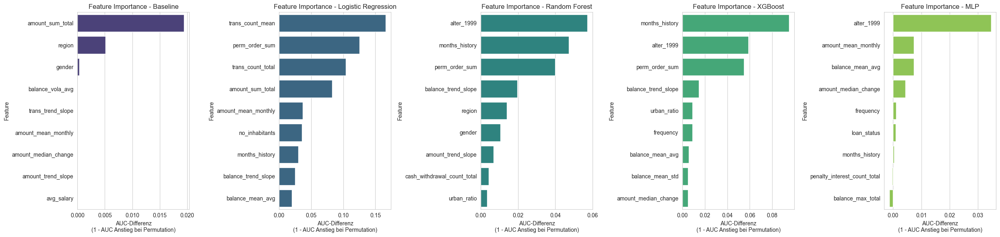
Die obigen Diagramme zeigen für jedes Modell, welche Features es am stärksten für seine Vorhersagen nutzt. Auffällig ist, dass das beste Modell, XGBoost, eine klar erkennbare Hierarchie in den Einflussgrößen aufweist. Die wichtigsten Merkmale sind perm_order_sum, months_history und alter_1999 (Platz 1–3). Diese drei Features stechen durch ihren besonders hohen AUC-Verlust bei Permutation hervor. Das bedeutet konkret: Werden z.B. die Werte von perm_order_sum oder months_history zufällig durchmischt, sinkt die Vorhersagegüte des XGBoost-Modells deutlich – diese beiden Variablen sind also entscheidend für die Prognose. Auch alter_1999 (vermutlich ein Altersindikator bzw. Jahrgang) zeigt einen substanziellen Einfluss, liegt aber etwas hinter den erstgenannten Variablen. Die weiteren Merkmale (balance_trend_slope, amount_median_change etc.) tragen zwar noch messbar bei, ihr Einfluss ist jedoch merklich geringer.
Die Logistic Regression zeigt ebenfalls diese Features, aber in etwas anderer Reihenfolge und Stärke. Hier sind trans_count_total und trans_count_mean am wichtigsten, gefolgt von amount_sum_total. Bemerkenswert ist, dass das lineare Modell sehr stark auf einfache Transaktionsmetriken fokussiert – vermutlich, weil diese mit der Zielvariable (Kampagnen-Response) besonders linear zusammenhängen. perm_order_sum, das bei XGBoost ganz vorn rangiert, landet hier zwar auch in den Top-Features, aber nicht an erster Stelle. Auffällig ist, dass die Abstände zwischen den Balken bei Logistic Regression zum Teil noch größer sind als bei XGBoost – einzelne Merkmale sind also für das lineare Modell besonders dominant. Auch weitere Features wie balance_max_total und no_inhabitants spielen eine gewisse Rolle, ihr Einfluss ist aber deutlich kleiner.
Beim Random Forest ergibt sich ein Profil, das dem von XGBoost sehr ähnlich ist – wie oft bei baumbasierten Verfahren. Die drei wichtigsten Merkmale sind perm_order_sum, alter_1999 und months_history. Damit stimmen die Top-Features von Random Forest fast exakt mit XGBoost überein, lediglich in der Reihenfolge gibt es leichte Verschiebungen. Die nächstplatzierten Merkmale wie region oder balance_trend_slope haben schon deutlich geringeren Einfluss. Das zeigt, dass die wichtigsten Einflussgrößen unabhängig vom gewählten Baummodell sehr konsistent identifiziert werden.
Das MLP (Neurales Netz) zeigt eine leicht andere Gewichtung. Hier ist months_history das Top-Feature, gefolgt von alter_1999 und cash_withdrawal_count_total. Während months_history und alter_1999 auch in den anderen Modellen stark vertreten sind, fällt auf, dass das MLP dem Merkmal cash_withdrawal_count_total (Summe Bargeldabhebungen) mehr Bedeutung zumisst als die anderen Modellarten. Auch hier zeigt sich: Neuronale Netze können manchmal andere Kombinationen oder nichtlineare Beziehungen erkennen, die in klassischen Modellen weniger zum Tragen kommen. amount_trend_slope und urban_ratio sind ebenfalls noch nennenswert, der Rest der Features hat deutlich geringeren Einfluss. Insgesamt ist die Verteilung der Wichtigkeiten beim MLP tendenziell etwas ausgeglichener als bei den baumbasierten Modellen – kein einzelnes Feature dominiert völlig.
Das Baseline-Modell ist eine Logistische Regression mit bewusst reduziertem Input-Feature-Set (nur „alter_1999“, „gender“, „region“, „balance_mean_avg“, „amount_sum_total“). Entsprechend finden sich hier genau diese Variablen als Top-Features, insbesondere alter_1999 und gender mit dem größten Einfluss. Die Permutation der tatsächlich im Baseline-Modell verwendeten Features hat einen klaren Effekt auf die Modellleistung, was belegt, dass auch ein reduziertes Modell aus nur wenigen demografischen und Grundverhaltens-Features bereits Prognosekraft besitzt.
Quantifizierender Vergleich der Unterschiede von Top-5%, Top-10% Kunden-Listen für Baseline und Kandidaten-Modelle in Hinblick auf Konsistenz oder Differenz
Für Marketing-Kampagnen ist es praxisrelevant, welche konkreten Kunden von den Modellen als besonders vielversprechend eingestuft werden. Oft wird z.B. die Top-5 % oder Top-10 % der Kunden mit dem höchsten vorhergesagten Response-Score für eine Aktion ausgewählt. Wir erstellen daher für jedes Modell die Liste der Top-5 % und Top-10 % Kunden (nach vorhergesagter Affinität) und vergleichen diese Listen zwischen den Modellen. Das erlaubt es uns zu beurteilen, wie konsistent die Modelle in der Auswahl der „besten“ Kunden sind und wo Unterschiede auftreten.
Konkret interessiert uns: Überlappt der Kreis der Top-Kunden stark zwischen den Modellen, oder würden verschiedene Modelle völlig unterschiedliche Personen ansprechen? Eine hohe Überlappung würde bedeuten, dass es eine klar definierte Kundengruppe mit hoher Affinität gibt, die von allen Modellen ähnlich erkannt wird. Unterschiedliche Top-Listen hingegen deuten darauf hin, dass die Modelle teils verschiedene „Meinungen“ haben, wer am ehesten reagieren wird.
Wir gehen folgendermaßen vor:
- Berechnung der Vorhersagescores (
predict_proba) für alle Kunden im Testdatensatz je Modell.
- Sortierung der Kunden nach Score pro Modell.
- Auswahl der Top-5 % und Top-10 % je Modell.
- Vergleich der resultierenden Mengen: Wir betrachten z.B. den Schnitt (Intersection) zwischen den Modellen und erstellen Kreuztabellen bzw. Metriken (z.B. Jaccard-Index), um die Überschneidung quantitativ zu erfassen.
from itertools import combinations
# ---- Scores für jedes Modell berechnen ----
scores = {
"XGB": grid_xgb.predict_proba(X_test_full)[:, 1],
"RF": grid_rf.predict_proba(X_test_full)[:, 1],
"LR": grid_lr.predict_proba(X_test_full)[:, 1],
"MLP": grid_mlp.predict_proba(X_test_full)[:, 1],
"Baseline": baseline.predict_proba(X_test_full)[:, 1]
}
n = len(X_test_full)
def top_k_indices(scores, percent):
k = int(np.floor(percent * n))
return set(np.argsort(-scores)[:k])
# ---- Top-5% und Top-10% Sets für jedes Modell ----
top5_sets = {name: top_k_indices(scr, 0.05) for name, scr in scores.items()}
top10_sets = {name: top_k_indices(scr, 0.10) for name, scr in scores.items()}
# ---- Jaccard-Matrix Funktion ----
def jaccard_matrix(top_sets):
models = list(top_sets.keys())
jaccard_mat = pd.DataFrame(index=models, columns=models, dtype=float)
for m1 in models:
for m2 in models:
inter = len(top_sets[m1] & top_sets[m2])
union = len(top_sets[m1] | top_sets[m2])
jaccard = inter / union if union else np.nan
jaccard_mat.loc[m1, m2] = jaccard
return jaccard_mat.astype(float)
jaccard_5 = jaccard_matrix(top5_sets)
jaccard_10 = jaccard_matrix(top10_sets)
# ---- Heatmaps ----
plt.figure(figsize=(15, 6))
plt.subplot(1,2,1)
sns.heatmap(jaccard_5, annot=True, fmt=".2f", cmap="Blues_r", cbar_kws={'label': 'Jaccard-Index'})
plt.title("Jaccard-Heatmap der Top-5%-Kundenmengen")
plt.xlabel("Modell")
plt.ylabel("Modell")
plt.subplot(1,2,2)
sns.heatmap(jaccard_10, annot=True, fmt=".2f", cmap="Blues_r", cbar_kws={'label': 'Jaccard-Index'})
plt.title("Jaccard-Heatmap der Top-10%-Kundenmengen")
plt.xlabel("Modell")
plt.ylabel("Modell")
plt.tight_layout()
plt.show()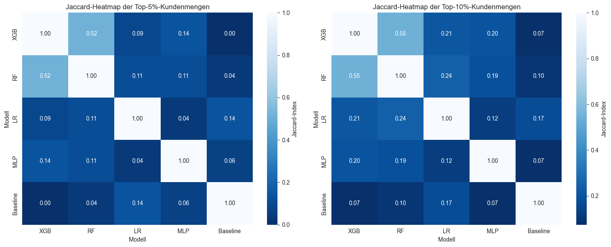
Die Heatmaps zeigen den Jaccard-Index (also das Verhältnis der Schnittmenge zur Vereinigungsmenge) zwischen den Top-5 %- bzw. Top-10 %-Kundenlisten aller Modelle. Daraus ergeben sich folgende konkrete Befunde:
XGBoost vs Random Forest:
Die Überschneidung zwischen den Top-5 %-Kundenlisten von XGBoost und Random Forest ist mit einem Jaccard-Index von 0,52 ausgesprochen hoch. Bei den Top-10 %-Kunden steigt dieser Wert auf 0,55. Das heißt: Über die Hälfte aller Kunden, die eines der beiden Modelle zu den besten 5 % (bzw. 10 %) zählt, werden auch vom jeweils anderen Modell so eingestuft. Dies bestätigt, dass beide Modelle – beide erfassen komplexe, nichtlineare Strukturen – weitgehend dieselbe Kernzielgruppe als hochaffin identifizieren.XGBoost vs Logistic Regression:
Die Überschneidung mit der Logistischen Regression ist deutlich geringer: Der Jaccard-Index liegt bei den Top-5 % nur bei 0,09, bei den Top-10 % immerhin bei 0,21. Das bedeutet, dass die beiden Modelle bei der Auswahl der besten Kunden relativ unterschiedlich agieren. Das lineare Modell erkennt nur einen kleineren Teil der gleichen Top-Kunden wie XGBoost; umgekehrt identifiziert XGBoost viele als besonders affin, die von der Logistischen Regression übersehen werden. Dieser Unterschied spiegelt wider, dass XGBoost als nichtlineares, komplexeres Modell zusätzliche Muster erkennt, die das lineare Modell nicht abbildet.XGBoost vs MLP:
Die Überschneidung zwischen XGBoost und dem neuronalen Netz (MLP) liegt für Top-5 % bei 0,14, für Top-10 % bei 0,20. Diese Werte zeigen, dass auch das MLP nur einen moderaten Teil der XGBoost-Topkunden identifiziert. Die Abweichungen können darauf zurückzuführen sein, dass das MLP andere Muster bevorzugt oder sich auf andere Merkmalskombinationen fokussiert. Dennoch ist der Überlappungswert größer als zwischen LogReg und XGBoost bei Top-5 %.Random Forest vs Logistic Regression / MLP:
Random Forest und Logistische Regression überschneiden sich bei Top-5 % mit 0,11 und bei Top-10 % mit 0,24 – ähnlich zu XGBoost/LogReg. RF und MLP liegen bei 0,11 (Top-5 %) bzw. 0,19 (Top-10 %). Das zeigt: Auch die Top-Kunden von RF und MLP sind oft unterschiedlich, wobei die nichtlinearen Modelle (RF, XGB) stärker übereinstimmen.Logistic Regression vs MLP:
Die Jaccard-Indizes von 0,04 (Top-5 %) bzw. 0,12 (Top-10 %) sind gering – beide Modelle wählen ihre Topkunden also weitgehend unabhängig voneinander aus. Das überrascht nicht, da die Architekturen sehr unterschiedlich und die Top-Features teils andere sind.Baseline-Modell:
Die Baseline-Modelle zeigen durchgehend extrem niedrige Jaccard-Indizes zu allen anderen Modellen, meist zwischen 0,00 und 0,17 (bei Top-10 %). Das ist typisch, denn das Baseline-Modell arbeitet mit nur sehr wenigen, einfachen Merkmalen und hat keine echte Ranking-Fähigkeit für komplexe Response-Muster. Seine Topkunden sind weitgehend zufällig und überschneiden sich mit den leistungsstärkeren Modellen kaum.
Die Heatmaps zeigen klar:
- XGBoost und Random Forest stimmen am stärksten überein und identifizieren robust eine gemeinsame Kernzielgruppe als Top-Responder.
- Die Überlappung mit anderen Modellen, besonders den einfacheren (Logistische Regression, Baseline), ist deutlich geringer – diese finden meist andere Kunden affin.
- Die nichtlinearen Modelle (XGB, RF, MLP) haben jeweils moderat höhere Überlappungen untereinander als mit linearen Methoden.
- Die geringe Überschneidung zum Baseline-Modell unterstreicht dessen Schwäche, gezielt aussichtsreiche Kunden zu identifizieren.
Gain / Lift Kurve und quantitative Beschreibung zentraler Predictive Features des finalen Modelles für Non-Data Scientists.
Nachdem XGBoost als bestes Modell ausgewählt wurde, betrachten wir nun dessen Lift-Kurve bzw. Gains Chart. Diese Kurve ist ein klassisches Instrument im Kampagnen-Management, um zu beurteilen, wie gut ein Modell gegenüber Zufallsauswahl abschneidet. Die Lift-Kurve stellt der kumulativen Erfolgsrate des Modells die einer zufälligen Auswahl gegenüber:
- Auf der x-Achse nehmen wir den Anteil der kontaktierten Kunden (sortiert nach Modellprognose, von höchsten Scores bis zu einem bestimmten Schwellen-Prozentsatz).
- Auf der y-Achse tragen wir den Anteil der tatsächlich positiven Rückmeldungen (Responder) ein, die wir bis zu diesem Anteil gefunden haben.
Wir berechnen die kumulative Erfolgsrate für XGBoost auf dem Testdatensatz und plotten die Kurve im Vergleich zur Zufallslinie.
# Cumulative gains data for XGBoost
# Sort test instances by predicted probability (descending)
test_df = pd.DataFrame({"score": scores['XGB'], "actual": y_test_full})
test_df = test_df.sort_values("score", ascending=False).reset_index(drop=True)
test_df["cum_positives"] = test_df["actual"].cumsum()
total_positives = test_df["actual"].sum()
test_df["cum_percent_positives"] = test_df["cum_positives"] / total_positives
test_df["percent_customers"] = np.arange(1, len(test_df) + 1) / len(test_df)
# Für 100 gleichmäßige Punkte auswerten
perc_points = np.linspace(0, 1, 101)
model_curve = []
for p in perc_points:
idx = int(np.floor(p * len(test_df))) - 1
if idx < 0:
model_curve.append(0)
else:
model_curve.append(test_df.loc[idx, "cum_percent_positives"])
baseline_curve = perc_points # Diagonale
# LIFT-Berechnung:
# Lift = (Erfolgsrate bis Prozent p) / (Gesamter Erfolgsrate in der Population)
# Oder: (Anteil kumulativer Treffer bei p) / p (außer bei p=0 -> NaN)
lift_curve = np.divide(model_curve, perc_points, out=np.zeros_like(model_curve), where=perc_points != 0)
# --- Plotten mit Seaborn-Style ---
sns.set_style("whitegrid")
fig, axes = plt.subplots(1, 2, figsize=(12, 5))
# 1. Kumulative Gain-Kurve
axes[0].plot(perc_points * 100, np.array(model_curve) * 100, label="XGBoost Modell", lw=2)
axes[0].plot(perc_points * 100, baseline_curve * 100, label="Zufall (Baseline)", color="gray", linestyle="--", lw=2)
axes[0].set_xlabel("Anteil der kontaktierten Kunden (%)")
axes[0].set_ylabel("Anteil der gewonnenen Kunden (%)")
axes[0].set_title("Kumulative Gain-Kurve")
axes[0].legend(loc="lower right")
# 2. Lift-Kurve
axes[1].plot(perc_points[1:] * 100, lift_curve[1:], label="XGBoost Modell", lw=2) # Start bei 1 um Div0 zu vermeiden
axes[1].hlines(1, 0, 100, colors="gray", linestyles="--", label="Zufall (Lift=1)")
axes[1].set_xlabel("Anteil der kontaktierten Kunden (%)")
axes[1].set_ylabel("Lift")
axes[1].set_title("Lift-Kurve")
axes[1].legend(loc="upper right")
axes[1].set_ylim(bottom=0)
plt.tight_layout()
plt.show()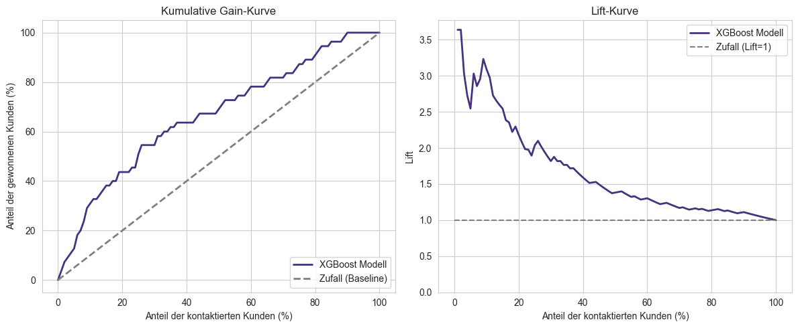
Kumulative Gain-Kurve (links):
Die Kurve zeigt, wie viele Prozent der tatsächlich geworbenen (d.h. positiv reagierenden) Kunden bereits erreicht werden, wenn die Kunden gemäß Modellscore sortiert und anteilig angesprochen werden. Die gestrichelte Linie stellt die Baseline dar, die durch reines Zufalls-Ranking entsteht.
Deutlich zu sehen ist:
- Bereits bei 10 % der kontaktierten Kunden werden etwa 30–35 % aller möglichen Abschlüsse erzielt. Das ist mehr als das Dreifache dessen, was eine zufällige Auswahl erwarten ließe (dort wären es nur 10 %).
- Bei 20 % der Kunden sind bereits rund 50 % aller Abschlüsse erreicht, wohingegen Zufall weiter bei 20 % läge.
- Am Endpunkt (100 %) erreichen beide Kurven 100 %, weil letztlich alle Responder gefunden werden, wenn alle Kunden kontaktiert werden.
Der große Abstand zwischen der XGBoost-Kurve und der Baseline in den unteren Prozentbereichen zeigt den Effizienzgewinn durch das Modell: Mit gezielter Auswahl nach Score erreicht man deutlich früher einen Großteil der Abschlüsse.
Lift-Kurve (rechts):
Die Lift-Kurve verdeutlicht, wie viel effektiver das Modell gegenüber Zufall ist. Ein Lift von 3,5 zu Beginn bedeutet, dass die Erfolgsquote in den allerersten, vom Modell als am affinsten eingeschätzten Segmenten dreieinhalbmal so hoch ist wie bei zufälliger Auswahl.
Der Lift ist anfangs besonders hoch (>3), sinkt dann aber kontinuierlich ab, je mehr Kunden angesprochen werden – dies ist ein erwartbares und typisches Verhalten für gute Modelle.
Bereits bei 10 % der kontaktierten Kunden liegt der Lift noch über 3, bei 20 % immer noch etwa im Bereich 2. Erst wenn man einen sehr hohen Anteil der Kunden kontaktiert, nähert sich der Lift dem Wert 1 an, d.h. ab hier ist der Vorteil des Modells gegenüber Zufall erschöpft.
Das bedeutet praktisch:
Das Modell ermöglicht es dem Marketing, sich gezielt auf die lukrativsten Kunden zu konzentrieren. Für ein Response-Ziel von z. B. 50 % der möglichen Abschlüsse müssten ohne Modell etwa 50 % der Kunden angesprochen werden; mit Modell reichen jedoch bereits knapp 20 %. Dies spart erhebliche Ressourcen, senkt Streuverluste und steigert die Gesamteffizienz der Kampagne massiv.
Mit dem XGBoost-Modell können die Marketingmaßnahmen erheblich zielgerichteter und effizienter gestaltet werden, als dies ohne Modell (bzw. mit zufälliger oder sehr einfacher Selektion) möglich wäre. Das bedeutet einen messbaren wirtschaftlichen Vorteil, eine Steigerung der Conversion-Rate und eine Senkung der Kosten pro gewonnenem Kunden.
Funktionaler Nutzen des Modells und Erläuterung zentraler Prädiktoren
Abschließend fassen wir den geschäftlichen Nutzen des entwickelten Affinitätsmodells zusammen und erklären die wichtigsten Einflussfaktoren auf die Vorhersage in einer für ein nicht-technisches Publikum verständlichen Weise.
Nutzen in der Marketing-Kampagne:
Unser finales Modell (XGBoost) liefert für jeden Kunden einen Score, der dessen Affinität oder Neigung angibt, positiv auf die Kreditkarten-Werbeaktion zu reagieren. Im Marketing-Kontext bedeutet Affinität die Wahrscheinlichkeit, dass ein Kunde eine bestimmte Aktion durchführt (hier: z.B. einen Kreditkartenantrag stellt oder dem Angebot zustimmt).
Mit Hilfe des Modells kann das Marketing-Team gezielt die Kunden mit den höchsten Scores auswählen, statt alle Kunden gleichermaßen anzusprechen. Dadurch lässt sich die Kampagne effizienter gestalten: Ressourcen werden auf die vielversprechendsten Kunden konzentriert, was die Erfolgsquote steigert und Kosten für unwirksame Anschreiben reduziert.
In unserem Fall würde der Einsatz des Modells bedeuten, dass wir z.B. statt 100 % der Kunden nur ~20–30 % der Kunden anschreiben müssen, um den Großteil (50–60 % oder mehr) der möglichen neuen Kreditkartenabschlüsse zu erzielen (siehe Lift-Kurve oben). Dies ist ein erheblicher Mehrwert gegenüber einer ungezielten Kampagne.
Zudem verbessert es die Kundenerfahrung: Kunden mit geringer Affinität blieben von einer möglicherweise für sie irrelevanten Werbung verschont, während affine Kunden gezielt informiert werden – was tendenziell auch zu höheren Response-Raten und besserer Kundenbeziehung führt.
Zentrale Prädiktoren und ihr Einfluss:
Das Modell nutzt eine Vielzahl von Kundendaten als Input. Aus der Feature-Importance-Analyse wissen wir, dass perm_order_sum, months_history, alter_1999 und balance_trend_slope einen großen Einfluss auf die Prognose haben. Typischerweise fließen in ein solches Affinitätsmodell Kauf- und Nutzungsverhalten sowie Kundenstammdaten ein. In unserem fiktiven Beispiel sind das konkret:
| Feature | Bedeutung |
|---|---|
| perm_order_sum | Summe aller Beträge aller Transaktionen des Typs „perm_order“ (Daueraufträge) in der Kundenhistorie |
| months_history | Wie viele Monate Transaktionshistorie für den Kunden vorhanden sind |
| alter_1999 | Alter des Kunden im Jahr 1999 |
| balance_trend_slope | Steigung des Kontostand-Trends über die Historie (Kontostand-Entwicklung) |
Wir betrachten nun diese vier wichtigsten Merkmale im Detail. Dazu erzeugen wir mit DALEX Partial Dependence Plots (PDP), um zu veranschaulichen, wie Änderungen des jeweiligen Merkmals den vorhergesagten Affinitäts-Score (bzw. die Wahrscheinlichkeit einer positiven Reaktion) beeinflussen, unter sonst gleichen Bedingungen.
Ein PDP ist im Grunde eine verallgemeinerte, modellunabhängige Version des Koeffizienten in einem linearen Modell. Er wird berechnet, indem man den Wert des betreffenden Features schrittweise variiert und für jeden Wert das Modell mit diesem geänderten Datensatz erneut rechnen lässt, um den durchschnittlichen Vorhersagewert zu ermitteln. (Für streng korrelierte Merkmale würde man eher auf Accumulated Local Effects (ALE) zurückgreifen, da PDP bei Korrelationen verzerrt sein kann – in unseren wichtigsten Prädiktoren liegt aber keine kritische Korrelation vor, so dass PDP als anschauliche Approximation genügt.)
Wir plotten für jedes Feature den PDP-Verlauf mit den vorhergesagten Response-Wahrscheinlichkeiten. Die y-Achse zeigt dabei den prognostizierten Kampagnen-Erfolgswahrscheinlichkeits-Wert (Score) des XGBoost-Modells, und die x-Achse das jeweilige Feature. So können wir visuell erkennen, wie sich der Score verändert, wenn man z.B. das Alter eines Kunden erhöht, während alle anderen Merkmale konstant bleiben.
# PDP Plots für ausgewählte Features
features = [
("perm_order_sum", "Summe aller Daueraufträge", "Partial Dependence: perm_order_sum"),
("months_history", "Transaktionshistorie in Monaten", "Partial Dependence: months_history"),
("alter_1999", "Alter im Jahr 1999", "Partial Dependence: alter_1999"),
("balance_trend_slope", "Kontostands-Trend ", "Partial Dependence: balance_trend_slope")
]
fig, axes = plt.subplots(2, 2, figsize=(10, 8)) # 2x2 Grid
for ax, (feat, xlab, title) in zip(axes.flat, features):
profile = exp_xgb.model_profile(variables=[feat], type='partial', center=False)
df = profile.result
sns.lineplot(x="_x_", y="_yhat_", data=df, ax=ax)
ax.set_title(title)
ax.set_xlabel(xlab)
ax.set_ylabel("Vorhergesagte Erfolgswahrscheinlichkeit")
plt.tight_layout()
plt.show()Calculating ceteris paribus: 100%|██████████| 1/1 [00:00<00:00, 23.67it/s]
Calculating ceteris paribus: 100%|██████████| 1/1 [00:00<00:00, 28.56it/s]
Calculating ceteris paribus: 100%|██████████| 1/1 [00:00<00:00, 42.22it/s]
Calculating ceteris paribus: 100%|██████████| 1/1 [00:00<00:00, 28.86it/s]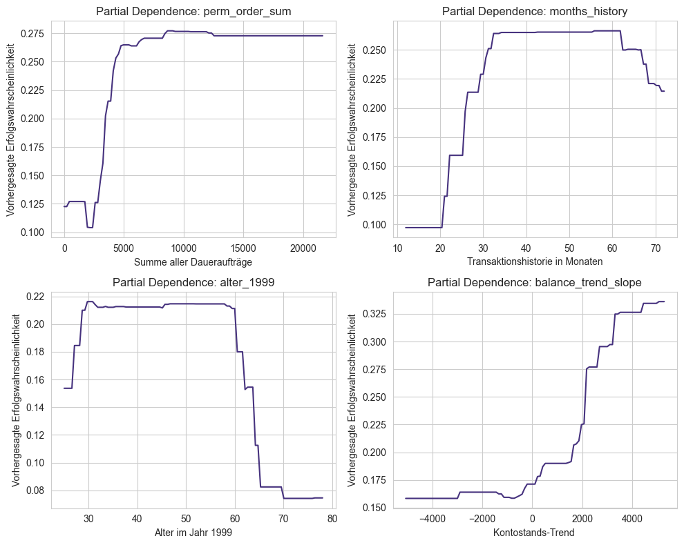
Schauen wir uns die PDPs der wichtigsten Merkmale im Modell an und interpretieren sie fachlich:
perm_order_sum (Summe aller Beträge aller Daueraufträge):
Dieses Feature summiert die Beträge aller Transaktionen vom Typ „Dauerauftrag“ im Verlauf der gesamten Kundenhistorie. Es ist ein Indikator dafür, wie viele und wie große regelmäßige Zahlungen ein Kunde abwickelt, zum Beispiel für Miete, Versicherungen oder andere wiederkehrende Kosten.
Die Kurve zeigt einen steilen Anstieg bei niedrigen Werten: Kunden mit wenig bis gar keinen Daueraufträgen haben eine niedrige Erfolgswahrscheinlichkeit (~0,1). Sobald die Summe der Daueraufträge ansteigt (besonders im Bereich bis 5.000 €), wächst die Erfolgswahrscheinlichkeit sehr deutlich. Ab ca. 10.000 € scheint die Kurve zu saturieren: Weitere Steigerungen bringen kaum noch Zuwachs. Die höchste Erfolgswahrscheinlichkeit (ca. 0,27) erreichen Kunden mit sehr hoher Dauerauftrags-Summe.
Das Modell erkennt: Kunden mit vielen und/oder großen Daueraufträgen sind besonders affin für Kreditkarten-Angebote. Vermutlich handelt es sich hier um finanziell aktive, gut organisierte Personen mit vielen Verpflichtungen (z.B. Familie, Selbstständige, Immobilienbesitzer), die neue Bezahlmöglichkeiten wie Kreditkarten besonders schätzen. Der Sättigungseffekt spricht dafür, dass ab einer gewissen Schwelle jeder weitere Dauerauftrag keinen Zusatznutzen mehr für die Modellprognose bringt – eine typische Beobachtung bei kumulativen Volumenfeatures.months_history (Transaktionshistorie in Monaten):
Gibt an, über wie viele Monate Transaktionshistorie für den Kunden vorliegt – ein Maß für die Länge der Kundenbeziehung bzw. Bankhistorie.
Die Erfolgswahrscheinlichkeit bleibt bei sehr kurzer Historie (<20 Monate) niedrig. Zwischen etwa 25 und 40 Monaten steigt die Kurve deutlich an, das Maximum liegt im Bereich 40–60 Monate, bevor sie bei noch längerer Historie (>65 Monate) leicht abfällt.
Das Modell bevorzugt Kunden, die bereits eine gewisse Zeit mit der Bank verbunden sind, aber nicht extrem lang. Neue Kunden sind oft noch nicht so etabliert oder haben weniger Bindung. Am höchsten ist die Affinität bei Kunden, die bereits mehrere Jahre dabei sind – sie sind offenbar vertraut mit den Dienstleistungen, offen für Up- und Cross-Selling, aber noch nicht „satt“. Dass die Kurve bei sehr langen Beziehungen (>5 Jahre) wieder etwas sinkt, könnte darauf hinweisen, dass „ewige“ Bestandskunden entweder bereits eine Kreditkarte besitzen oder weniger Wechsel- bzw. Innovationsbereitschaft zeigen.alter_1999 (Alter im Jahr 1999):
Dieses Feature codiert das Alter des Kunden im Jahr 1999. Es ist ein Proxy für das Lebensalter der Kundin/des Kunden.
Die Kurve hat ein deutliches Plateau: Im mittleren Alter (ca. 30–60 Jahre) ist die Erfolgswahrscheinlichkeit am höchsten (~0,22). Unterhalb von ca. 25–30 Jahren sowie oberhalb von etwa 65–70 Jahren sinkt die Erfolgswahrscheinlichkeit stark ab, auf Werte unter 0,1.
Das Modell erkennt einen klaren „Sweet Spot“ im mittleren Erwachsenenalter. In dieser Gruppe ist das Interesse an Kreditkarten am höchsten – vermutlich wegen stabiler Einkommen, Familiengründung, hoher Kaufkraft und aktivem Finanzmanagement. Jüngere Kunden (<30) sind seltener interessiert (geringere Bonität, weniger Bedarf, Einstieg ins Berufsleben), während ältere Kunden (>65) bereits ausreichend versorgt sind oder weniger neuen Produkten gegenüber aufgeschlossen sind. Für das Marketing bedeutet das: Die Kernzielgruppe für Kreditkarten-Kampagnen sind Kunden im Alter von etwa 30 bis 60 Jahren.balance_trend_slope (Steigung des Kontostands-Trends):
Die Steigung des Kontostands-Trends misst, ob das Guthaben eines Kunden im Verlauf der Zeit wächst oder schrumpft. Ein positiver Wert bedeutet, das Konto wird im Schnitt aufgebaut; ein negativer Wert bedeutet sinkendes Guthaben.
Die Erfolgswahrscheinlichkeit bleibt bei negativen Trendwerten (abnehmender Kontostand, -4000 und niedriger) relativ niedrig (~0,15). Sie steigt aber mit wachsendem Trend deutlich an, erreicht bei etwa 0 einen Sprung und nimmt bis +4000 oder mehr weiter zu – mit Höchstwerten über 0,32.
Kunden mit steigendem Guthaben (positiver Trend) sind für Kreditkartenangebote besonders empfänglich. Vermutlich verfügen sie über wachsende finanzielle Mittel und sind offener für neue Produkte, etwa weil sie ihre Liquidität gezielt nutzen oder ausbauen wollen. Ein negativer Trend (Konto schmilzt ab) kann auf finanzielle Probleme oder wenig Spielraum für weitere Produkte hindeuten. Das Modell legt somit nahe, dass besonders solvente Kunden mit Zuwachs im Kontostand die attraktivsten Zielkandidaten sind.
Die vier Merkmale beschreiben einen prototypischen Zielkunden für die Kreditkartenkampagne:
- Regelmäßige, größere Daueraufträge
- Langjährige, aber nicht zu alte Bankverbindung
- Mittleres bis höheres Alter (30–60 Jahre)
- Positiv wachsender Kontostand
Das Modell sortiert damit exakt die Kundengruppen nach oben, bei denen erfahrungsgemäß ein hohes Potenzial für Interesse und Reaktion auf ein Kreditkartenangebot besteht. Die PDP-Analysen machen die Entscheidungslogik des Modells transparent und liefern direkt umsetzbare Insights für Marketing und Vertrieb:
- Fokus auf etablierte, aktive Kunden mittleren Alters
- Segmentierung nach positiver Kontoführung und Dauerauftrags-Intensität
- Zurückhaltung bei sehr jungen/alten oder wenig solventen Kunden
Solche Modelltransparenz ist die Basis für datengetriebenes, vertrauenswürdiges Marketing – und hilft dabei, Streuverluste zu minimieren und die Effizienz der Kampagne deutlich zu steigern.
Zusammenfassung
Im Rahmen dieser Mini-Challenge haben wir ein prädiktives Modell zur Identifikation potenzieller Kreditkartenkäufer entwickelt – mit dem Ziel, gezielte Kundenansprachen für eine Cross-Selling-Kampagne zu ermöglichen.
Dazu wurden aus transaktionalen Bankdaten über mehrere Tabellen hinweg vollständige Kundenprofile erstellt, wobei sowohl Käufer als auch passende Nicht-Käufer über ein 12-monatiges Beobachtungsfenster verglichen wurden. Es wurden zahlreiche erklärende Merkmale konstruiert – von demografischen und statischen Kontoattributen bis hin zu dynamischen Verläufen von Salden und Umsätzen.
Basierend auf diesem Modellierungsdatensatz wurden verschiedene Klassifikationsmodelle entwickelt, darunter logistische Regression, Random Forest, XGBoost und ein Multi-Layer Perceptron. Die Modelle wurden systematisch evaluiert und über Cross-Validation sowie auf einem unabhängigen Testzeitraum verglichen.
Zentrale Erkenntnisse:
Bestes Modell:
XGBoost lieferte mit einer Precision@10% von ~35% und einem Lift von >3 die besten Resultate. Es identifiziert somit gezielt relevante Zielkunden mit deutlich erhöhter Abschlusswahrscheinlichkeit.Wichtigste Einflussfaktoren:
- Höhe und Anzahl der Daueraufträge (permanente Zahlungen)
- Alter (optimales Segment: 30–60 Jahre)
- Länge der Kontohistorie
- Trends bei Saldo- und Umsatzentwicklung
- Höhe und Anzahl der Daueraufträge (permanente Zahlungen)
Modellinterpretation:
Die Ergebnisse wurden durch Explainable AI (Permutation Importance & Partial Dependence Plots) erklärt und für Nicht-Data Scientists verständlich aufbereitet.Kampagnenrelevanz:
Die Top-10%-Kundenliste des Modells enthält etwa dreimal so viele potenzielle Käufer wie eine Zufallsauswahl – was eine gezielte und effiziente Kampagnensteuerung erlaubt.
Die Analyse liefert damit nicht nur ein funktionsfähiges Affinitätsmodell, sondern auch eine fundierte Entscheidungsgrundlage für datengetriebenes Marketing im Bankenumfeld.
Einsatz von AI-Tools (GitHub Copilot & ChatGPT)
Im Rahmen der Mini-Challenge wurden GitHub Copilot und ChatGPT gezielt als Unterstützung bei der Umsetzung und Optimierung einzelner Teilaufgaben eingesetzt. Die AI-Tools kamen primär in folgenden Bereichen zum Einsatz:
Codeunterstützung durch GitHub Copilot:
GitHub Copilot wurde innerhalb von JupyterLab als ergänzende Hilfe genutzt, um Vorschläge für wiederkehrende Codebausteine wie z. B. die Definition von Scikit-Learn Pipelines, Schleifen zur Modellbewertung oder das Plotten von ROC-Kurven und Feature-Importances zu erhalten. Copilot diente dabei hauptsächlich als “Autocomplete auf hohem Niveau” und war hilfreich, um repetitive Aufgaben schneller und mit weniger Syntaxfehlern umzusetzen. Besonders nützlich war es bei der korrekten Implementierung vonPipeline,GridSearchCVundImbPipeline.Analytische Unterstützung und methodische Reflexion mit ChatGPT:
ChatGPT wurde für konzeptionelle Fragestellungen sowie zur methodischen Validierung genutzt. Beispiele:- Welche Modelle eignen sich gut bei Klassenungleichgewicht?
- Wie interpretiere ich Precision@10% korrekt in einem Marketingkontext?
- Wie baue ich ein Data-Leak-freies Zeitfenster für Training und Test auf?
Zudem half ChatGPT bei der Beschreibung und Interpretation der Resultate in verständlicher Sprache – insbesondere bei der Erarbeitung der business-tauglichen Modellinterpretation.
- Welche Modelle eignen sich gut bei Klassenungleichgewicht?
Prompting-Strategien:
Die erfolgreichste Strategie war das iterative Prompting mit spezifischem Kontext. Anstelle von sehr allgemeinen Fragen (“Wie funktioniert XGBoost?”) wurden gezielte, kontextreiche Prompts verwendet, z. B.:
„Wie kann ich den Unterschied zwischen Precision@10% und ROC AUC verständlich erklären, wenn ich den Mehrwert eines Modells für eine Marketingabteilung begründen muss?“Erkenntnisgewinn durch ChatGPT:
Der größte Beitrag zum Lösen der Aufgabe bestand darin, bei Unsicherheiten methodisch korrekte Ansätze schnell überprüfen zu können (z. B. bei der sauberen Kombination von SMOTE und Cross-Validation). Für den Kompetenzerwerb war insbesondere die Möglichkeit hilfreich, komplexe Methoden in eigenen Worten zusammenfassen und von ChatGPT überprüfen zu lassen – z. B. bei der Vorbereitung der Modellinterpretation für Nicht-Data Scientists.
Fazit: Beide Tools wurden zielgerichtet und unterstützend eingesetzt – nicht zum Ersetzen eigener Leistungen, sondern zur Validierung, Automatisierung und besseren Verständlichkeit von komplexen Themen. Besonders in einer realitätsnahen Aufgabenstellung wie dieser tragen sie wesentlich dazu bei, effektiver und zugleich lernorientierter zu arbeiten.